Samba Solar Track
Waveshare ESP32-P4-WIFI6-Touch-LCD-10.1 met de printplaat RearCircuitBoard_10
De hoofdvariant van Samba Solar Track. Deze handleiding beschrijft de opbouw, de printplaat, de aansluitingen, de accu, het eerste flashen van de firmware en de controle van de hardware. De firmware voor dit board is begonnen en op een testboard geflasht (ze start, de wifi werkt), maar verder nog niet op het apparaat getest; de printplaat bestaat als ontwerp 0.10 en is nog niet gefabriceerd of gemeten.
© Silvio Sternitzke, 10/2026 · Licentie CC BY-NC-SA 4.0 · geen commercieel gebruik door derden
Alles in deze handleiding is een ontwerp. De printplaat RearCircuitBoard_10 (ontwerp 0.10 van 11 oktober 2026) is alleen op de computer gecontroleerd: de regelcontroles van KiCad melden geen fouten, de productiegegevens voor JLCPCB zijn klaar. Er is nog niets gefabriceerd, opgebouwd of gemeten; alle waarden zijn berekend of uit datasheets overgenomen. De maten van de achterwand zijn aannames tot het apparaat is nagemeten. Vóór een bestelling komen metingen aan het geleverde board (bijlage 11 E). Een firmware waarmee het 10,1-inch-board een tracker kan besturen, bestaat nog niet; ze is wel begonnen (hoofdstuk 8).
1Wat is Samba Solar Track?
Een zonnepaneel levert de meeste stroom als de zon er loodrecht op schijnt. Samba Solar Track draait en kantelt het paneel de hele dag zo dat dit zo veel mogelijk het geval is, en legt het bij storm plat.
Volgt de zon
Een sensor met vier lichtvoelers herkent waar de zon staat. Twee aandrijvingen richten het paneel daarop uit.
Beschermt bij storm
Een windmeter bewaakt de wind. Bij storm gaat het paneel plat liggen en blijft daar tot het rustig is.
Groot display
Het 10,1-inch-display met touch is het hoofdapparaat. Een ingebouwde accu houdt het draaiende als de 24 V uitvalt.
Spaart de mechaniek
Eindschakelaars, pauzes bij het wisselen van richting en een looptijdbewaking voorkomen schade.
De onderdelen van het systeem
De twee assen
Het paneel beweegt in twee richtingen. De elevatie is de helling: 's ochtends en 's avonds staat de zon laag, 's middags hoog. Het azimut is de draaiing van oost naar west, die de baan van de zon langs de hemel volgt.
Samba Solar Track bestaat in twee bedrijfsmodi: alleen verticaal (één as, de elevatie) of als volwaardige tracker met elevatie en azimut. Welke geldt, kies je bij het eerste inschakelen op het display (in voorbereiding, zie hoofdstuk 8).
2Veiligheid eerst
De besturing beweegt zware onderdelen met krachtige aandrijvingen en heeft een accu. Lees deze punten voordat je iets aansluit.
Een lineaire aandrijving duwt met enkele honderden newton en stopt niet als er een hand tussen zit. Werk alleen aan de mechaniek als de 24-V-voeding uitgeschakeld is (bij twee voedingen die van de aandrijvingen). De automatische modus kan op elk moment vanzelf gaan lopen.
De printplaat RearCircuitBoard_10 is een uitbreidingsprintplaat voor Samba Solar Track. Op zichzelf heeft ze geen functie. Ze heeft een compatibel Waveshare-board met display nodig (voor de printplaat RearCircuitBoard_10 het ESP32-P4-WIFI6-Touch-LCD-10.1), een externe 24-V-gelijkspanningsvoeding en sensoren en aandrijvingen. Deze horen niet bij de printplaat (niet meegeleverd). De printplaat zelf wordt alleen met 24 V gevoed. De aandrijvingen mogen op 12 of 24 V werken, zolang op elk schakelcontact hoogstens 30 V en 1 A staat (hoofdstuk 6).
De printplaat RearCircuitBoard_10 is uitsluitend bedoeld voor veilige laagspanning (SELV): op geen van haar aansluitingen mag meer dan 30 V gelijkspanning staan. De besturing krijgt 24 V gelijkspanning, de aandrijvingen werken meestal op 12 of 24 V. Netspanning (230 V) hoort nooit op de printplaat, op haar klemmen of op haar schakelcontacten. De schakelcontacten (PhotoMOS) zijn geen netrelais: ze schakelen stuursignalen en relaisspoelen tot 30 V en 1 A, maar geen motor en geen apparaat aan het stroomnet. De voeding die van 230 V de 24 V maakt, is een kant-en-klaar gekocht apparaat met een uitgang die voor SELV is goedgekeurd (in de datasheet nakijken); bij twee voedingen geldt dat voor beide. Werkzaamheden aan 230 V horen thuis bij een erkend elektrotechnicus.
In de montagevariant „smd“ soldeer je de klemmen, de pinheaders J16 en J21 en de pinheader J1 zelf, in de montagevariant „voll“ alleen J1 (bijlage 11 B). Daarna sluit je voeding, sensoren en aandrijvingen zelf aan. Voor schade door ondeskundig solderen, verkeerde polariteit of verkeerd aansluiten van externe componenten wordt geen aansprakelijkheid aanvaard, voor zover wettelijk toegestaan. Aansprakelijkheid die de wet niet laat uitsluiten (bijvoorbeeld bij opzet, grove nalatigheid of op grond van de productaansprakelijkheidswet), blijft onaangetast. Dit is een opmerking, geen juridisch advies.
Plaats in de plusleiding van elke aandrijving een zekering die bij de aandrijving past (de waarde staat in de datasheet ervan). Een geblokkeerde motor trekt een veelvoud van zijn normale stroom. Bij de gemeenschappelijke voeding krijgt elke leiding een eigen zekering direct bij de voeding: de aandrijvingen 25 A, de besturing 2 A (hoofdstuk 6).
De besturing zet het paneel plat, maar ze kan een stroomstoring niet opvangen. Een windmeter die helemaal niet meer antwoordt, herkent ze. Een windmeter die verkeerde waarden levert (bijvoorbeeld een vastzittend schoepenwiel), herkent ze niet. De mechaniek moet een storm ook in een ongunstige stand doorstaan.
Bij elke fout openen alle schakelcontacten, de aandrijvingen blijven staan. Een gebroken eindschakelaarkabel werkt als een bereikte eindstand. Antwoordt de windmeter niet meer, dan legt de automatische modus het paneel voor de zekerheid plat. Storm heeft voorrang boven alles, ook boven je vingers op het display. De firmware voor het 10,1-inch-board die dit uitvoert, is in voorbereiding (hoofdstuk 8).
Het 10,1-inch-board heeft een accu (3,7 V). Zijn lader op het board controleert de temperatuur niet. De printplaat RearCircuitBoard_10 blokkeert daarom zelf het laden als het aan de achterwand kouder is dan 10 °C of warmer dan 35 °C (hoofdstuk 7). Omdat enkele zeldzame soldeerfouten deze blokkering ongemerkt kunnen opheffen, geldt: de accu blijft losgekoppeld tot een firmware de blokkering doorlopend controleert. Die firmware bestaat nog niet.
Gebruik een voeding met 24 V gelijkspanning en hoogstens 5 % afwijking (dus 22,8 tot 25,2 V); een instelbare voeding zet je op 24,0 V, want de windmeters verdragen hoogstens 24 V. Korte spanningspieken vangt de printplaat op, een langdurige spanning boven 30 V niet: dan schakelt de zekering op de printplaat af.
Bouw de besturing alleen in op een droge plek waar zich geen condens op de printplaat kan vormen, en niet hoger dan 3050 m boven zeeniveau. Het board zelf is gespecificeerd voor 0 tot 60 °C. Het deksel van de behuizing moet moeilijk ontvlambaar zijn (UL94 V-0).
3Wat je nodig hebt
De elektronica bestaat uit het kant-en-klare displayboard en de eigen printplaat RearCircuitBoard_10, die op de achterwand ervan zit.
| Onderdeel | Waarvoor | Opmerking |
|---|---|---|
| Waveshare ESP32-P4-WIFI6-Touch-LCD-10.1 | Display, touch, besturingscomputer, wifi | Precies dit model (1280 × 800, in metalen behuizing, met accu 3,7 V). Aan het board en de accu wordt niets veranderd. |
| RearCircuitBoard_10 | Stroomvoorziening, meting, schakeluitgangen, windmeteraansluiting, laadblokkering | Eigen printplaat, bij JLCPCB gefabriceerd en bestukt (hoofdstuk 5, stuklijst in de bijlage). |
| Zonnesensor | Herkent waar de zon staat | Verplicht: kant-en-klaar gekochte solar-tracker-detector met vier analoge uitgangen en 3 m kabel. Geen zelfbouw (hoofdstuk 4). |
| Windmeter met RS485-uitgang | Meet de wind | Verplicht: RS485 (Modbus-RTU), alleen windsnelheid of windsnelheid met windrichting. Andere uitgangen (puls, 0–10 V, 4–20 mA) werken niet. |
| Lineaire aandrijvingen | Bewegen het paneel | Met controller en drukknopingang of met twee vermogensrelais per as (hoofdstuk 6). Verplicht: eigen eindschakelaars in het motorcircuit. |
| 4 eindschakelaars | Melden de eindstanden | Met verbreekcontact (NC) |
| Voeding 24 V gelijkspanning | Enige stroomvoorziening van de besturing, ook aanbevolen voor de aandrijvingen | 24 V ± 5 %, één gemeenschappelijke voeding dicht bij de aandrijvingen, bij het Rack 2.0-E Plus met SCN4 600 W / 25 A (hoofdstuk 6). De printplaat maakt daarvan 5 V voor board en accu; een USB-voeding heb je niet nodig. Twee voedingen (één voor de aandrijvingen) zijn ook toegestaan. |
| Leidingen en zekeringen | Van de voeding naar aandrijvingen, besturing en HallTapBoard | Per aftakking een eigen leiding met eigen zekering bij de voeding: aandrijvingen vanaf 4 mm² met 25 A, besturing 2 × 1,5 mm² tot 15 m met 2 A. |
| 2 lampjes voor de behuizing (optioneel) | Tonen aan de buitenkant of alles werkt | Een groene led en een RGB-led met gemeenschappelijke anode, beide zonder ingebouwde voorschakelweerstand. |
| Achterbehuizing uit de 3D-printer | Dekt de printplaat af | Eigen ontwerp in de map cover/ van het project, niet groter dan het display, 50 mm of 40 mm diep (naar keuze), met 6 boringen voor kabelwartels PG 11 aan de onderkant. |
| Mechaniek | Bevestiging en warmteweg | 4 afstandsbouten M2,5 met buiten- en binnendraad, 4 schroeven M2,5 met ring (hoogstens 7 mm), 1 messing afstandsbout M3 en 2 warmtegeleidende pads (hoofdstuk 7) |
4De zonnesensor
De sensor is het oog van de tracker. Hij wordt kant-en-klaar gekocht en meldt voor elk van de vier windrichtingen hoe helder het daar is.
Zo werkt hij
In de sensor zitten vier lichtvoelers, één voor oost, west, zuid en noord. Staat de zon precies voor de sensor, dan zijn alle vier even helder. Beweegt ze opzij, dan wordt de voeler aan haar kant helderder en de tegenoverliggende donkerder. De besturing vergelijkt steeds twee tegenoverliggende voelers en loopt zo lang in de richting van de helderste tot beide weer gelijk zijn.
| Vergelijking | Betekenis | De besturing loopt |
|---|---|---|
| Noord helderder dan zuid | De zon staat hoger dan het paneel kijkt | OMHOOG |
| Zuid helderder dan noord | De zon staat lager | OMLAAG |
| Oost helderder dan west | De zon staat verder naar het oosten | naar OOST (alleen bij twee assen) |
| West helderder dan oost | De zon staat verder naar het westen | naar WEST (alleen bij twee assen) |
Aansluiting en aderkleuren
De sensor heeft een kabel van drie meter met vijf aders: één voor de voeding en vier voor de signalen. Een eigen massa-ader is er niet. Het stroomcircuit sluit zich via vier kleine weerstanden op de printplaat RearCircuitBoard_10. De voeding loopt via een stroombegrenzer, zodat een kortsluiting in de lange kabel de besturing niet stoort.
Montage
- Aan het paneel bevestigenDe sensor zit vast aan het paneel en kijkt precies in dezelfde richting als het paneeloppervlak. Hij beweegt dus mee met het paneel.
- UitrichtenDe kant NOORD wijst naar de bovenrand van het paneel, de kant OOST naar het oosten.
- Vrij zichtNiets mag een schaduw op de sensor werpen, ook niet het frame van het paneel of de windmeter.
- Kabel leggen en aansluitenDe kabel naar de besturing leiden en de vijf aders volgens Afb. 4 op de klemmen van de printplaat RearCircuitBoard_10 aansluiten.
Houder voor een profiel 40 × 40
Voor frames van aluminiumprofiel 40 × 40 is er een passende houder voor de zonnesensor. Hij hoort niet bij Samba Solar Track en zal later als bouwbeschrijving, kant-en-klaar onderdeel of bouwpakket verkrijgbaar zijn.

De fabrikant levert alleen een aansluitschets. Drie dingen zijn daarom aannames: dat de uitgang van een richting het hoogst is als de zon in die richting staat; dat NOORD bij de bovenrand van het paneel hoort; en hoe hoog de signalen bij volle zon zijn. De ingebruikname controleert alle drie. Klopt een richting niet, dan kun je die in de instellingen omwisselen zonder om te klemmen.
De fabrikant wijst erop dat de sensor vooral bij zijn eigen controller past. Voor andere systemen noemt hij precies de schakeling die Samba Solar Track gebruikt: 3,3 V voeding en per uitgang 200 Ω naar massa.
Op de printplaat RearCircuitBoard_10 heeft de klem J2 een zesde pool voor de afscherming van de verlengde sensorkabel. Sluit de afscherming alleen daar bij de besturing aan, niet bij de sensor.
5De printplaat RearCircuitBoard_10
Het 10,1-inch-board zit in een metalen behuizing. De printplaat RearCircuitBoard_10 zit aan de buitenkant op de achterwand daarvan en is via een lange pinheader met het board verbonden.
De pinheader J1 met 40 pinnen zit aan de onderkant van de printplaat. Hij steekt door een sleuf in de achterwand in de busheader J8 van het board. Daarover lopen de gegevens (I2C), de 3,3 V van het board, de 5 V naar het board en de verbinding met de windmeter. Kabels tussen printplaat en board zijn er niet.

Wat er op de printplaat zit
| Bouwgroep | Wat ze doet |
|---|---|
| 24-V-ingang | Klem J11, zelfherstellende zekering F1, ompoolbeveiliging D5, overspanningsbeveiliging D6 en een elektronische zekering U16. Die schakelt bij overbelasting na 4 ms af en probeert het na ongeveer een halve seconde opnieuw. Een temperatuurschakelaar U17 schakelt haar boven 110 °C af. |
| 5-V-omvormer | Een step-downomvormer (LM5146 met twee transistors) maakt van 24 V ongeveer 5,05 V. Hij levert continu 4 A, genoeg voor het board en het laden van de accu. Bij een kortsluiting schakelt hij met tussenpozen af en weer in (hiccup). |
| Zekering 5 V | De elektronische zekering U15 beschermt de 5 V naar het board (grens 4,4 tot 5,3 A) en laat geen stroom terug in de omvormer lopen. |
| Overspanningsuitschakeling | Stijgt de 5 V door een defect boven ongeveer 6 V, dan schakelt een zelfhoudschakeling de 24-V-ingang uit en houdt hem uit tot je de 24 V minstens 30 seconden uitschakelt. |
| Laadblokkering | Verlaagt de 5 V tot ongeveer 4 V zolang het laden van de accu niet is toegestaan (hoofdstuk 7). Jumper J21: 2-3 = bedrijf, 1-2 = blokkering forceren. |
| Lichtmeting | Meetchip ADS1115 (adres 0x48) met meetweerstanden en overspanningsbeveiliging voor de vier uitgangen van de zonnesensor; eigen, stroombegrensde 3,3-V-voeding van de sensor. |
| Bewaking | Tweede ADS1115 (adres 0x49): temperatuur aan de achterwand, de 5 V op het board en of het laden is vrijgegeven. Alleen leesbaar, hij schakelt niets. |
| Schakeluitgangen en eindschakelaars | PCA9538 (0x70) met vier potentiaalvrije PhotoMOS-contacten en vier eindschakelaaringangen. |
| Signaallampjes | Tweede PCA9538 (0x71) met de lampjes BEREIT en FAIL op de printplaat en op klem J14; daarnaast de meldingen van de stroombegrenzers en de ingangen „24 V aanwezig“ en „5 V aanwezig“. |
| Windmeter | RS485-chip THVD2410 met beschermdiodes op klem J15; afsluitweerstand via jumper J16. |
| Pulsingang HALL | Klem J22 voor twee potentiaalvrije contacten (kanaal A en B), bedoeld voor het geplande HallTapBoard. Per kanaal een pull-up naar 5 V, een beschermdiode op de klem, een filter en een comparator (U22) met hysterese; die geeft het signaal met 3,3 V door aan GPIO29 en GPIO30 van het board. De 10-inch-firmware verwerkt de ingang als onder WAARDEN „Hall-aftakking aanwezig“ is ingeschakeld (hoofdstuk 8; alleen op de computer gebouwd en getest). |
Na het inschakelen en na elke herstart zijn alle pinnen van de PCA9538 even „open“ (hoogohmig). Dan zijn alle vier contacten open en de lampjes donker tot de firmware ze schakelt. Staat het board uit via zijn schuifschakelaar, dan blijven de contacten ook open.
Wat de firmware van de printplaat verwacht
Deze gegevens heeft de 10-inch-firmware (in voorbereiding) nodig. Ze staan hier zodat printplaat en firmware bij elkaar passen (regel H7).
| Chip | Adres | Verwachting |
|---|---|---|
| ADS1115 (zonnesensor) | 0x48 | AIN0 oost, AIN1 west, AIN2 zuid, AIN3 noord, elk 200 Ω naar GND en 1 kΩ in serie. |
| ADS1115 (bewaking) | 0x49 | Gevoed door de eigen 3,3-V-voeding van de printplaat; zonder 5 V (bijvoorbeeld bij accubedrijf) niet bereikbaar, dan waarschuwt de besturing alleen. AIN0 temperatuurvoeler RT2, AIN1 halve 3,3 V, AIN2 halve spanning op J8, AIN3 vrijgave van de laadblokkering. |
| PCA9538 (schakeluitgangen) | 0x70 | IO0–IO3 contacten RAUF, RUNTER, OST, WEST (LOW = contact dicht), IO4–IO7 eindschakelaars (LOW = gesloten = rit toegestaan). Na een reset alle pinnen ingangen. |
| PCA9538 (lampjes) | 0x71 | IO0 BEREIT, IO1–IO3 FAIL rood, groen, blauw (LOW = aan); IO4/IO5 storing van de stroombegrenzers (LOW = storing); IO6 „24 V aanwezig“ (LOW = aanwezig), IO7 „5 V aanwezig“ (HIGH = aanwezig, ook bij laadblokkering). IO6 en IO7 alleen als ingang gebruiken, nooit als uitgang HIGH. |
| Pulsingang J22 (U22) | – (geen I2C) | GPIO29 = kanaal A (J1.19), GPIO30 = kanaal B (J1.21), als ingangen van de pulsteller (PCNT) van de ESP32-P4. Diens driver schakelt de interne pull-up in; dat stoort niet, omdat op de printplaat 10 kΩ naar 3,3 V zit en de comparator de lijn aanstuurt. Contact gesloten = HIGH (Hall-signaal HIGH), open of geen stekker = LOW; een constant niveau telt niets. Na een reset onkritisch. Geteld wordt elke flank van beide kanalen (kwadratuur), stoorfilter 5 µs, verwacht 200 tot 400, hoogstens ongeveer 1 000 pulsen per seconde en kanaal (aanname). Alleen verwerkt als „Hall-aftakking aanwezig“ is ingeschakeld. |
| Toegang op afstand | – | De schakelaar „Afstandsbediening geblokkeerd“ hoort bij de firmware (hoofdstuk 8); de printplaat verandert daar niets aan. |
Bevestiging
Het kleine koperen eiland met de temperatuurvoeler is door sleuven gescheiden van de rest van de printplaat, zodat de warmte daarvan het nauwelijks bereikt. Het hangt aan een vinger (1,9 × 2,5 mm) en wordt links en rechts gesteund door elk een smalle brug van printplaatmateriaal (uitgevoerd op 11.10.2026: twee bruggen). Toch geldt: houd de printplaat aan de rand vast, laat haar recht zakken en druk niet op het eiland. Druk de warmtegeleidende pads maar licht aan. Breekt het eiland toch af, dan meet de voeler niet meer en werkt de laadblokkering van de accu niet zoals bedoeld; de printplaat mag dan niet met aangesloten accu worden gebruikt.
- Schroeven vervangenDraai de vier schroeven die de printplaat van het board van buitenaf door de achterwand vasthouden, een voor een los en vervang ze telkens door een M2,5-afstandsbout met buiten- en binnendraad. De buitendraad mag niet langer zijn dan de oude schroef. Verwacht: de vier bouten houden de printplaat even vast als eerst de schroeven.
- Warmtegeleidend pad en afstandsbout plaatsenLeg een warmtegeleidend pad (6 × 6 mm) op de achterwand onder het koperen eiland linksboven van de printplaat, zet daarop de messing afstandsbout M3, en daarop het tweede pad. Bij 15 mm afstand tussen printplaat en achterwand (behuizing 50 mm) passen de bout 13 mm en twee pads van 1,0 mm, bij 9 mm (behuizing 40 mm) de bout 6 mm en twee pads van 1,5 mm; bij een andere afstand hangt de keuze af van de gemeten afstand (hoofdstuk 7). Verwacht: de bout staat loodrecht onder de vier streepjes in de opdruk van de onderkant.
- Printplaat aan de rand vastpakken en uitrichtenPak de printplaat met de componenten naar buiten alleen aan de rand vast, niet in de buurt van het koperen eiland linksboven. Houd haar boven de achterwand en controleer van opzij dat de afstandsbout precies onder de vier streepjes staat. Verwacht: geen vinger en geen gereedschap raakt het eiland; de bout staat onder de streepjes.
- Printplaat opstekenSchuif de lange pinheader J1 recht en zonder kantelen door de sleuf van de achterwand in de busheader J8; druk daarbij alleen direct boven J1, nooit op het eiland. De pads worden daarbij maar licht samengedrukt. Verwacht: de vier boringen van de printplaat liggen boven de bouten, de printplaat ligt op de bouten en op het pad.
- VastschroevenSchroef de printplaat met vier M2,5-schroeven op de bouten vast, slechts matig vast. Schroefkop en onderlegring mogen hoogstens 7 mm diameter hebben; een gewone onderlegring M2,5 (ISO 7089) heeft 6 mm. Verwacht: de printplaat ligt vlak op alle vier bouten en wiebelt niet; de pinheader steekt zonder spanning in J8; de afstandsbout zit vast tussen de pads en verschuift niet.
De hoogte van de bouten en de lengte van de pinheader hangen af van de dikte van de achterwand en de diepte van J8. De pinnen moeten 2,5 tot 4,0 mm diep in J8 steken. De afstand tussen printplaat en achterwand bepaalt afstandsbout en pads. Dat alles wordt op het geleverde apparaat gemeten; tot dan zijn de maten aannames. De vier voorbereide gaten in de achterwand („reserved mounting holes“) liggen onder de printplaat en blijven vrij.
De behuizing voor de achterkant is een eigen ontwerp voor 3D-printen (map cover/): even groot als de achterwand van het display (245,2 × 164 mm). Er zijn twee diepten naar keuze; elk heeft eigen bestanden met _50mm resp. _40mm in de naam:
- 50 mm diep: de printplaat zit 15 mm boven de achterwand van het display (pinheader J1 21 mm, afstandsbouten M2,5 × 12 + 6); in deze spleet lopen de kabels naar de wartels. De wartels zitten in het midden van het zijvlak.
- 40 mm diep: de printplaat zit 9 mm boven de achterwand (pinheader J1 15 mm, C52461). De wartels zitten in het midden van de wandhoogte. Met 15 mm afstand past de printplaat niet in deze behuizing.
De kabels komen onderaan door zes kabelwartels PG 11 (boring 18,9 mm). De behuizing is zo gebouwd dat het beeld rechtop staat als de wartels onder en de sleutelgaten boven zitten (stand 28.10.2026; met de vorige behuizing stond het beeld op zijn kop; aanname tot de inbouw in de nieuwe behuizing). Ze wordt bevestigd met schroeven M2,5 in de acht randboringen van de achterwand en hangt aan de wand aan twee verborgen sleutelgaten (schroef Ø 4 mm). Er wordt geprint met de bodem naar beneden. Voor de Creality K2 Plus met Hyper PETG-CF zijn kant-en-klare printprojecten bijgevoegd, voor elke diepte één voor de nozzle 0,4 mm en één voor 0,6 mm (bijvoorbeeld Rueckgehaeuse_ESP32-P4_10.1_50mm_K2Plus_HyperPETG-CF_0.4mm.3mf, evenzo _40mm_… en …_0.6mm.3mf): 5 wanden, telkens 6 boven- en onderlagen, vulling gyroid, ondersteuning alleen vanaf het printbed. De sleutelgaten printen zonder ondersteuning. De boringen voor de wartels krijgen geen ondersteuning en kunnen bovenaan licht doorhangen; dan naruimen. Controleer vóór het printen het voorbeeld in het slicerprogramma (aanname: niet in het slicerprogramma gecontroleerd). Volgens de berekening past de printplaat erin; of de moeren van de wartels binnenin genoeg afstand tot de stekkers van de printplaat hebben, blijkt pas bij een pasproef (aanname).
6Aansluiten en bedrading
Alle klemmen van de printplaat zijn steekbaar: de aders gaan in een losse stekker, de stekker op de printplaat. Zo kun je de printplaat vervangen zonder aders los te maken.
Waar dit hoofdstuk instellingen op het display noemt (bijvoorbeeld onder WAARDEN), zitten die in de firmware voor het 10,1-inch-board, maar ze zijn nog niet op het apparaat getest (hoofdstuk 8).
De klemmen van de printplaat
| Klem | Opdruk | Bezetting |
|---|---|---|
| J2 | SONNE | 1 = 3,3 V (zwart), 2 = oost (rood), 3 = west (wit), 4 = zuid (geel), 5 = noord (groen), 6 = afscherming |
| J3, J4 | RAUF, RUNTER | Schakeluitgangen van de elevatie: dubbelrijig met 2 × 2 pinnen, één potentiaalvrij contact tussen twee schuin tegenover elkaar liggende pinnen (Afb. 12) |
| J5, J6 | OST, WEST | Schakeluitgangen van het azimut: dubbelrijig met 2 × 3 pinnen, contact tussen de twee buitenste, schuin tegenover elkaar liggende pinnen (Afb. 12) |
| J7, J8 | OBEN, UNTEN | Eindschakelaars van de elevatie (rechterrand): 1 = signaal, 2 = GND |
| J9, J10 | OST, WEST | Eindschakelaars van het azimut (bovenrand, naast J2): 1 = signaal, 2 = GND |
| J11 | +24V | 1 = +24 V, 2 = min (grotere stekker, raster 5,08 mm) |
| J14 | LEUCHTEN | 1 = plus van beide lampjes, 2 = rood, 3 = groen, 4 = blauw (FAIL), 5 = min van het lampje BEREIT |
| J15 | WIND | Windmeter: 1 = A, 2 = B, 3 = GND |
| J16 | 120R | Jumper afsluitweerstand: 1-2 = aan, 2-3 = uit |
| J21 | SPERRE | Jumper laadblokkering: 2-3 = bedrijf, 1-2 = blokkering forceren (alleen voor controle) |
| J22 | HALL | Pulsingang voor het HallTapBoard (zie onder): 1 = kanaal A, 2 = kanaal B, 3 = GND en afscherming; alleen potentiaalvrije contacten, geen voeding |
Elke stekker hoort op precies zijn eigen klem, gelijk, met alle pinnen in de stekker en niet één pin verschoven. Vooral aan het bovenste uiteinde van J7, aan het einde van J10 en aan beide uiteinden van J14 kan een stekker met meer polen over de klem heen steken zonder dat het opvalt. Dan zitten aders op verkeerde pinnen: een driepolige stekker op J7 kan een eindschakelaaringang in een onduidelijke toestand brengen, de zespolige sensorstekker aan het einde van J14 legt een sensorader op de pluspool van de lampjes. De printplaat heeft daar geen eigen bescherming meer tegen; alleen jouw zorgvuldigheid telt.
Daarom altijd zo: maak de aandrijvingen stroomloos vóór het insteken of uittrekken. Label elke stekker precies zoals zijn klem. Steek eerst J2, J14 en J15, de stekkers van de schakeluitgangen als laatste. Voer vóór het eerste inschakelen en na elk omsteken de controlestap uit hoofdstuk 9 (stap 3) uit.
De stekker voor de 24 V is groter (raster 5,08 mm) en past op geen andere klem; de klem J11 heeft kopwanden, daarom kan hij ook niet verschoven worden ingestoken. De stekkers van de schakeluitgangen zijn dubbelrijig en passen op geen enkelrijige klem. Steekt een enkelrijige stekker in een rij van J3 tot J6, dan raakt hij hoogstens één contactpin en schakelt niets. Verwisselde stekkers van RAUF en RUNTER of OST en WEST schakelen ook niets: de aandrijving loopt niet. Dit alles is afgeleid uit de tekeningen van de fabrikant en wordt aan het prototype gecontroleerd.
De tweepolige stekkers van de eindschakelaars (J7 tot J10) zijn onderling gelijk: zijn ze verwisseld, dan loopt een aandrijving voorbij de eindstand tot de maximale looptijd hem stopt. Tweepolige stekkers passen ook op J2, J14 en J15, de stekker van de windmeter ook op J2 en J14, de stekker van de lampjes ook op J2. Dan levert de zonnesensor verkeerde waarden, tonen de lampjes iets verkeerds of geldt de windmeter als uitgevallen. De klemmen J15 (WIND) en J22 (HALL) zijn gelijk: beide driepolig, beide met A, B en GND. Verwisseld gaat er niets kapot, maar de windmeter geldt dan als uitgevallen. Tweepolige stekkers passen ook op J22.
Stroomvoorziening: één voeding voor besturing en aandrijvingen
De besturing heeft maar één stroombron nodig: 24 V gelijkspanning op klem J11. De printplaat maakt daarvan 5 V en geeft die via de pinheader J1 door aan het board. Een kabel naar het board heb je niet nodig.
Aanbevolen is één gemeenschappelijke, krachtige voeding van 24 V dicht bij de aandrijvingen, bij het Samba-Solar-Rack aan de besturingskast met de synchroonbesturing HAKIWO SCN4. Van daaruit krijgt elke verbruiker zijn eigen leiding met eigen zekering (sterbedrading): de aandrijvingen een korte, dikke leiding, de besturing een dunnere tot 15 m lang, het HallTapBoard een kleine. Zo loopt de stroom van de motoren nooit over de leiding van de besturing, en blijft haar spanning rustig als de aandrijvingen aanlopen. Twee gescheiden voedingen (één voor besturing en sensoren, één voor de aandrijvingen) zijn ook toegestaan.
- Alles spanningsloos latenDe voeding blijft uitgeschakeld tot alle volgende stappen zijn uitgevoerd. De 230-V-kant sluit een erkend elektrotechnicus aan. Verwacht: op de uitgang van de voeding staat geen spanning.
- Uitgangsspanning instellenSchakel na het aansluiten door de erkend elektrotechnicus de voeding één keer zonder verbruikers in en meet de uitgangsspanning met de multimeter. Heeft ze een instelpotmeter, zet die dan op 24,0 V. Schakel daarna weer uit. Verwacht: 23,8 tot 24,0 V, nooit meer dan 24,0 V (de windmeters verdragen volgens de datasheet hoogstens 24 V).
- Zekeringen plaatsenPlaats direct aan de uitgangsklemmen van de voeding drie zekeringhouders in de plusaders: 25 A voor de aandrijvingen (bij racks met één aandrijving de waarde uit de montagehandleiding daarvan), 2 A voor de besturing, 0,5 tot 1 A (traag, voorstel) voor het HallTapBoard. Verwacht: elke leiding heeft haar eigen zekering; geen dunne leiding hangt achter de 25-A-zekering.
- Leiding naar de besturing leggenTwee aders van 1,5 mm² van de voeding naar de besturing, hoogstens 15 m. Label plus en min aan beide uiteinden. Niet samen met de leiding van de aandrijvingen op een gemeenschappelijke klem aftakken. Verwacht: de leiding begint op de klemmen van de voeding en eindigt bij de stekker van J11.
- Aders in de stekker van J11Plus op contact 1, min op contact 2. Schroef de aders vast in de losgenomen stekker en steek hem pas daarna in. Verwacht: beide aders zitten vast, er steekt geen blank metaal uit.
- Stekker instekenSteek de stekker tot de aanslag in J11. Verwacht: hij zit vast tussen de kopwanden.
| Punt | Wat geldt |
|---|---|
| Voeding | 24 V gelijkspanning, groot genoeg voor alles: bij het Samba-Solar-Rack 2.0-E Plus met SCN4 hebben de aandrijvingen samen typisch 12 tot 14 A nodig, hoogstens 20 A (grens van de SCN4, 2 × 10 A), de besturing ongeveer 1 A (met laden van de accu). Aanbevolen is daarom 600 W / 25 A, bijvoorbeeld Mean Well HLG-600H-24A (volgens de fabrikant IP65; controleer voor IP67 de gegevens in de datasheet van het gekozen apparaat). Uitgang goedgekeurd voor SELV. |
| Gedrag bij overbelasting | Een voeding met slechts 500 W komt alleen in aanmerking als ze bij overbelasting de stroom begrenst en blijft werken (stroombegrenzing, CV+CC). Een apparaat dat bij overbelasting afschakelt en opnieuw start (hiccup), neemt bij elke aanloopstroompiek ook de besturing de stroom af; het board draait dan op de accu. |
| Spanning | Zet de uitgang op 24,0 V. Niet hoger: de windmeters hangen aan dezelfde voeding en verdragen volgens de datasheet hoogstens 24 V. De printplaat is ontworpen voor 24 V ± 5 % (22,8 tot 25,2 V); op J11 komt na 15 m leiding ongeveer 23,65 V aan, zonder belasting de volle 24,0 V. Nooit langdurig boven 30 V. Bij slechts 20 V volstaat de zekering F1 in de warmte niet voor de volle stroom. |
| Sense-leidingen | Heeft de voeding aansluitingen voor sense-leidingen (remote sense), dan blijven die bij de voeding, zoals in de datasheet beschreven. Leid ze nooit tot aan de aandrijvingen: dan zou de voeding het verlies van de motorleiding compenseren en de spanning op J11 te hoog opdrijven. |
| Inbouwplaats | Schaduwrijk, verticaal, kabels naar beneden (bij het rack zoals in de montagehandleiding, hoofdstuk 12.1, variant B). In de hitte levert een voeding minder (derating, curve in de datasheet). |
| Zekering F1 | Herstelt zichzelf. Is ze aangesproken, schakel dan de 24 V uit, verhelp de oorzaak en wacht ongeveer een minuut. |
| Na een uitschakeling door overspanning | Schakel de 24 V minstens 30 seconden uit en daarna weer in. Schakelt de printplaat daarna weer af, dan is ze defect. |
| PC op de bus „UART“ | De pc voedt het board via USB mee. Steek onder 10 °C geen USB-kabel in: de accu zou dan ondanks de laadblokkering worden geladen (hoofdstuk 7). |
| Windmeter | Mag aan het einde van de leiding naar de besturing mee worden aangesloten, bijvoorbeeld via een kleine verdeelklem naast de besturing; zijn stroom is klein. |
| Aandrijvingen | Over de printplaat loopt geen motorstroom. De aandrijvingen met de synchroonbesturing krijgen hun eigen, korte leiding van de voeding met de zekering van 25 A. Met twee voedingen hangen ze aan hun eigen voeding. |
Spanningsverlies op de leiding van de aandrijvingen (berekend met heen- en terugader, koper). Als richtwaarde zou bij volle stroom hoogstens ongeveer 1 V verloren mogen gaan (aanname, de fabrikant noemt geen waarde). Daarom staat de voeding bij de aandrijvingen: de lange leiding naar de besturing draagt slechts ongeveer 1 A.
| Doorsnede en lengte | bij 14 A | bij 20 A |
|---|---|---|
| 4 mm², 2 m | 0,25 V | 0,35 V |
| 4 mm², 3 m | 0,37 V | 0,53 V |
| 4 mm², 5 m | 0,61 V | 0,88 V |
| 6 mm², 5 m | 0,41 V | 0,58 V |
| 6 mm², 10 m | 0,82 V | 1,17 V |
| 4 mm², 15 m (ter vergelijking: voeding ver weg) | 1,84 V | 2,62 V |
De minaders van alle leidingen komen samen op de minklem van de voeding. Tussen de massa van de besturing en de massa van de SCN4 zit daarom maar een klein verschil: hoogstens ongeveer 0,2 V op de minader van de besturing en ongeveer 0,26 V op de minader van de aandrijvingen (3 m, 4 mm², 20 A), berekend. Het springt echter bij elke aanloop van de motoren. Het HallTapBoard scheidt de twee kanten daarom verder met optocouplers. Maak geen tweede verbinding tussen de massa van de besturing en de besturingskast, bijvoorbeeld via een kabelafscherming.
De ingang „24 V aanwezig“ van de printplaat meet de spanning op J11. Bij de gemeenschappelijke voeding toont hij daarmee ook wanneer de voeding uitvalt (of de leiding naar de besturing of haar zekering). Hij toont echter niet wanneer alleen de zekering van de aandrijvingen is aangesproken of de leiding naar de SCN4 onderbroken is. Dat moet later de Hall-aftakking herkennen (HallTapBoard op J22, in bewerking). Met twee voedingen meldt de ingang alleen de spanning van de besturing. Hij wordt pas door een latere 10-inch-firmware verwerkt (nu nog niet).
Dan draait het board op zijn accu door (hoofdstuk 7), maar de aandrijvingen staan stil. De schakelcontacten schakelen verder en bewegen niets. Zonder eindschakelaars kan de firmware daarbij een verkeerde eindstand en een verkeerde helling onthouden; bij storm, uitval van de windmeter en parkeren loopt ze daarom opnieuw naar plat (hoofdstuk 8). Valt de voeding tijdens een storm uit, dan blijft het paneel staan waar het op dat moment is. Dat kan geen enkele besturing opvangen.
Zonnesensor op de ADS1115
Elk van de vier uitgangen van de zonnesensor levert een signaal dat met de helderheid toeneemt. Een weerstand van 200 Ω naar massa, die de fabrikant van de sensor voorschrijft, maakt daar een spanning van. De meetchip ADS1115 meet die: hoe helderder, hoe hoger.
De vier schakeluitgangen
De printplaat RearCircuitBoard_10 geeft rijcommando's via vier schakelcontacten: RAUF, RUNTER, OST en WEST. Elk contact is potentiaalvrij, dus alleen een schakelaar met twee aansluitingen, zonder verbinding met de rest van de elektronica. Het verdraagt tot 30 V en 1 A; boven 33 V geleidt de beschermdiode over het contact. Dat volstaat voor stuursignalen en relaisspoelen, niet voor een motor. De motorstroom loopt daarom nooit over de printplaat.
Hoe de contacten worden aangesloten, hangt af van de aandrijving. Er zijn twee varianten, en je kunt per as afzonderlijk kiezen welke je gebruikt:
Variant A: controller met drukknopingang
De aandrijving heeft een eigen besturingsapparaat met aansluitingen voor twee drukknoppen. De contacten van de printplaat vervangen de drukknoppen. Voorbeeld: synchroonloopcontroller voor twee aandrijvingen (Afb. 10).
Variant B: externe vermogensrelais
De aandrijving heeft alleen twee motordraden. De contacten van de printplaat schakelen twee vermogensrelais die de motor ompolen (Afb. 8).
| As | Contacten van de printplaat | Variant A | Variant B |
|---|---|---|---|
| Elevatie | RAUF (IO0), RUNTER (IO1) | RAUF op UP en COM, RUNTER op DOWN en COM | RAUF schakelt relais 1, RUNTER schakelt relais 2 |
| Azimut | OST (IO2), WEST (IO3) | OST op UP en COM, WEST op DOWN en COM | OST schakelt relais 1, WEST schakelt relais 2 |
Voor de besturing zijn beide varianten gelijk: ze sluit een contact zolang er gelopen moet worden, en opent het om te stoppen. De keuze maak je alleen door de bedrading. Elevatie en azimut mogen ook verschillend aangesloten zijn. Per as aan te passen zijn alleen de maximale looptijd en de vermelding of er eindschakelaars zijn aangesloten (hoofdstuk 8).
Variant B: externe vermogensrelais (ompoling)
Een lineaire aandrijving loopt in de ene richting als plus op draad A staat, en in de andere als plus op draad B staat. Twee vermogensrelais met wisselcontact verwisselen de polen. Ze zitten buiten de printplaat RearCircuitBoard_10, bijvoorbeeld als kant-en-klare relaismodule in de schakelkast. Hun spoelen worden door de schakelcontacten van de printplaat in- en uitgeschakeld.
| Relais 1 | Relais 2 | Draad A | Draad B | Motor |
|---|---|---|---|---|
| uit | uit | GND | GND | staat stil (geremd) |
| aan | uit | +12 V | GND | loopt in richting 1 |
| uit | aan | GND | +12 V | loopt in richting 2 |
| aan | aan | +12 V | +12 V | staat stil. Geen kortsluiting, maar komt in de firmware nooit voor. |
Zelfs als beide relais tegelijk zouden aantrekken, ontstaat er geen kortsluiting van de voeding. De schakeling is uit zichzelf veilig, de firmware voorkomt het geval bovendien.
Bij het uitschakelen van een relaisspoel ontstaat een spanningspiek die het schakelcontact van de printplaat kan vernielen. Neem relais of relaismodules met ingebouwde vrijloopdiode, of soldeer een diode parallel aan de spoel. De spoelspanning mag hoogstens 30 V zijn, bijvoorbeeld 12 V of 24 V.
Bezetting op de PCA9538
In de modus „alleen verticaal“ blijven de uitgangen en eindschakelaaringangen van het azimut ongebruikt.
| Pin | Functie | Richting |
|---|---|---|
IO0 | Contact elevatie RAUF | Uitgang |
IO1 | Contact elevatie RUNTER | Uitgang |
IO2 | Contact azimut OST | Uitgang |
IO3 | Contact azimut WEST | Uitgang |
IO4 | Eindschakelaar elevatie boven | Ingang |
IO5 | Eindschakelaar elevatie onder | Ingang |
IO6 | Eindschakelaar azimut oost | Ingang |
IO7 | Eindschakelaar azimut west | Ingang |
Eindschakelaars
Een eindschakelaar zit aan het einde van het looptraject en wordt ingedrukt als het paneel daar aankomt. Gebruikt wordt het verbreekcontact (NC): normaal is het stroomcircuit gesloten, in de eindstand gaat het open.
Op een lange leiding kan een stoorpuls de ingang een ogenblik als „gesloten“ laten lijken. De besturing reageert daarom ongelijk: opent de schakelaar, dan blokkeert ze meteen. De richting wordt pas weer vrijgegeven als de schakelaar een tiende seconde onafgebroken gesloten was.
Veel lineaire aandrijvingen schakelen aan het einde van de slag zelf af. Dan kun je afzien van externe eindschakelaars en op het display onder WAARDEN „Eindschakelaar … ingebouwd“ voor deze as op NEE zetten. De besturing neemt dan na afloop van de maximale looptijd aan dat de eindstand bereikt is.
Variant A: controller met drukknopingang
Sommige aandrijvingen hebben een eigen besturingsapparaat waarop twee drukknoppen kunnen worden aangesloten. Het belangrijkste voorbeeld is de synchroonloopcontroller. Een groot paneel wordt vaak door twee lineaire aandrijvingen tegelijk opgetild. Om te voorkomen dat het kantelt, moeten beide exact even snel lopen. Dat doet een synchroonloopcontroller: hij voedt beide aandrijvingen en stemt ze voortdurend op elkaar af. Voor de elevatie is naar verwachting zo'n set met twee aandrijvingen van 3500 N voorzien.
De controller heeft een ingang voor twee drukknoppen, OMHOOG en OMLAAG (klem C1 met de draden UP, DOWN en COM). Samba Solar Track „drukt“ deze knoppen met twee schakelcontacten van de printplaat RearCircuitBoard_10. De motorstroom loopt daarbij alleen door de controller.
Dezelfde bedrading geldt voor het azimut als ook daar een controller met drukknopingang werkt: dan gaan de contacten OST (IO2) en WEST (IO3) naar diens drukknopingang.
De controller bestaat in twee uitvoeringen. Voor Samba Solar Track moet het tipbedrijf (momentane modus) zijn: de aandrijvingen lopen alleen zolang het contact gesloten is. In de vergrendelingsmodus (zelfhouding) volstaat een korte puls en lopen de aandrijvingen tot het einde. Valt de besturing dan uit, dan houdt niemand ze meer tegen. Deze uitvoering ondersteunt de firmware niet. Dat geldt voor elke controller met drukknopingang, bij de elevatie en bij het azimut.
| Punt | Wat je moet doen |
|---|---|
| Contacten | De schakelcontacten van de printplaat zijn al potentiaalvrije maakcontacten. Contact RAUF (IO0) op UP en COM, contact RUNTER (IO1) op DOWN en COM. |
| Looptijd | Bereken de „Max. looptijd elevatie“ opnieuw en stel die in onder WAARDEN: slag gedeeld door snelheid, plus 20 %. Voorbeeld: 300 mm slag bij 5 mm/s is 60 seconden, ingesteld wordt 72 seconden. |
| Eindschakelaars | De aandrijvingen schakelen aan het einde van de slag zelf af. Zonder extra eindschakelaars zet je onder WAARDEN „Eindschakelaar elevatie ingebouwd“ op NEE. |
| Looprichting | Gaat het paneel bij RAUF omlaag, verwissel dan de draden UP en DOWN. |
| Afstandsbediening | Radioafstandsbediening en bedieningshendel van de controller werken buiten Samba Solar Track om. Wie daarmee laat lopen, kan de stormbeveiliging verstoren. Gebruik ze bij voorkeur alleen voor de inrichting. |
Drie dingen blijken niet uit de productbeschrijving en zijn daarom aannames: of de controller na een stroomstoring eerst een resetrit via de bedieningshendel nodig heeft, hoe hij reageert op twee tegelijk gesloten contacten (de firmware sluit nooit beide) en welke spanning op klem C1 staat.
Een component op de schakeluitgang kan in de loop der jaren zo verouderen dat het contact niet meer helemaal opent. Dat merkt de besturing niet. Daarom moeten de aandrijvingen eigen eindschakelaars in het motorcircuit hebben, die aan het einde van de slag de motorstroom zelf onderbreken. Bij variant B hoort er bovendien een zekering in het spoelcircuit van de relais.
Windmeter op RS485
De windmeter komt op klem J15 van de printplaat (1 = A, 2 = B, 3 = GND). De RS485-chip daarvoor zit op de printplaat, het board zelf heeft er geen. Voorzien zijn de sensoren van ACOVMELST: de windsnelheidssensor (adres 3 af fabriek) en, voor het type met windrichting, daarnaast de windrichtingsensor (adres 4 af fabriek). Beide hangen naast elkaar aan dezelfde klem.
De fabrikant waarschuwt: wordt de windmeter onder spanning bedraad, dan kan hij doorbranden. Schakel eerst de voeding uit en sluit dan aan. De windmeters verdragen hoogstens 24 V, daarom staat de voeding op 24,0 V (hoofdstuk 6).
| Punt | Wat je moet doen |
|---|---|
| Aders | Volgens de datasheet: rood = plus, zwart = min, geel = A, groen = B. |
| A en B | Geel (A) van de windmeter op J15.1, groen (B) op J15.2. Bij het type met windrichting komen de aders van beide sensoren parallel op dezelfde contacten, A bij A en B bij B. Verwisseld gaat er niets kapot, de windmeter antwoordt dan alleen niet. Zelfs als in de kabel de 24 V op A of B terechtkomt, raakt de chip niet beschadigd. |
| Voeding | Uit de 24-V-voeding, het eenvoudigst aan het einde van de leiding naar de besturing. Beide sensoren verdragen volgens de datasheet 5 tot 24 V, hoogstens 24 V. |
| Massa | Min van de windmeter op J15.3 als hij een eigen voeding heeft; hangt hij aan de voeding van de besturing, dan is de massa al verbonden. |
| Afsluitweerstand | Jumper J16 op 1-2 (aan) als de besturing aan het einde van de leiding zit, anders 2-3. Het andere einde van de leiding krijgt bij de laatste sensor een weerstand van 120 Ω tussen A en B (aanbeveling van de fabrikant). |
| Inbouw | De pijl op de voet van de windrichtingsensor wijst naar het noorden. |
Pendelhouder voor de windmeter
Een windmeter meet alleen goed als hij verticaal staat; aan een kanteltafel beweegt echter alles mee wat op de paneeldrager zit. Daarvoor is er een pendelhouder die de windmeter bij elke helling van de tafel verticaal houdt. Hij hoort niet bij Samba Solar Track en zal later als bouwbeschrijving, kant-en-klaar onderdeel of bouwpakket verkrijgbaar zijn.

Lampjes in de behuizing
Op de printplaat zitten de signaallampjes BEREIT (groen) en FAIL (driekleurig). Voor een tweede lampje aan de buitenkant van de behuizing hangen beide aan de vijfpolige klem J14: pool 1 is de gemeenschappelijke pluspool van beide lampjes (het eenvoudigst in de behuizing samensolderen en één ader naar pool 1 leiden), pool 2 tot 4 zijn rood, groen en blauw van het FAIL-lampje, pool 5 de minpool van het BEREIT-lampje.
| Punt | Wat je moet doen |
|---|---|
| Welke lampjes | Gewone leds zonder ingebouwde voorschakelweerstand; voor FAIL een RGB-led met gemeenschappelijke anode. De voorschakelweerstanden zitten op de printplaat. |
| Leidinglengte | Alleen korte leidingen in de behuizing. |
| Kortsluiting | Kan geen kwaad: de voeding van de lampjes is begrensd op ongeveer 135 mA. |
| Bij laadblokkering | Staat er slechts ongeveer 4 V op; de lampjes kunnen dan iets donkerder zijn (aanname). |
Pulsingang HALL (J22)
De 10-inch-firmware verwerkt J22 als onder WAARDEN „Hall-aftakking aanwezig“ is ingeschakeld (helling met Hall-aftakking); dat is alleen op de computer gebouwd en getest. Het daarvoor bedoelde HallTapBoard is nog maar een ontwerp (zie onder). Zonder HallTapBoard blijft J22 vrij en de Hall-aftakking uit. De schakeling is alleen op de computer gecontroleerd, niet gefabriceerd en niet gemeten.
Wat is dat? J22 is een driepolige steekklem aan de onderrand van de printplaat, rechts naast de klem LEUCHTEN (J14), opdruk „HALL“. Hier komen twee potentiaalvrije contacten aan: schakelaars zonder eigen spanning, bijvoorbeeld de uitgang van een optocoupler. De ingang is bedoeld voor het geplande HallTapBoard. Deze kleine printplaat moet bij de synchroonbesturing HAKIWO SCN4 de pulsen van de Hall-sensoren in de aandrijvingen aftappen en via optocouplers galvanisch gescheiden als twee contacten (kanaal A en B) doorgeven. De besturing telt hoe vaak deze contacten sluiten en openen, en herkent daaraan of en hoe ver de aandrijving beweegt (hoofdstuk 8).
Wat de printplaat daarvoor doet: ze legt zelf op elke ader een kleine testspanning (5 V via 4,7 kΩ) en herkent of het contact open of gesloten is. Een beschermdiode op de klem, een filter en een comparator met hysterese maken de ingang ongevoelig voor storingen op lange leidingen. Hij is ontworpen voor 15 m kabel en tot 5 000 pulsen per seconde en kanaal (aanname, de pulsfrequentie van de aandrijvingen is nog niet gemeten).
| Pool van J22 | Signaal | Gaat naar |
|---|---|---|
| 1 | Kanaal A (contact tegen pool 3) | GPIO29 van het board (J1 pin 19) |
| 2 | Kanaal B (contact tegen pool 3) | GPIO30 van het board (J1 pin 21) |
| 3 | GND: gemeenschappelijke retourleiding van beide contacten en afscherming | Massa van de printplaat |
Leg de Hall-signalen van de aandrijvingen nooit direct van de synchroonbesturing SCN4 op J22. De sensorleiding van de SCN4 is maar voor 4 m bedoeld, haar massa hangt aan de minader van de aandrijvingen en springt met de motorstroom mee (massaverschuiving, ook bij de gemeenschappelijke voeding), en een verkeerde telling zou later ertoe kunnen leiden dat het frame vervormt. Verbonden wordt alleen via het HallTapBoard met zijn optocouplers.
Op J22 hoort geen voedingsspanning en geen sensor die hier stroom verwacht; de printplaat levert daar geen voeding. Komt per ongeluk een ader met 24 V op pool 1 of 2, dan overleeft de printplaat dat ook langdurig. Op pool 3 (retourleiding) daarentegen sluit ze de vreemde spanningsbron kort.
Zo sluit je de kabel van het HallTapBoard aan op J22, zodra het HallTapBoard er is:
- Besturing spanningsloos makenSchakel de 24-V-voeding uit (of trek de zekering van de leiding naar de besturing). Verwacht: het lampje BEREIT is uit, het display donker of in accubedrijf. Ook in accubedrijf kun je zonder gevaar verder werken, omdat op J22 hoogstens 5 V staat.
- Kabel voorbereidenNeem een afgeschermde kabel met drie aders (bijvoorbeeld LiYCY 3 × 0,25 mm²), hoogstens 15 m lang. Strip de aders zo ver dat het blanke uiteinde helemaal in de klemplaats van de stekker verdwijnt (ongeveer 6 tot 7 mm, aanname, aan de stekker controleren), en twist de afscherming. Verwacht: drie blanke aderuiteinden en een getwist afschermingsuiteinde, geen draad ingesneden.
- Stekker bedradenStekker KF2EDGK-3.5-3P: pool 1 = kanaal A, pool 2 = kanaal B, pool 3 = gemeenschappelijke retourleiding en afscherming. Pool 1 is op de printplaat met een driehoek gemarkeerd; van achteren op het apparaat gezien ligt hij links. Draai elke schroef stevig aan en label de stekker „J22 HALL“. Verwacht: elke ader zit vast, er steekt geen koperdraadje uit.
- Andere kant aansluitenOp het HallTapBoard dezelfde bezetting: A, B en de gemeenschappelijke retourleiding. Sluit de afscherming daar niet aan. Verwacht: de afscherming ligt alleen op J22 pool 3.
- Stekker in J22 stekenIn de klem met de opdruk „HALL“, niet in J15 „WIND“, die ook drie polen heeft. Verwacht: de stekker zit gelijk op de basislijst, geen pin is vrij.
- Kortsluiting uitsluitenMeet nog zonder spanning met de multimeter (weerstand) tussen pool 1 en pool 3 en tussen pool 2 en pool 3. Verwacht: geen kortsluiting (geen waarde dicht bij 0 Ω). Een optocoupler geleidt alleen als het HallTapBoard zelf gevoed is; zonder spanning toont de multimeter daarom meestal een hoge weerstand.
- Inschakelen en metenSchakel de 24-V-voeding weer in, de aandrijvingen staan stil. Meet de gelijkspanning tussen pool 1 en pool 3, daarna tussen pool 2 en pool 3. Verwacht: ongeveer 5 V bij open contact, ongeveer 1 V bij gesloten contact (het HallTapBoard heeft 1 kΩ in serie met het contact). Afhankelijk van de stand van de aandrijving kan elk van beide waarden voorkomen. Tijdens een rit springt de waarde te snel voor de multimeter; die toont dan een willekeurige waarde daartussen.
Leid de kabel niet samen met de motorleidingen in één kabel, waar het te scheiden is. Leg de afscherming alleen op J22 pool 3.
De pulsfrequentie van de aandrijvingen, de schakeltijd van de optocouplers van het HallTapBoard en de capaciteit van de kabel zijn aannames tot ze gemeten zijn. Met de optocouplers van het HallTapBoard (ontwerp 0.5) volstaat het zeker voor 1 000 pulsen per seconde, niet voor de 5 000 waarvoor J22 zelf ontworpen is. Of stekker en kabeluitgang onderaan naast J14 in de behuizing passen (onderaan blijft ongeveer 9 mm over), wordt aan het prototype gecontroleerd.
Het HallTapBoard in de besturingskast (ontwerp 0.5, in planning)
Het HallTapBoard bestaat als ontwerp 0.5 van 13 oktober 2026, met een behuizing uit de 3D-printer. Schema, printplaat, productiegegevens en behuizing zijn alleen op de computer gecontroleerd: de regelcontroles van KiCad melden geen fouten, het gereedschap voor de behuizing controleert de maten ervan. Er is nog niets gefabriceerd, geprint, gemeten of aan het rack beproefd; alle waarden zijn berekend of uit datasheets gelezen. Vóór een bestelling moet aan het rack worden gecontroleerd of de synchroonbesturing de aftakking verdraagt en hoe snel de pulsen komen (testplan in de README). De 10-inch-firmware verwerkt J22 (hoofdstuk 8), maar ook dat is alleen op de computer gebouwd en getest.
Wat is dat? Een kleine printplaat (70 × 40 mm) voor de besturingskast, naast de synchroonbesturing HAKIWO SCN4. Ze „luistert“ op de Hall-klem van de SCN4 mee met de signalen van aandrijving 1, zonder ze te storen, en geeft ze via twee optocouplers als twee potentiaalvrije contacten (A en B) door aan J22 van de printplaat RearCircuitBoard_10. De twee kanten van de printplaat zijn galvanisch gescheiden: links ligt alles wat bij de SCN4 en de 24-V-kant van de aandrijvingen hoort, rechts alleen de twee contacten naar de besturing. Daartussen ligt een 7 mm brede strook zonder koper, de scheidingsafstand (opdruk „TRENNUNG“). Alle drie klemmen zitten aan één rand, de onderrand; daar komen in de behuizing de drie kabels binnen via drie kabelwartels. Linksboven zitten twee leds naast elkaar: links de gele D9 met de opdruk „24V“, rechts de groene D4 met „5V OK“. De gele brandt zodra de 24 V met de juiste polariteit op de printplaat aankomt. De groene brandt alleen als bovendien de spanningsregelaar van de printplaat zijn 5 V levert; pas dan werkt de aftakking. Brandt alleen de gele, dan is de 24 V er, maar klopt er iets niet op de printplaat (tabel „Wat de lampjes tonen“ hieronder).
Veilig bij een fout: sinds ontwerp 0.4 is de voeding zo gebouwd dat een enkel defect onderdeel of een verkeerd aangesloten voeding (verkeerd gepoold, tot 30 V continu, korte spanningspieken) geen ander onderdeel overbelast. Ofwel werkt de printplaat verder, ofwel schakelt de zelfherstellende zekering F1 haar af. Daarvoor heeft ze een spanningsregelaar die tot 40 V verdraagt, een beschermdiode op de 5 V en telkens twee weerstanden in serie vóór elk lampje. Sinds ontwerp 0.5 zitten bovendien vóór de twee beschermdiodes op J2 telkens twee weerstanden (samen 20 kΩ): slaat een van deze diodes door, dan blijft het Hall-signaal op de synchroonbesturing behouden in plaats van kortgesloten te worden. Dat is berekend, niet beproefd (fouttabel in de README).

| Klem | Pool | Opdruk | Aansluiten op |
|---|---|---|---|
| J1 (raster 5,08 mm) | 1 | +24V | +24 V via een eigen kleine leiding van de voeding met eigen zekering (bij twee voedingen van de voeding van de aandrijvingen) |
| 2 | 0V | Min van de voeding | |
| J2 (raster 3,81 mm) | 1 | H1 | Hall1, gele ader, op de Hall-klem van de SCN4 (naast de bestaande ader) |
| 2 | H2 | Hall2, groene ader, evenzo | |
| 3 | GND | GND, zwarte ader, evenzo | |
| J3 (raster 3,5 mm) | 1 | A | Kabel naar J22 pool 1 van de printplaat RearCircuitBoard_10 |
| 2 | B | Kabel naar J22 pool 2 | |
| 3 | GND | Kabel naar J22 pool 3 (gemeenschappelijke retourleiding; de afscherming alleen op J22) |
De behuizing
Het HallTapBoard krijgt een eigen kleine behuizing uit de 3D-printer: buitenmaat 98 × 82 × 40 mm, met de vier lippen om vast te schroeven 122 mm breed. Ze bestaat uit twee delen, het onderstuk en het deksel. In het onderstuk zitten acht messing inserts: vier in de koepels waarop de printplaat ligt, en vier in de zuiltjes voor de schroeven van het deksel. In de voorwand zitten drie kabelwartels PG 11, één voor de 24-V-leiding, één voor de Hall-leiding van de SCN4 en één voor de kabel naar de besturing. Boven de twee lampjes heeft het deksel telkens een klein gat met een lichtschacht; ernaast staat in het deksel wat ze betekenen: links „24V“, rechts „5V OK“. In elke schacht steek je een lichtgeleider: een stuk ronde staaf van acrylglas (PMMA) met 3 mm diameter en 26 mm lengte. Hij sluit bovenaan gelijk af met het deksel en eindigt onderaan ongeveer 1,5 mm boven het lampje; zo is het licht bovenop het deksel goed te zien en is de schacht dicht. Zo zie je bij gesloten deksel of de printplaat gevoed is en of haar regelaar werkt. De printbestanden staan in hardware/HallTapBoard/gehaeuse/ (STL om te printen, STEP om te wijzigen).

tools/halltap_gehaeuse.py, niet geprint). Vooraan de drie kabelwartels; op het deksel staan erboven „24V“, „HALL“ en „J22“, linksachter de twee gaten voor de lampjes met „24V“ en „5V OK“. Links en rechts onderaan de lippen met sleufgat om vast te schroeven.

Zo ziet het eerste geprinte prototype eruit (foto's van 15.10.2026, zwart filament, nog zonder printplaat). Het is nog niet gemeten of beproefd.


| Onderdeel | Aantal | Waarvoor |
|---|---|---|
| Geprint onderstuk en deksel (ASA of PETG) | elk 1 | Behuizing |
| Insert ruthex M3 (RX-M3x5,7) | 8 | 4 voor de printplaat, 4 voor het deksel |
| Schroef M3 × 8 (cilinderkop) | 8 | 4 voor de printplaat, 4 voor het deksel |
| Onderlegring M3 (buiten 7 mm) | 4 | onder de schroeven van de printplaat |
| Kabelwartel PG 11 (Lapp SKINTOP ST, kabel 4–10 mm) met contramoer | elk 3 | Kabels invoeren |
| Schroef M4 (lengte volgens de montageplaat) | 4 | Behuizing in de besturingskast bevestigen |
| Lichtgeleider: ronde staaf van acrylglas (PMMA) Ø 3 mm, helder, elk 26 mm lang | 2 | Licht van de twee lampjes door het deksel |
Leveranciers en prijzen staan in bijlage G.
Een kabelwartel PG 11 dicht kabels met 4 tot 10 mm buitendiameter af. Losse aders of zeer dunne kabels (bijvoorbeeld 3 × 0,14 mm²) houdt hij niet vast. Neem voor de Hall-leiding een kabel met mantel, bijvoorbeeld LiYY 3 × 0,25 mm² of 3 × 0,5 mm², en meet de buitendiameter vóór de aankoop na (de diameters van de kabels zijn hier aannames).
De geprinte behuizing beschermt de printplaat tegen aanraking, stof en spatten in de besturingskast. Ze is niet op een beschermingsgraad getest en hoort daarom in de gesloten besturingskast, niet in de open lucht.
Behuizing printen en voorbereiden
- Materiaal kiezenHet best is ASA: het blijft ook bij grote warmte in de besturingskast vormvast. PETG kan alleen als het in de besturingskast zeker koeler blijft dan ongeveer 60 °C (aanname; waarden van de materialen niet opgezocht). Verwacht: je hebt genoeg materiaal voor ongeveer 90 g (schatting).
- Onderdelen in het slicerprogramma ladenLaad de bestanden
HallTapBoard-gehaeuse-unterteil.stlenHallTapBoard-gehaeuse-deckel.stl. Het onderstuk staat op zijn bodem, het deksel ligt met de bovenkant (tekst naar beneden) op het bed; beide zijn al juist uitgericht. Schakel ondersteuning alleen in voor de drie grote ronde gaten in de wand (bijv. „ondersteuning alleen op het printbed“ of ondersteuning daar handmatig plaatsen). Verwacht: het voorbeeld toont ondersteuning alleen in de drie gaten, verder geen vrij zwevende plekken. - Tekst goed leesbaar maken (optioneel)De tekst is 1 mm diep in de bovenkant van het deksel in reliëf aangebracht, en het deksel ligt met deze kant op het bed. Stel voor tweekleurige tekst in het slicerprogramma bij het deksel na 1,0 mm hoogte (na de 5e laag bij 0,2 mm) een kleurwissel in en wissel daar het filament. Is er een instelling tegen de „olifantenvoet“ (platgedrukte eerste laag), schakel die dan in. Verwacht: de letters verschijnen in de tweede kleur, scherp begrensd, niet dichtgelopen.
- InstellingenAls aanbeveling (aanname, niet uitgeprobeerd): nozzle 0,4 mm, laaghoogte 0,2 mm, 4 wandlijnen, 5 bodem- en toplagen, 30 % vulling. ASA in de gesloten printer met een rand (brim) van 5 mm, zodat er niets kromtrekt. Verwacht: de wanden en de koepels worden door de 4 wandlijnen helemaal vol geprint.
- Printen en nakijkenPrint beide delen en laat ze afkoelen. Breek de ondersteuning uit de drie grote gaten en maak de rand glad met een ontbramer of mes. Leg het deksel bij wijze van proef op. Verwacht: de rand van het deksel schuift met lichte speling in het onderstuk, de vier gaten in het deksel liggen boven de vier zuiltjes. De kabelwartel kan van buitenaf in zijn gat worden gestoken; gaat het te zwaar, werk het gat dan voorzichtig na met een trappenboor (nominale maat 18,9 mm).
Voor het plaatsen van de inserts wordt de soldeerbout heet zoals bij het solderen, en de insert is daarna nog een tijdje heet. Kom niet met je vingers aan de punt of de insert, zet het onderstuk op een stevige, hittebestendige ondergrond en leg de soldeerbout altijd in zijn houder.
- Inserts plaatsenZet de soldeerbout met een inzetpunt ongeveer op de printtemperatuur van het materiaal (aanname, geen opgave van de fabrikant opgezocht). Zet een insert met de smalle kant naar beneden op een gat, steek de soldeerbout erin en laat de insert zonder druk verticaal inzakken tot hij gelijk ligt met de bovenrand. Trek de soldeerbout dan recht eruit. Zo alle acht: vier in de koepels op de bodem, vier bovenin de zuiltjes. Verwacht: elke insert zit recht en gelijk; een schroef M3 laat zich na het afkoelen met de hand gemakkelijk indraaien.
- Kabelwartels plaatsenSteek elke wartel van buitenaf door zijn gat en draai binnen de contramoer met de hand erop. Houd dan binnen de contramoer vast met een sleutel SW 24 en draai buiten de wartel aan met een sleutel SW 22 (Lapp noemt daarvoor 4,0 Nm, dus stevig met de hand, niet met geweld). Laat de dopmoer buiten nog los. Verwacht: de drie wartels zitten vast en draaien niet meer.
- Printplaat plaatsenLeg de printplaat zo in het onderstuk dat de drie klemmen naar de wand met de wartels wijzen, en schroef haar met vier schroeven M3 × 8 en onderlegringen op de koepels vast, alleen handvast. Plaats er geen metalen afstandsbouten tussen. Verwacht: de printplaat ligt vlak op de vier koepels en wiebelt niet; de twee lampjes liggen linksachter.
- Lichtgeleiders plaatsenZaag van de ronde acrylglasstaaf (Ø 3 mm) twee stukken van elk 26 mm af en schuur beide uiteinden glad met fijn schuurpapier, het bovenvlak bij voorkeur polijsten. Druk elk stuk van boven in een van de twee kleine gaten in het deksel tot het gelijk ligt met de bovenkant. Het gat is 3,2 mm groot getekend; geprint wordt het meestal iets kleiner, zodat de staaf strak zit (aanname). Gaat hij te zwaar erin, werk het gat dan met de hand na met een boor van 3,1 mm; zit hij los, doe dan bovenaan de rand een druppel heldere lijm (geen secondelijm, die maakt acrylglas troebel). Verwacht: beide staafjes zitten vast, bovenaan gelijk, en steken onderaan 23 mm uit het deksel (zo lang is de schacht).
Inbouwen en aansluiten
In de besturingskast staat de 24 V van de aandrijvingen met hoge stromen. Voordat je iets aansluit of omsteekt: de 24V-voeding loskoppelen van het net (bij twee voedingen beide) en daarmee ook de besturing (RearCircuitBoard_10) spanningsloos maken. Werkzaamheden aan de 230V-zijde van de voeding zijn alleen iets voor een erkend elektricien.
De Hall-aders van de SCN4 komen alleen op J2 van het HallTapBoard, nooit rechtstreeks op J22 van de besturing. Alleen zo blijven de massa van de aandrijvingen en de massa van de besturing gescheiden.
Het HallTapBoard heeft de 5 V van de SCN4 niet nodig; het heeft een eigen voeding uit de 24 V. De rode ader blijft alleen op de SCN4. De motoraders (blauw, bruin) horen nooit op het HallTapBoard.
Zo bouw je het HallTapBoard in en sluit je het aan, zodra het gefabriceerd is. Van bovenaf op de behuizing gezien, met de kabelwand vooraan, liggen de kabelwartels van links naar rechts zo: 24V (naar J1), HALL (naar J2), J22 (naar J3); zo staat het ook op het deksel.
- Alles spanningsloos makenDe gemeenschappelijke 24V-voeding loskoppelen van het net (bij twee voedingen beide). Verwacht: De SCN4 en het lampje BEREIT zijn uit, het display draait hooguit op de accu; de aandrijvingen kunnen niet bewegen.
- Plaats kiezen en behuizing bevestigenZoek in de besturingskast naast de SCN4 een plaats van waaruit de Hall-klem van de SCN4 met een korte leiding bereikbaar is en de kabel naar de besturing gescheiden van de motorleidingen kan lopen. Laat voor de kabelwand ongeveer 5 cm vrij, zodat de kabels er recht in gaan. Schroef het onderdeel met vier schroeven M4 door de sleufgaten van de lippen vast, bijvoorbeeld op de montageplaat van de besturingskast (aanname: montageplaat aanwezig; ruimte niet gecontroleerd). Verwacht: De behuizing zit vast; de kabelwartels wijzen naar de kabels.
- Voeding aansluitenVoer een eigen kleine leiding (twee aders 0,5 tot 1,5 mm², met mantel) van de voeding door de dopmoer en de kabelwartel „24V” de behuizing in, laat de mantel binnen ongeveer 2 cm achter de kabelwartel eindigen en zet de aders op de 2-polige stekker van J1: pool 1 = +24 V, pool 2 = min. Bij de voeding zit in de plusader een eigen zekering 0,5 tot 1 A traag (voorstel), niet de 25 A van de aandrijvingen (hoofdstuk 6). Bij twee voedingen komt de leiding van de voeding van de aandrijvingen. Verwacht: Op de nog losgenomen stekker toont de multimeter (weerstand) tussen de twee aders geen kortsluiting; de plusader is gemarkeerd.
- Hall-aders aftakkenKlem op de Hall-klem van de SCN4 aan H1 (geel), H2 (groen) en GND (zwart) de drie aders van een korte kabel met mantel (0,14 tot 0,5 mm² per ader, buitendiameter minstens 4 mm) mee vast; de bestaande aders blijven waar ze zitten. Werk met adereindhulzen als er twee aders in één klempunt moeten. Voer de kabel door de kabelwartel „HALL” en zet de drie aders op de 3-polige stekker van J2 (raster 3,81 mm): pool 1 = H1, pool 2 = H2, pool 3 = GND. Verwacht: Elke ader zit vast; op de SCN4 is aan de bestaande aders niets losgeraakt.
- Kabel naar de besturingVoer de afgeschermde kabel (bijvoorbeeld LiYCY 3 × 0,25 mm² of 3 × 0,5 mm², tot 15 m) door de kabelwartel „J22” en zet hem op de stekker van J3 (raster 3,5 mm): pool 1 = A, pool 2 = B, pool 3 = retourleiding. Sluit de afscherming hier niet aan, maar knip hem kort af en isoleer hem met krimpkous; hij wordt alleen op J22 pool 3 aangesloten (zie boven, „Impulsingang HALL”). Verwacht: dezelfde bezetting aan beide uiteinden, afscherming maar aan één uiteinde.
- Insteken en labelenSteek elke stekker in zijn klem aan de onderrand van de print: J1 links (opdruk +24V/0V), J2 ernaast (H1/H2/GND), J3 rechts achter de scheidingsafstand (A/B/GND). De stekkers van J2 en J3 hebben een verschillend raster en zouden niet in de verkeerde klem moeten passen (te controleren op het proefexemplaar); label ze toch. Verwacht: Alle stekkers zitten vlak, geen pin is vrij; tussen stekker en contramoer blijft ruimte, de aders liggen los.
- Kabelwartels afdichtenTrek elke kabel een stukje terug tot de aders binnen nog maar licht doorhangen, draai dan de dopmoer buiten met de hand en tot slot met sleutel SW 22 aan (hoogstens 2,5 Nm volgens Lapp, niet te vast draaien, anders lijdt de kabelmantel eronder). Verwacht: Geen kabel laat zich nog uittrekken of draaien, en geen stekker wordt daarbij uit zijn klem getrokken.
- Deksel sluitenLeg het deksel zo op dat het opschrift „24V – HALL – J22” boven de kabelwartels staat, en schroef het met vier schroeven M3 × 8 in de zuiltjes vast, alleen handvast. Verwacht: Het deksel ligt rondom op, geen kabel zit klem; de twee kleine gaatjes met „24V” en „5V OK” liggen achter links.
- Inschakelen en lampjes controlerenSchakel de voeding in (bij twee voedingen beide), de aandrijvingen staan stil. Verwacht: Door beide gaatjes in het deksel zie je licht: links „24V” geel, rechts „5V OK” groen (de gele is zwakker, dat is normaal); de SCN4 meldt geen fout. Brandt er maar één of geen, kijk dan in de tabel „Wat de lampjes tonen” hieronder. Gelijkspanning op J22 van de besturing tussen pool 1 en pool 3, daarna pool 2 en pool 3: ongeveer 5 V bij open contact of ongeveer 1 V bij gesloten contact (afhankelijk van de stand van de motor).
- ProefritRij één keer over de hele weg. Verwacht: De aandrijvingen lopen zoals voorheen gelijkmatig, de SCN4 toont geen foutcode. Toont hij er een, trek dan meteen het HallTapBoard los (deksel eraf, stekker J2 uittrekken), noteer de code en zoek die op in de handleiding van de SCN4.
Wat de lampjes tonen (foutzoeken)
De twee lampjes tonen hoe ver de voeding op de print komt. Alle gevallen zijn berekend, niet beproefd.
| „24V” (geel, links) | „5V OK” (groen, rechts) | Betekenis | Wat je controleert |
|---|---|---|---|
| brandt | brandt | Alles in orde: 24 V met de juiste polariteit, de regelaar levert 5 V, de aftakking werkt. | Niets. |
| brandt | donker | De 24 V komt aan, maar de print krijgt geen 5 V. De aftakking werkt niet. | Schakel de voeding uit, haal het deksel eraf en bekijk de print: verbrande of losse onderdelen, soldeerbruggen, spaanders. Helpt dat niet, dan is een onderdeel van de 5V-voeding defect (regelaar U1, een kortsluiting op 5 V, bijvoorbeeld een condensator C2/C3, de beveiligingsdiode D10 of de comparator U2, of het lampje D4 zelf en zijn weerstanden R17/R23). Is U1 alleen thermisch uitgeschakeld, dan is hij heet: niet aanraken. Vervang de print of laat hem door een vakman controleren. |
| donker | brandt | De voeding is in orde, alleen het gele lampje zelf (D9 of een van zijn weerstanden R18/R24) is defect. | De aftakking werkt toch. Bij gelegenheid vervangen. |
| donker | donker | Geen 24 V op de print. | Voeding ingeschakeld? Zekering van de leiding bij de voeding? Stekker J1 goed ingestoken, aders vast? Polariteit op J1 (pool 1 = +24 V): bij verkeerde polariteit spert een diode en blijven beide donker. Meet met de multimeter op J1: verwacht 24 tot 25 V. Is de 24 V er en blijven beide toch donker, dan heeft de zelfherstellende zekering F1 uitgeschakeld vanwege een kortsluiting op de print (bijvoorbeeld een doorgeslagen onderdeel vóór de regelaar: D1, C1 of U1): voeding uit, enkele minuten wachten, print bekijken. Springt F1 na het opnieuw inschakelen weer, dan is een onderdeel defect; vervang de print. |
| zwak | helder | Zelden: de regelaar U1 is doorgeslagen, de beveiligingsdiode D10 houdt de 5 V op ongeveer 8 V, en F1 heeft uitgeschakeld. De gele gloeit alleen nog, de groene brandt feller dan anders. | Schakel meteen de voeding uit en vervang de print. Niets is overbelast (berekend), maar de aftakking werkt niet betrouwbaar. |
Een verwisselde ader met 24 V op H1 of H2 kan geen kwaad; het kanaal toont dan alleen niets zinnigs. 24 V op GND van J2 is daarentegen een kortsluiting van de voeding; dan springt de zekering in de leiding van de aandrijvingen. Verkeerd gepoolde 24 V op J1 wordt door een diode gesperd (ompoolbeveiliging); dan blijven beide lampjes donker. Tot 30 V continu op J1 verdraagt de print zonder schade, korte pieken vangt de beveiligingsdiode D1 op. Valt een enkel onderdeel uit, dan schakelt de zekering F1 uit of werkt de print verder; een ander onderdeel wordt daarbij niet overbelast (berekend, niet beproefd; details in de README). De Hall-leiding van de SCN4 wordt met hoogstens ongeveer 6 µA belast, ook als het HallTapBoard geen spanning heeft. Slaat een beveiligingsdiode op J2 door, dan daalt het Hall-signaal op de SCN4 alleen van 5 V naar ongeveer 4,7 V; hij herkent het nog steeds (aanname over zijn schakeldrempel).
Of HAKIWO de aftakking toestaat, hoeveel impulsen per seconde er komen en hoeveel stroom de 5V-aansluiting van de SCN4 levert, is niet bekend (geen antwoord van de fabrikant, stand 12.10.2026; wordt op het rack gecontroleerd). Het HallTapBoard is ontworpen voor maximaal 1 000 impulsen per seconde en per kanaal (aanname); sneller kunnen de optocouplers op de besturing niet betrouwbaar volgen. Op de proefafdruk te controleren: zitting van de inzetstukken en de kabelwartels, hoogte van de contramoer (5 mm aangenomen), speling van het deksel, ruimte voor de stekkers onder het deksel, hoe vast de lichtgeleiders in het gat van 3,2 mm zitten en hoe goed beide lampjes erdoor te zien zijn (de gele is bij 1 mA duidelijk zwakker dan de groene, aanname). De ruimte in de besturingskast en de insteekbeveiliging tussen J2 en J3 worden op het proefexemplaar gecontroleerd.
Lange leidingen tot 15 meter
Tussen de besturing en de sensoren en aandrijvingen kan tot 15 meter liggen. Lange leidingen buiten vangen storingen op, bijvoorbeeld van de motoren of bij onweer. De print RearCircuitBoard_10 heeft daarom op elke aansluiting een beveiligingsschakeling. De rest doet de juiste kabel.
| Leiding | Aanbevolen kabel | Opmerking |
|---|---|---|
| Zonnesensor | Afgeschermd, 5 aders, vanaf 0,25 mm² | De kabel van de sensor is 3 m lang en wordt verlengd. Verbind de afscherming alleen bij de besturing met GND. De meetweerstanden zitten aan het einde van de leiding op de print, dat maakt het signaal ongevoelig. De voedingsader is stroombegrensd: een kortsluiting in de kabel schaadt de besturing niet en wordt op het display gemeld (firmware in voorbereiding, hoofdstuk 8). |
| Eindschakelaars | Afgeschermd of paarsgewijs getwist | Per schakelaar twee aders. Niet in dezelfde kabel als de motorleidingen voeren. |
| Schakeluitgangen | Paarsgewijs getwist | Per contact twee aders. Bij variant B zitten de vermogensrelais het best dicht bij de besturing, dan is alleen de motorleiding lang. |
| Windmeter (RS485) | Getwist aderpaar voor A en B, plus voeding | RS485 is gemaakt voor lange leidingen, 15 m is onkritisch. |
| Impulsingang HALL (J22) | Afgeschermd, 3 aders, 0,25 tot 0,5 mm² (bijvoorbeeld LiYCY 3 × 0,25 mm²) | Tot 15 m. Afscherming alleen op J22 pool 3 aansluiten. Niet in dezelfde kabel als de motorleidingen voeren. Ontworpen voor maximaal 200 pF per meter kabel (aanname). |
| Voeding 24 V → besturing (J11) | Twee aders, 1,5 mm² (vanaf 0,75 mm² mogelijk) | De voeding staat bij de aandrijvingen, de besturing tot 15 m verderop. Bij 1 A gaat op 15 m met 1,5 mm² ongeveer 0,35 V verloren, met 0,75 mm² ongeveer 0,7 V. Eigen zekering 2 A bij de voeding (hoofdstuk 6). |
| Voeding 24 V → aandrijvingen / SCN4 | Twee aders, vanaf 4 mm² | Kort houden, enkele meters. Tot 20 A; zekering 25 A bij de voeding. Spanningsverlies: tabel in hoofdstuk 6. |
| Lampjes in de behuizing | Losse aders of lintkabel | Alleen korte leidingen in de behuizing. |
| Motorleidingen | Doorsnede naar stroom, vanaf 1,5 mm² | Lopen niet over de print. Bij 5 A gaat op 15 m met 1,5 mm² bijna 2 V verloren, met 2,5 mm² ruim 1 V. |
De verbinding tussen board en RearCircuitBoard_10 (I2C) is maar voor enkele centimeters bedoeld. Over lange kabels wordt ze onbetrouwbaar. Daarom zitten de bouwstenen op de print RearCircuitBoard_10 direct op het board, en gaan alleen de robuuste signalen naar buiten.
De kabeladviezen zijn algemene richtwaarden, geen meting. Of de knopingang van een controller over 15 m storingsvrij werkt, blijkt pas uit de proef.
Stekkers van de schakeluitgangen aansluiten (J3 tot J6)
De stekkers van de vier schakeluitgangen zien er anders uit dan de overige: ze hebben twee rijen met ronde openingen, en naast elke opening zit een kleine drukker. De stekkers van OMHOOG en OMLAAG (J3, J4) hebben twee openingen per rij, dus vier, die van OOST en WEST (J5, J6) drie per rij, dus zes. De aders worden niet vastgeschroefd, maar alleen ingestoken; een veer houdt ze vast (veerklemaansluiting). Er worden altijd maar twee openingen bezet, schuin tegenover elkaar. Welke twee, hangt af van de klem (Afb. 12).
- Aandrijvingen stroomloos makenSchakel de stroomvoorziening van de aandrijvingen uit voordat je een stekker uittrekt of insteekt. Verwacht: Geen aandrijving kan starten zolang je bezig bent.
- Aders afstrippenDe twee aders van de leiding naar de aandrijvingsbesturing 8 tot 9 mm ver afstrippen (opgave van de fabrikant). Geschikt zijn aders tot 1,5 mm². Een soepele ader krijgt het best een adereindhuls. Verwacht: Het blanke uiteinde is 8 tot 9 mm lang, geen draadje is ingesneden of steekt uit.
- Stekker goed vasthoudenHoud de stekker zo dat je op de ronde openingen kijkt en de drukkers boven en onder liggen. Verwacht: Bij de stekker voor J3 of J4 zie je twee openingen boven en twee onder, bij de stekker voor J5 of J6 drie boven en drie onder; erboven en eronder zitten de drukkers, zoals in Afb. 12.
- De twee juiste openingen kiezenBij J3 (OMHOOG) en J5 (OOST): rechtsboven en linksonder. Bij J4 (OMLAAG) en J6 (WEST): linksboven en rechtsonder. Bij J5 en J6 zijn dat de buitenste openingen helemaal rechts en helemaal links; de twee middelste blijven vrij. Welke ader in welke van de twee openingen komt, maakt niet uit, want het contact is potentiaalvrij. Draai je de stekker ondersteboven, dan blijven het dezelfde twee openingen. Alle andere openingen blijven leeg. Verwacht: Je weet welke twee openingen je bezet.
- Ader instekenSchuif een stijve (massieve) ader of een ader met adereindhuls recht tot de aanslag in de opening. Bij een soepele ader zonder huls eerst de drukker naast de opening met de punt van een kleine schroevendraaier indrukken en vasthouden, de ader invoeren en dan de drukker loslaten. Verwacht: De ader zit tot aan de isolatie in de stekker, er is geen blank metaal te zien.
- TrekproefTrek aan elke ader stevig, maar zonder ruk. Verwacht: Ze blijft vastzitten. Glijdt ze eruit, dan was ze niet tot de aanslag ingestoken: herhaal stap 5.
- Labelen en instekenLabel de stekker net als zijn klem, bijvoorbeeld „J3 OMHOOG”, en steek hem tot de aanslag in de klem. Verwacht: De stekker zit vast in de klem en wiebelt niet.
- ControlerenBij de eerste ingebruikname in stap 10: laat de stekker ingestoken, klem het andere uiteinde van de leiding los van de aandrijvingsbesturing en meet met de doorgangstester tussen de twee aders terwijl je de knop van de uitgang ingedrukt houdt. Meet niet op de pinnen van de klem, anders controleer je de stekker niet mee. Verwacht: Met ingedrukte knop piept het, losgelaten niet. Blijft het stil, dan zit een ader in een verkeerde opening of de stekker op de verkeerde klem.
Ader losmaken: Druk de drukker naast de opening in en houd hem ingedrukt, trek de ader eruit en laat dan de drukker los. Trek een vastzittende ader nooit zonder drukker eruit.
De pinnen van een klem (vier bij J3 en J4, zes bij J5 en J6) liggen dicht bij elkaar. Controleer na het solderen met een doorgangstester dat geen pin met zijn buurman verbonden is. Een soldeerbrug naar een van de vrije pinnen heft de bescherming tegen verwisselde stekkers op deze klem op.
Welke twee openingen bij het contact horen, is afgeleid uit de tekeningen van de fabrikant. Voor de klem op de print is de toewijzing aan de hand van een foto van de fabrikant bevestigd; bij de stekker (welke opening bij welke pin hoort) blijft ze een aanname tot ze op een echt onderdeel gemeten is. Klopt ze niet, dan schakelt het contact niet en beweegt de aandrijving niet; dat valt op bij het controleren (laatste stap hierboven). Het datasheet noemt alleen de striplengte van 8 tot 9 mm en aders tot 1,5 mm². Of adereindhulzen tot 1,5 mm² erin passen en hoe vast soepele aders zonder huls houden, wordt op het proefexemplaar gecontroleerd. Het losmaken met de drukker is gebruikelijk bij veerklemaansluitingen; het datasheet beschrijft het niet.
7De accu en de laadblokkering
Het 10,1-inch-board heeft een accu. Valt de 24 V uit, dan draait het daarop verder; bij de gemeenschappelijke voeding staan dan ook de aandrijvingen stil (hoofdstuk 6). Zodat de accu geen schade oploopt, laat de print hem alleen bij een geschikte temperatuur laden.
Waveshare levert het board met een lithiumaccu (3,7 V, volgens de fabrikant 4000 mAh). Een lader op het board laadt hem uit de 5 V die van de print komt, met maximaal 1,33 A. De lader controleert de temperatuur van de accu niet. Lithiumaccu's mogen echter alleen binnen een beperkt temperatuurbereik geladen worden. Aan het board en de accu wordt niets veranderd; de print RearCircuitBoard_10 neemt de bescherming zelf op zich.
| Punt | Wat geldt |
|---|---|
| Venster | Er wordt alleen geladen tussen 10 en 35 °C aan de achterwand (met toleranties ongeveer 8 tot 12 °C en 33 tot 37 °C). |
| Wachttijd | Ongeveer 71 minuten (met toleranties 45 tot 101 minuten) nadat de temperatuur in het venster is gekomen. Na elk inschakelen van de 24 V begint de wachttijd opnieuw; in het eerste ruime uur laadt de accu dus niet. Dat is zo bedoeld. |
| Spanning tijdens de blokkering | 3,8 tot 4,1 V op J8. De lader laadt pas vanaf ongeveer 4,5 V (opgave van de fabrikant zonder tolerantie). Dat hij bij 4,1 V echt niet laadt, wordt vóór de bestelling urenlang gemeten (open). |
| Waar gemeten wordt | De sensor zit op een klein kopereiland linksboven op de print. Een messing afstandsbout tussen twee warmtegeleidende pads geleidt de temperatuur van de achterwand naar hem; achter de achterwand ligt de accu (positie aanname, wordt nagemeten). De sensor meet dus de achterwand, niet de accu zelf. |
| Afstandsbout en pads | Bout M3 van messing, sleutelwijdte 4,7 mm, 6 mm hoog bij 8,2 tot 9,1 mm afstand tussen print en achterwand (dan pads van 1,5 mm), 8 mm hoog bij 9,1 tot 10,0 mm afstand (dan pads van 1,0 mm). De pads zijn 6 × 6 mm groot, elektrisch isolerend en moeilijk ontvlambaar. |
| Eiland voorzichtig behandelen | Het kopereiland hangt aan een smalle vinger (1,9 × 2,5 mm) en twee bruggetjes van printplaatmateriaal (elk 1,0 × 2,5 mm, zonder koper), zodat de warmte van de print het nauwelijks bereikt. Houd de print bij het inbouwen aan de rand vast, laat hem recht zakken, druk niet op het eiland en druk de warmtegeleidende pads maar licht aan (hoofdstuk 5). Volgens de berekening (aanname) houden vinger en bruggetjes de aandrukkracht met ruime reserve; dat wordt op het proefexemplaar gecontroleerd (open). |
| Testbrug J21 | 2-3 = bedrijf. 1-2 forceert de blokkering, alleen om te testen. Ontbreekt de brug, dan geldt bedrijf. |
Een pc op de aansluiting „UART” van het board voedt het board via USB met 5 V. De lader laadt de accu dan ondanks de laadblokkering. Steek bij kou de USB-kabel daarom niet in.
Valt de sensor uit of ontbreekt de voeding van de blokkering, dan blokkeert ze (veilig). Enkele zeldzame soldeerfouten aan de comparator U18 (een open pin of een soldeerbrug) heffen daarentegen de kou- of de warmtegrens op, zonder dat het opvalt. Daarom controleert de ingebruikname beide grenzen: één keer met koudespray, één keer met warmte. In bedrijf moet later de firmware de blokkering controleren; tot dan blijft de accu losgekoppeld.
Laadniveau van de accu op het display (in voorbereiding, niet getest op het apparaat)
Helemaal rechtsboven in het dashboard toont de firmware hoe vol de accu is: een accusymbool en het percentage, bijvoorbeeld „87 %” (Afb. 13f). Onder 20 % wordt de weergave oranje, onder 10 % rood. Staat er „--”, dan levert de meting geen bruikbare waarde. Wordt de accu geladen, dan staat er een gele bliksemschicht vóór het accusymbool (Afb. 13g; in de lichte designs amberkleurig, zodat hij op een lichte achtergrond leesbaar blijft). De weergave is alleen informatie; de besturing richt zich er niet naar.
Waaraan de firmware het laden herkent: de laadtoestand meldt de lader alleen aan het rode lampje op de kleine adapterprint van het board, niet aan de chip. Met de print RearCircuitBoard_10 meet de firmware daarom de spanning die het board van de print krijgt: ligt die boven 4,4 V, dan laadt de lader (tijdens de laadblokkering krijgt het board minder). Zonder de print, bijvoorbeeld bij het board alleen met USB-kabel, kijkt ze of de spanning van de accu over enkele minuten stijgt. Dan verschijnt de bliksemschicht pas na ongeveer 5 tot 10 minuten en verdwijnt hij even laat. Is de accu bijna vol (vanaf 4,15 V), dan staat er geen bliksemschicht meer. Al deze drempels zijn aannames en nog niet op het apparaat gecontroleerd.
Zo meet de firmware: op het board ligt de accu via twee weerstanden (een spanningsdeler die de spanning tot een derde deelt) aan een meetingang van de chip. De firmware meet elke 2 seconden, vlakt de waarden af en rekent de spanning om naar procenten. Aan het board wordt daarvoor niets veranderd.
- Tijdens het laden te hoog: Zolang de 24 V aanwezig is en de lader laadt, is de spanning van de accu hoger dan in rust. De weergave toont dan meer dan er in de accu zit. Pas zonder laden (stroomuitval of volle accu) klopt ze goed.
- Zonder accu: Is er geen accu ingebouwd, dan meet de firmware de spanning van de lader (ongeveer 4,2 V) en zou „vol” tonen. Schakel de weergave dan in Instellen onder SCHERM uit met de schakelaar ACCU INGEBOUWD (Rusttoestand en bewegingsmelder). Af fabriek staat hij aan, omdat het board met accu geleverd wordt.
- Hoe spanning en laadniveau samenhangen, is een typische karakteristiek voor lithiumaccu's (aanname); op de accu van het board is die nog niet gemeten.
Vóór de bestelling wordt op het geleverde board urenlang gemeten of de lader bij maximaal 4,1 V zeker niet laadt. Valt deze meting slecht uit, dan werkt de laadblokkering via de 5 V niet, en wordt de print zo niet besteld. Ook worden de positie van de accu en de afstand tot de achterwand gemeten; daarna liggen de positie van het eiland, de afstandsbouten en de pads vast. Hoe goed de sensor de achterwand volgt, wordt daarbij meegemeten: het eiland hangt aan een smalle vinger en twee bruggetjes en is grotendeels van de rest van de print gescheiden; volgens de berekening toont de sensor toch ongeveer 16 tot 29 % van het verschil tussen achterwand en print mee (aanname).
8Software en bediening (in voorbereiding)
De firmware voor de ESP32-P4-WIFI6-Touch-LCD-10.1 is begonnen: ze laat zich bouwen en is op 20.10.2026 op een testboard gezet (firmware 0.4.6): ze start, het display toont het instelscherm, touch, geluiden en wifi werken. Al het andere is nog niet op het apparaat gecontroleerd (in voorbereiding). Firmware 0.4.6 toonde de interface nog klein (800 × 480 beeldpunten) in het midden van het scherm; sinds firmware 0.4.7 gebruikt het dashboard het hele display (zie hieronder). Ook de verbinding met de windmeter (via klem J15 van de print RearCircuitBoard_10) is geschreven, maar nog nooit met een echte windmeter uitgeprobeerd. Daarbij komen geluiden uit de luidspreker, het zoeken naar nieuwe firmware op internet, de helling op commando (desgewenst met Hall-aftakking), pauzes voor de aandrijvingen (inschakelduur) en herhaalde vlakstandritten bij storm (alles hieronder, eveneens niet getest). Dit hoofdstuk wordt geschreven zodra de firmware op het apparaat gecontroleerd is.
De firmware is op het testboard gezet: instellen, touch, geluiden en wifi werken; al het andere voor dit board is alleen op de computer gebouwd en getest. Flashen, instellen, bediening op het display en in de browser, instellingen en log worden hier beschreven wanneer deze firmware klaar is en op het apparaat gecontroleerd.
De firmware voor het eerst flashen (op het testboard geflasht)
Een nieuw board bevat nog de demosoftware van Waveshare. Om er een besturing van te maken, schrijf je de firmware van Samba Solar Track één keer via een USB-kabel in zijn geheugen (flash). Dat heet flashen of opspelen. Het bestand daarvoor heet fabrieksimage. Daarna komen nieuwe versies gemakkelijk via het netwerk (Nieuwe firmware van internet), zonder kabel.
Er zijn drie manieren. Voor de meesten is manier A in de browser de eenvoudigste: je hebt geen programma nodig, alleen een geschikte browser. De manieren B en C helpen als A niet lukt. De firmware is alleen kant-en-klaar gecompileerd verkrijgbaar; de broncode is niet openbaar.
Op 20.10.2026 werd firmware 0.4.6 op een testboard ESP32-P4-WIFI6-Touch-LCD-10.1 gezet, met manier A (ESPHome Web). Ze start: het display toont het instelscherm, touch en geluiden werken, en de wifi werkt. De interface had daarbij nog 800 × 480 beeldpunten in het midden van het scherm met 1280 × 800; sinds firmware 0.4.7 gebruikt ze het hele display. Daarmee past op dit board ook de firmware die Waveshare af fabriek op de ingebouwde radiochip ESP32-C6 zet. Of elk board af fabriek dezelfde versie heeft, is niet bekend. De manieren B en C zijn niet afzonderlijk uitgeprobeerd; de gegevens komen uit de documentatie van Waveshare en Espressif, het schema van het board en een controle van het gegenereerde bestand.
Voor het eerste flashen heb je het bestand samba-solar-track-10zoll-<Version>-factory.bin („fabrieksimage”) nodig. Sinds firmware 0.4.7 staat het openbaar onder https://firmware.samba-solar.de/erstinstallation/, bijvoorbeeld samba-solar-track-10zoll-0.4.7-factory.bin. De startpagina https://firmware.samba-solar.de/ noemt het actuele bestand. Daarnaast staat het bestand met de licenties van de daarin opgenomen bibliotheken van andere fabrikanten (DRITTANBIETER.md).
Welk bestand waarvoor
| Bestand | Waarvoor | Adres in het geheugen | Instellingen |
|---|---|---|---|
…-10zoll-<Version>-factory.bin (fabrieksimage) | eerste keer flashen op een nieuw of gewist board; bevat alles wat het board nodig heeft om te starten | 0x0 | worden gewist, het instellen verschijnt daarna opnieuw |
…-10zoll-<Version>.bin | Update van een board waarop Samba Solar Track al draait (alleen manieren C en D, anders via het netwerk) | 0x10000 | blijven behouden |
Het bestand zonder „factory” alleen is niet genoeg voor een nieuw board: het mist het opstartdeel (bootloader) en de indeling van het geheugen. Omgekeerd wist het fabrieksimage altijd de opgeslagen instellingen, ook wifi en token.
Wat je nodig hebt
| Onderdeel | Opmerking |
|---|---|
| Pc of laptop | Windows, macOS of Linux |
| USB-C-kabel met datalijnen | Een pure oplaadkabel werkt niet. Er zit geen kabel bij het board. |
| Browser met Web Serial (manieren A en B) | Chrome, Edge of Opera; Firefox vanaf versie 151 (daar niet op het board uitgeprobeerd). Safari en iPhone/iPad kunnen het niet. |
| Het fabrieksimage | samba-solar-track-10zoll-<Version>-factory.bin, zie boven |
Voorbereiden
- Het best vóór het inbouwenFlash de firmware zolang het board nog niet in het apparaat bedraad is. Zit de print RearCircuitBoard_10 er al op, schakel dan eerst de 24V-voeding uit. Tijdens het flashen blijven alle schakelcontacten open, de aandrijvingen bewegen niet. Verwacht: Geen aandrijving krijgt stroom.
- Board aansluitenSteek de USB-C-kabel in de aansluiting met het opschrift UART, de andere kant in de pc. Neem niet de aansluiting „USB OTG”. De pc voorziet het board daarbij van stroom. Verwacht: Het display licht op.
- Aansluiting op de pc controlerenOp het board zit de USB-chip CH343. Windows: In Apparaatbeheer verschijnt onder „Poorten (COM & LPT)” een nieuwe COM-poort. macOS: In de Terminal toont ls /dev/cu.* een nieuwe regel. Linux: ls /dev/ttyACM* /dev/ttyUSB*; je gebruiker moet in de groep
dialoutzitten. Verschijnt onder Windows of macOS niets, installeer dan de driver van de fabrikant WCH (Windows: CH343SER, macOS: CH34xSER) en herstart de pc. Of Windows 10/11 en macOS de chip zonder driver herkennen, is niet gecontroleerd. Verwacht: Er is een nieuwe poort, die verdwijnt als je de kabel uittrekt.
Manier A: in de browser met ESPHome Web (aanbevolen, op het testboard uitgeprobeerd)
ESPHome Web is een gratis pagina die firmware via de browser op ESP32-boards schrijft. Samba Solar Track is geen ESPHome-firmware; de pagina schrijft echter elk kant-en-klaar bestand op het board. Ze schrijft het bestand altijd aan het begin van het geheugen (0x0) en wist vooraf het hele geheugen. Gebruik hier daarom alleen het fabrieksimage.
- Pagina openenOpen in de browser
https://web.esphome.io/. Verwacht: De pagina toont de knop CONNECT. - VerbindenKlik op CONNECT, kies in het venster de poort uit „Voorbereiden”, stap 3, en klik dan op Verbinding maken. Verwacht: De pagina meldt een verbonden apparaat.
- Bestand kiezenKlik op INSTALL (niet „Prepare for first use”), kies dan het bestand
samba-solar-track-10zoll-<Version>-factory.binen bevestig met INSTALL. Verwacht: Eerst loopt het wissen, dan een voortgangsbalk; dat duurt enkele minuten. - AfwachtenTrek de kabel niet uit voordat de pagina „Installation complete” meldt. Verwacht: De pagina meldt dat de installatie klaar is.
- HerstartenTrek de USB-kabel even uit en steek hem weer in. Verwacht: Het display toont het instellen van Samba Solar Track (na het flashen).
Manier B: in de browser met de webflasher van Espressif
Espressif, de fabrikant van de chip, biedt onder https://espressif.github.io/esptool-js/ een eigen pagina. Hier kies je het adres zelf; ze werkt niet met Safari.
- VerbindenOpen de pagina, laat „Baudrate” op 460800 staan of stel het in, klik op Connect en kies de poort. Verwacht: In het venster eronder staat „Chip is ESP32-P4”.
- Bestand en adresVul bij „Flash Address”
0x0in en kies met „Bestand kiezen” het fabrieksimage. Verwacht: Een regel met 0x0 en de bestandsnaam. - SchrijvenKlik op Program en wacht tot „Leaving…” of het einde gemeld wordt. Trek daarna de USB-kabel even uit en steek hem weer in. Verwacht: Het display toont het instellen.
Manier C: met esptool op de opdrachtregel
esptool is het programma van Espressif waarmee alle andere manieren op de achtergrond werken. Het heeft Python nodig. Voor het 10,1-inch-board moet het minstens versie 5.3 zijn; oudere versies kennen de chipversie van dit board niet volledig.
- esptool installerenInstalleer Python 3 (
python.org), en dan in de opdrachtprompt of de terminal: pip install "esptool>=5.3". Verwacht: esptool version toont 5.3 of nieuwer. - Fabrieksimage schrijvenIn de map met het bestand;
<PORT>vervang je door je poort (bijvoorbeeldCOM5,/dev/cu.wchusbserial…of/dev/ttyACM0):
esptool --chip esp32p4 -p <PORT> -b 460800 write-flash 0x0 samba-solar-track-10zoll-<Version>-factory.bin Verwacht: Aan het einde „Hash of data verified” en „Hard resetting”. - Later: update zonder wissenDraait Samba Solar Track al en moeten de instellingen behouden blijven, dan schrijf je alleen het bestand zonder „factory” naar 0x10000:
esptool --chip esp32p4 -p <PORT> -b 460800 write-flash 0x10000 samba-solar-track-10zoll-<Version>.bin Verwacht: Na de herstart zijn instellingen, wifi en token er nog.
Log bekijken (bij problemen)
Start het board niet goed op of herstart het steeds opnieuw, dan helpt de log: de meldingen die de firmware via de USB-kabel uitgeeft.
- VerbindenSluit het board zoals hierboven aan op de aansluiting UART, open
https://web.esphome.io/en klik op CONNECT. Verwacht: De poort verschijnt om te kiezen. - Log openenKlik op LOGS. Verwacht: De meldingen lopen door; na een herstart staan bovenaan de firmwareversie en de resetreden.
- OpslaanKopieer of download de meldingen en stuur ze naar het project. Verwacht: Een tekstbestand met de regels rond de fout.
Als het board geen verbinding maakt
Normaal schakelt de pc het board zelf in de downloadmodus (volgens het schema via de lijnen DTR en RTS van de USB-chip). Lukt dat niet, dan schakel je met de hand om:
- Downloadmodus met de handHoud de knop BOOT op het board ingedrukt, druk kort op RESET en laat dan BOOT los. Maak daarna in de browser of met esptool opnieuw verbinding. Verwacht: Het display blijft donker, de verbinding lukt.
- Na het flashenDruk één keer op RESET of trek de kabel uit en steek hem weer in, anders blijft het board in de downloadmodus. Verwacht: De firmware start.
| Waarneming | Oorzaak | Oplossing |
|---|---|---|
| In het keuzevenster van de browser staat geen poort | Oplaadkabel zonder datalijnen, verkeerde aansluiting of ontbrekende driver | Andere kabel, aansluiting „UART”, driver van de fabrikant WCH installeren |
| De pagina biedt geen verbinding aan | Browser zonder Web Serial (Safari, iPhone, oudere Firefox) | Chrome, Edge of Opera gebruiken |
| „Failed to connect” / „Timed out” | Board niet in de downloadmodus | BOOT ingedrukt houden, RESET indrukken, BOOT loslaten, opnieuw verbinden |
| Poort bezet („Access denied”, „busy”) | Een ander programma heeft de poort open (seriële monitor, tweede browsertabblad) | Het andere programma sluiten |
| esptool kent de chip niet of blijft hangen | esptool te oud | pip install -U "esptool>=5.3" |
| Na het flashen blijft het display donker | Board nog in de downloadmodus of verkeerd bestand of adres | RESET indrukken; controleren of het fabrieksimage naar 0x0 geschreven is |
| Board herstart steeds opnieuw, of de wifi antwoordt niet | mogelijk een andere versie van de firmware van de radiochip ESP32-C6 dan op het testboard | Log bekijken (boven, „Log bekijken”) en de meldingen naar het project sturen |
Na het flashen
Na het flashen van het fabrieksimage start het board als nieuw. Het toont het instellen, met de bedrijfsmodus als eerste punt (op het testboard op 20.10.2026 zo gezien, firmware 0.4.6). Sinds firmware 0.4.7 gebruikt de interface het hele display. Zit de print RearCircuitBoard_10 er nog niet op, dan meldt de besturing een fout van de in- en uitgangen of biedt ze de simulatie aan; dat is zonder print juist. Daarna gaat het verder met de eerste ingebruikname van de hardware.
Het dashboard op het grote display (op de computer gegenereerd, niet getest op het apparaat)
Sinds firmware 0.4.7 gebruikt het dashboard het hele display met 1280 × 800 beeldpunten. Bovenaan staat de kopregel met logo, tijd, wifi, de schakelaar AUTOMATISCH, het tandwiel naar Instellen en helemaal rechts het laadniveau van de accu (hoofdstuk 7), daaronder de kaarten WIND, ZONNESENSOR en HANDMATIG, onderaan de statusbalk met PLAT PARKEREN. In de bedrijfsmodus ALLEEN VERTICAAL komt de kaart HELLING erbij, met de knoppen voor de vaste hoeken (Helling op bevel). Bij twee assen vervalt ze, en worden de overige kaarten breder. Is een windmeter met windrichting ingesteld, dan staat in de kaart WIND onder de snelheid een kompasroos: noord boven, oost rechts zoals op een landkaart. De gele naald wijst met zijn punt in de richting waar de wind vandaan komt; daaronder staat hetzelfde als tekst, bijvoorbeeld „Wind uit ZW (228°)”. Antwoordt de sensor voor de windrichting niet, dan verdwijnt de naald en luidt de tekst „Windrichting --”. Let op: het dradenkruis van de zonnesensor ernaast is andersom gelabeld (oost links), omdat het de blik naar het zuiden toont.
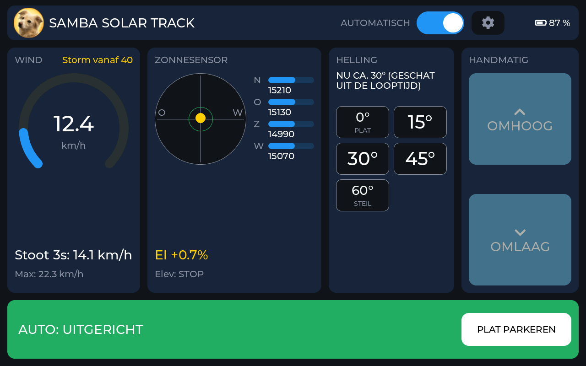
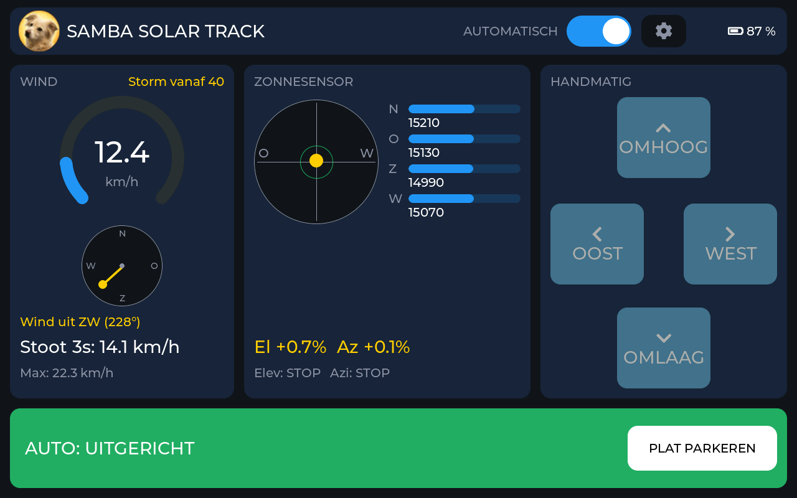
Ook de overige schermen (Instellen, WAARDEN, Netwerk, Tijd, Op afstand, Design, Geluid, Scherm, Firmware, Inmeten) gebruiken het hele display: ze zijn opgezet voor 1280 × 800 beeldpunten, met grote letters (bijvoorbeeld Afb. 24). Het grote dashboard is op 20.10.2026 op het testboard gezet, het apparaat is daarna via het netwerk bereikbaar. Hoe het er daar uitziet, of de vingers de knoppen raken en of het vloeiend loopt, is nog niet bevestigd; de vergrote overige schermen zijn alleen op de computer gebouwd. De afbeeldingen hier zijn door het hulpmiddel voor de screenshots gegenereerd uit de echte code van de interface.
Taal van de weergave (in voorbereiding, op de computer gegenereerd, niet getest op het apparaat)
Het display is er in zeven talen: Engels, Duits, Frans, Spaans, Nederlands, Portugees en Pools. Af fabriek is het Engels. Bij de allereerste start verschijnt daarom eerst de taalkeuze (Afb. 13h), nog vóór het instellen. De knoppen dragen de naam van de taal in de taal zelf, bijvoorbeeld NEDERLANDS of FRANÇAIS, zodat je je taal ook vindt als je de op dat moment gekozen taal niet begrijpt.
- Taal kiezenTik op je taal. Verwacht: De knop wordt blauw met een vinkje, en alle teksten wisselen meteen naar die taal.
- VerderBij de eerste start tik je op de groene knop VERDER (in het Engels: NEXT). Verwacht: Het instellen verschijnt in de gekozen taal. De keuze blijft opgeslagen, ook na een herstart.
- Later wijzigenOpen Instellen (tandwiel in het dashboard) en tik rechtsboven op de knop met de naam van de taal, bijvoorbeeld NEDERLANDS .... Verwacht: De taalkeuze verschijnt; na de keuze leidt TERUG weer naar Instellen. De besturing loopt daarbij zonder onderbreking door, ook de stormbeveiliging.
De vertalingen zijn op 28.10.2026 machinaal door Claude gemaakt; geen moedertaalspreker heeft ze gecontroleerd (aanname). Heeft een apparaat al een oudere firmware en is het ingesteld, dan blijft het na de update Duits. De meldingen in het protocol (log) blijven altijd Duits. De webinterface toont dezelfde taal als het apparaat; daar kun je die ook kiezen onder INSTELLEN (Afb. 23c). Deze handleiding is eveneens in alle zeven talen beschikbaar, als pagina en als PDF; de taal wissel je bovenaan in de inhoudsopgave. Leidend is de Duitse versie; ook de overige versies van de handleiding zijn machinaal vertaald en niet door moedertaalsprekers gecontroleerd (aanname).
Geluiden uit de luidspreker (in voorbereiding, op het testboard gehoord)
Het 10,1-inch-board heeft een ingebouwde luidspreker. De begonnen firmware gebruikt hem voor geluiden. Op het testboard zijn de geluiden op 20.10.2026 te horen (firmware 0.4.6); volumestanden en alarmtonen zijn nog niet afzonderlijk gecontroleerd. Wat hier staat, beschrijft wat de firmware daarvoor bevat.
| Geluid | Wanneer | Hoe vaak |
|---|---|---|
| Bevestiging: een korte, heldere piep | bij elke tik op een knop of schakelaar op het display | één keer per tik; kan uitgeschakeld worden |
| Storing van een I/O-bouwsteen: drie korte, hoge tonen | de bouwsteen van de schakeluitgangen op de print antwoordt niet | meteen, daarna elke 20 seconden |
| Storm: drie keer hoog-laag | de stormbeveiliging heeft de module plat gelegd | meteen, daarna elke minuut |
| Aandrijvingsfout: twee lange tonen | een aandrijving heeft zijn eindstand niet op tijd bereikt | meteen, daarna elke 30 seconden |
| Windmeter uitgevallen: hoog, dan laag | de windmeter antwoordt niet meer, er is geen stormbeveiliging | meteen, daarna elke 2 minuten |
De alarmtonen klinken zolang de toestand bestaat. Bestaan er meerdere tegelijk, dan hoor je alleen de belangrijkste (in de volgorde van de tabel). Een alarmtoon gaat altijd vóór de piep van de bevestiging. Zolang het instellen niet voltooid is, zijn er geen alarmtonen.
Instellen: In Instellen leidt de knop GELUID … naar een eigen scherm. Daar schakel je de bevestigingstonen in of uit en stel je het volume met de knoppen − en + in tien standen in. Verwacht: Na elke wijziging van het volume klinkt een korte testtoon in de nieuwe stand; de instelling geldt meteen en blijft na het uitschakelen behouden. Af fabriek staan de bevestigingstonen aan en staat het volume op stand 7.
Zodat een storm of een fout niet onopgemerkt blijft, klinken alarmtonen minstens op stand 7, ook als je het volume lager zet. Harder dan stand 10 gaat niet: deze grens is vast ingebouwd, zodat voeding en zekering van de print ook bij volle alarmtoon en ladende accu niet overbelast worden. Of de standen op het echte apparaat goed hoorbaar zijn en hoeveel stroom de luidspreker werkelijk nodig heeft, wordt gemeten zodra het board er is; de grens is tot dan een aanname.
Rusttoestand en bewegingsmelder (in voorbereiding, niet getest op het apparaat)
Het 10,1-inch-board heeft een ingebouwde camera. De begonnen firmware gebruikt hem als bewegingsmelder: staat er een tijdje niemand voor het display, dan toont het een schermbeveiliger of schakelt het de verlichting uit. Komt er iemand bij het display, dan wordt het vanzelf weer helder. Dat is tot nu toe alleen op de computer gebouwd en getest; of de camera op het apparaat betrouwbaar beweging herkent, is nog niet gecontroleerd.
De firmware analyseert de camerabeelden alleen in het werkgeheugen om beweging te herkennen. Ze slaat geen beeld op, toont er geen en stuurt er geen via het netwerk, ook niet naar de webinterface. Van elk beeld blijft alleen de gemiddelde helderheid van kleine vlakken over.
Wat er gebeurt:
- Na de ingestelde wachttijd zonder aanraking en zonder beweging voor het display verschijnt de schermbeveiliger (Afb. 13e): een donker vlak met het logo, de tijd, de toestand uit de statusbalk in diens kleur en de wind. De tekst verplaatst zich elke 20 seconden naar een andere plek, het licht is gedimd. Of het display gaat helemaal uit, als je dat zo instelt.
- Wekken: beweging voor het display of een aanraking. De aanraking die het display wekt, activeert niets: je kunt dus op een willekeurige plek tikken zonder per ongeluk een knop in te drukken. Pas als je je vinger hebt losgelaten, werkt de volgende aanraking.
- Bij gevaar blijft het display aan: Bij storm, uitval van de windmeter, aandrijvingsfout en storing van een I/O-bouwsteen wordt het display helder en blijft het dat zolang de toestand bestaat.
- De besturing werkt in de rusttoestand gewoon door, ook de stormbeveiliging.
- In het donker (ruimte zonder licht) herkent de camera geen beweging; dan wekt alleen een aanraking. Wordt het plotseling licht, bijvoorbeeld omdat iemand het licht aandoet of direct voor de camera gaat staan, dan wordt het display ook wakker. Wie helemaal stilstaat, wordt na enkele seconden niet meer als beweging herkend.
Instellen:
- Scherm openenOpen Instellen (tandwiel in het dashboard) en tik op SCHERM … (Afb. 13d). Verwacht: Het scherm SCHERM verschijnt.
- Soort kiezenTik op ALTIJD AAN, SCHERMBEVEILIGER of DISPLAY UIT. Verwacht: De gekozen knop is blauw met een gele rand. Bij ALTIJD AAN hebben wachttijd en bewegingsmelder geen betekenis en zijn ze vergrendeld.
- Wachttijd instellenMet − en + kies je 1, 2, 3, 5, 10, 15, 20, 30, 45 of 60 minuten. Verwacht: Het getal in het midden verandert.
- BewegingsmelderMet de schakelaar zet je de bewegingsmelder aan of uit. Staat hij uit, dan wekt alleen een aanraking. Verwacht: Ernaast staat „BEWEGINGSMELDER AAN” of „UIT”, daaronder „Camera gereed.” Staat daar in oranje „Camera niet beschikbaar”, dan heeft de firmware de camera niet gevonden; dan wekt alleen een aanraking.
- Bewegingsmelder controlerenDaaronder toont een regel doorlopend wat de camera ziet: beelden per seconde, helderheid (0 tot 255) en hoeveel vlakken er op dat moment bewegen, bijvoorbeeld „5 beelden/s, helderheid 92, beweging 412 (vanaf 96)”. Zwaai op ongeveer een meter afstand voor het display. Verwacht: Het getal achter „beweging” stijgt boven 96, en de regel wordt geel; dan zou deze beweging het display wekken. Staat er „te donker”, dan is de ruimte te donker voor de camera; staat er „Camera rust”, dan is ALTIJD AAN gekozen of staat de bewegingsmelder uit. Schrijf de waarden op voor het geval het wekken niet lukt: ze helpen bij het instellen.
- Accu ingebouwdMet de schakelaar ACCU INGEBOUWD toon of verberg je het laadniveau van de accu rechtsboven in het dashboard (hoofdstuk 7). Verwacht: Ernaast staat „ACCU INGEBOUWD” of „GEEN ACCU”; in het dashboard verschijnt of verdwijnt de weergave, en tandwiel en AUTOMATISCH schuiven overeenkomstig op.
- TerugTik op TERUG. Verwacht: Instellen verschijnt weer. Alles geldt meteen en blijft na het uitschakelen behouden; een herstart is niet nodig.
Af fabriek staat de rusttoestand op schermbeveiliger na 5 minuten met ingeschakelde bewegingsmelder (voorstel, nog niet definitief). Op afstand (webinterface, ioBroker) kan dit niet ingesteld worden.
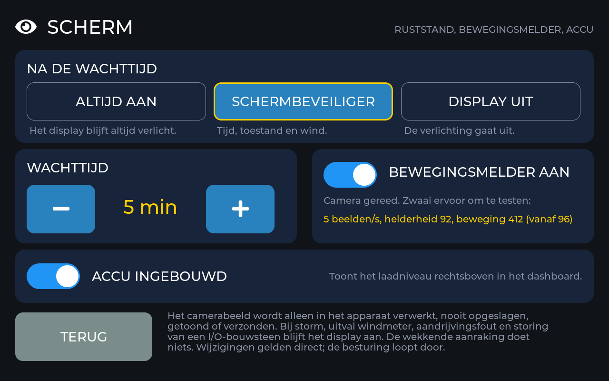
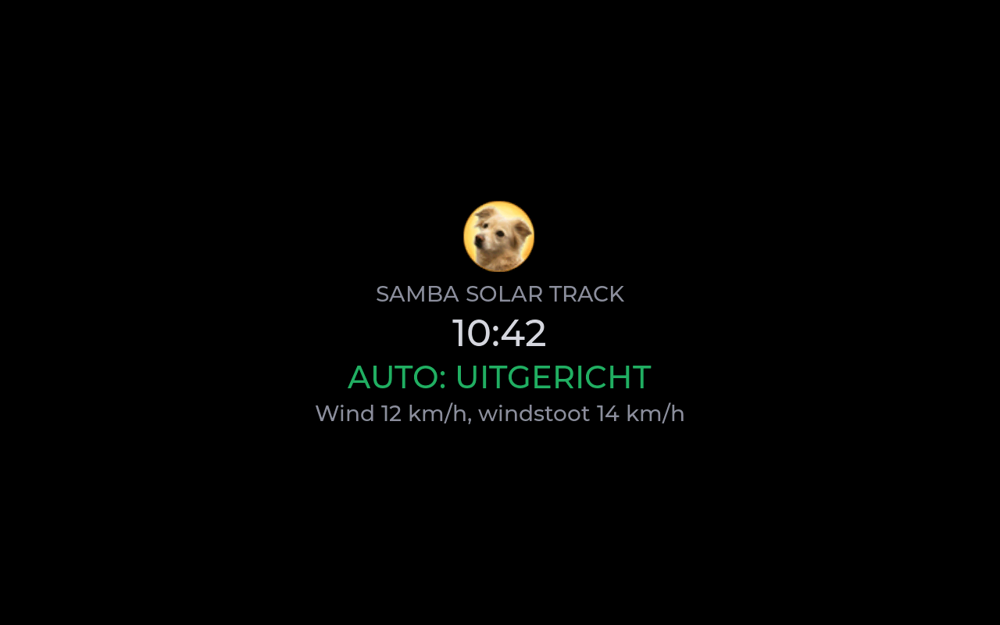
Op het testboard (21.10.2026) verschijnt de schermbeveiliger, en een aanraking wekt het display; beweging wekt het nog niet. Bovendien herstartte het apparaat bij het flashen van een nieuwe firmware via het netwerk meteen; de volgende firmware stopt daarom de camera voordat ze schrijft. Flash deze firmware één keer via USB (De firmware voor het eerst flashen), daarna gaat het weer via het netwerk. De volgende firmware bepaalt bovendien zelf in welk deel van de beeldgegevens de helderheid staat, en toont de meetwaarden van de camera op het scherm SCHERM (stap „Bewegingsmelder controleren”). Verder is nog open of de camera gevonden wordt, hoe betrouwbaar ze beweging herkent (afstand, licht, vals alarm bijvoorbeeld door flikkerend licht of dieren), of het display rustig blijft terwijl de camera loopt en of de gedimde helderheid van de schermbeveiliger past. De drempels van de herkenning zijn geschat (aanname) en worden na de test aangepast.
Nieuwe firmware van internet (in voorbereiding, niet getest op het apparaat)
De firmware voor het 10,1-inch-board kan zelf kijken of er een nieuwere firmware is, en die op jouw verzoek van internet installeren. Ook dat is tot nu toe alleen op de computer gebouwd en getest. Wat hier staat, beschrijft wat de firmware daarvoor bevat.
Om een nieuwe firmware te accepteren, moet die met de sleutel van het project ondertekend zijn (handtekening). De huidige sleutel is sinds firmware 0.4.7 ingevoerd. Oudere firmware (tot 0.4.6) kent alleen een eerdere sleutel die niet meer gebruikt wordt: een apparaat met deze firmware vindt via internet nooit een nieuwe versie. Zet 0.4.7 dan één keer via de webinterface (INSTELLEN, firmware-update) of zoals hierboven via de USB-kabel op het apparaat; daarna gaat het via internet verder. Of controle en installatie op het apparaat zo verlopen als hier beschreven, wordt met de versies 0.4.7 en 0.4.8 pas uitgeprobeerd. Meldt de controle een fout (bijvoorbeeld „geen verbinding met de releasebron”), dan blijft de knop INSTALLEREN vergrendeld.
Wat het apparaat zelf doet: Is de wifi verbonden, dan kijkt het één keer per dag (de eerste controle 2 tot 20 minuten na het verbinden). Het laadt daarvoor een klein bestand, het manifest, via een versleutelde verbinding (HTTPS) van de releasebron van het project onder https://firmware.samba-solar.de/. Het installeert nooit vanzelf. Is er een nieuwere versie, dan staat in de kopregel bovenaan klein in geel NIEUWE FIRMWARE en daaronder het nummer. Een geluid is er niet bij.
Bekijken en installeren:
- Scherm openenTandwiel rechtsboven, dan in Instellen de knop FIRMWARE …. De knop is er pas als Instellen één keer opgeslagen is. Verwacht: Het scherm FIRMWARE toont de draaiende versie met bouwdatum, wanneer er voor het laatst gekeken is, en het resultaat.
- Nu controleren (optioneel)Knop NU CONTROLEREN. Dat gaat hoogstens één keer per minuut en alleen met verbonden wifi. Verwacht: Na enkele seconden staat er „ACTUEEL”, „NIEUWE FIRMWARE BESCHIKBAAR” met nummer, datum en korte tekst, of „CONTROLE MISLUKT” met de reden.
- InstallerenKnop INSTALLEREN (alleen bij „NIEUWE FIRMWARE BESCHIKBAAR”) en de vraag met INSTALLEREN bevestigen. Verwacht: „WORDT GELADEN …” met een balk. De besturing regelt daarbij gewoon door, ook de stormbeveiliging. Met ANNULEREN kan het laden beëindigd worden; dan verandert er niets.
- Vlakke standNa het laden controleert het apparaat het bestand. Daarna gaat de elevatie naar de vlakke stand, net als bij parkeren. Verwacht: Op het scherm FIRMWARE staat „GAAT VOOR HET SCHRIJVEN NAAR VLAKKE STAND”, de statusbalk toont het parkeren en de module gaat plat liggen.
- Schrijven en herstartPas als de elevatie vlak staat, schakelt het apparaat alle uitgangen uit en schrijft het de nieuwe firmware. Verwacht: Boven het scherm staat „FIRMWARE-UPDATE – Gecontroleerde firmware wordt geschreven”; daarna herstart de besturing. De instellingen blijven behouden.
- Na de herstartNiets doen en het apparaat minstens twee minuten laten draaien. Verwacht: De nieuwe versie staat op het scherm FIRMWARE, en de module blijft voorlopig vlak liggen. Na twee minuten bevestigt de nieuwe firmware zichzelf, zodra display en print werken en – alleen als de wifi ingeschakeld is – het apparaat sinds de herstart minstens één keer met de wifi verbonden is geweest (de zelftest). Daarna heft ze het parkeren op en gaat naar de vorige stand: de automaat volgt weer, of een gekozen hoek wordt weer opgezocht.
Voor elke update, via internet of via de webinterface, gaat de elevatie naar de vlakke stand. Zo ligt de module vlak als er bij de update iets misgaat. Wordt de vlakke stand niet bereikt, dan schrijft het apparaat niets en blijft de huidige firmware werken; de reden staat op het scherm FIRMWARE en in de webinterface. Dat gebeurt bij handbediening (schakel eerst AUTOMATISCH in), bij een storing, als er een storm begint, als iemand het parkeren opheft, of als de beweging langer duurt dan de maximale looptijd plus ongeveer een halve minuut. Was er vooraf geen parkeerverzoek, dan geldt daarna weer de vorige stand. Keert het apparaat na een mislukte zelftest terug naar de vorige firmware, dan gaat ook die terug naar de vorige stand (aanname: nog niet op het apparaat uitgeprobeerd). Zet of hef je het parkeren zelf eerder op, dan geldt jouw keuze.
Het schrijven duurt naar schatting ongeveer een minuut (aanname, nog niet gemeten). In die tijd staan alle aandrijvingen stil, en wordt de module bij storm niet plat gelegd. Daarom begint de installatie niet zolang de stormbeveiliging actief is of een aandrijving loopt. Komt er tijdens het laden of tussen laden en schrijven een storm, dan breekt het apparaat af en verwerpt het het geladen bestand, ook als de storm snel weer voorbij is; je moet de installatie daarna opnieuw bevestigen. Installeer het best bij rustig weer.
Blijft de nieuwe firmware hangen of herstart ze in de eerste twee minuten, dan start het apparaat vanzelf weer de vorige firmware. Hetzelfde gebeurt als ze de zelftest niet op tijd doorstaat (bijvoorbeeld omdat het display of de print niet antwoordt of omdat ze nooit verbinding maakt met de wifi): dan schakelt ze eerst alle uitgangen uit en start ze de vorige firmware. De termijn bedraagt 12 minuten na de herstart; is de wifi ingeschakeld, dan 30 minuten, zodat een kort uitgevallen router niet meteen tot een terugval leidt. Is de wifi uitgeschakeld, dan speelt die voor de zelftest geen rol. Beide termijnen zijn voorstelwaarden, nog niet op het apparaat beproefd. Zolang de nieuwe firmware op de zelftest wacht, staat bovenaan tussen productnaam en AUTOMATISCH een oranje balk over alle schermen: de tijd tot de controle, daarna „NIET DOORSTAAN”, de stand van de voorwaarden (UITG. en WIFI: OK, GEEN of UIT) en de tijd tot de terugval. Zonder de print RearCircuitBoard_10 staat daar „ZONDER PRINT: SIMULATIE AANZETTEN” (Afb. 13c). Waarop de zelftest mislukt, staat bovendien in de log. Het display meldt na een terugval „UPDATE TERUGGEDRAAID”; tik op OK.
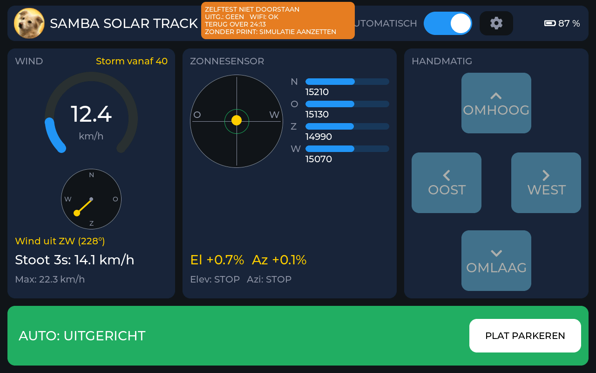
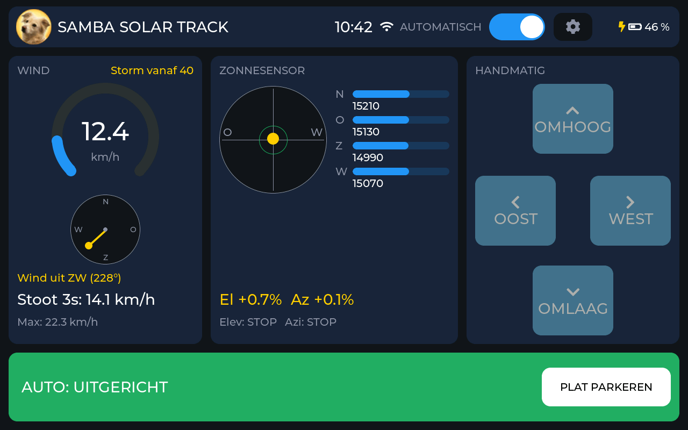
Dezelfde versie wordt daarna niet meer in de kopregel aangeboden, maar kan op het scherm FIRMWARE toch nog een keer geïnstalleerd worden. Dat geldt op het 10,1-inch-board ook voor een update via de webinterface.
Op afstand: In de webinterface staat onder INSTELLEN het blok „Firmware van internet” met dezelfde gegevens en de knoppen NU CONTROLEREN en INSTALLEREN. Bedienen mag alleen een aangemeld apparaat (token), en de schakelaar „Afstandsbediening geblokkeerd” op het display blokkeert beide. De dagelijkse controle loopt ook bij geblokkeerde afstandsbediening door.
Bij het kijken stuurt het apparaat alleen een eenvoudige aanvraag met zijn firmwareversie; geen kenmerk, geen wachtwoord, geen token. De pagina van het project ziet daarbij, zoals elke internetpagina, het openbare IP-adres van je internetaansluiting. Een schakelaar die het kijken uitschakelt, is er niet; zonder wifi vindt het niet plaats.
Helling op bevel: een vaste hoek aansturen (in voorbereiding, niet getest op het apparaat)
In plaats van de zon te volgen, kan de elevatie op jouw bevel een vaste hoek aansturen, bijvoorbeeld een vlakke in de zomer of een steile in de winter. Daarna pauzeert de automatische modus tot je het verzoek weer opheft. Dat is er alleen in de 10-inch-versie en alleen in de bedrijfsmodus ALLEEN VERTICAAL. Bij twee assen (verticaal + horizontaal) zijn de kaart HELLING, voorkeurshoeken, looptijden en onderstel verborgen. Ook deze functie is tot nu toe alleen op de computer gebouwd en getest; de afbeeldingen zijn door het hulpmiddel voor de screenshots gegenereerd uit de echte code van de interface.
Af fabriek is er geen sensor voor de helling. De firmware berekent de helling uit de tijd waarin ze de aandrijving werkelijk ingeschakeld heeft, en uit de ingemeten looptijden. Daarom staat er op het display altijd „CA. 30°” of „ONBEKEND”, nooit een exact getal. Hoe nauwkeurig dat is, staat verderop; alle gegevens daarover zijn aannames tot er op het rack gemeten is. Nauwkeuriger gaat het met de Hall-aftakking: dan telt de firmware de impulsen van de aandrijving en toont ze de helling zonder „CA.”.
Welke hoeken er zijn: altijd 0° (plat), 30° en 60° (steil), plus maximaal twee voorkeurshoeken die je onder WAARDEN instelt (hele graden van 1 tot 59, niet 30, niet twee keer dezelfde; 0 betekent uit). De knoppen staan altijd op hoek gesorteerd. Zolang de looptijd niet ingemeten is, gaan alleen 0° en 60°; de andere hoeken zijn grijs.
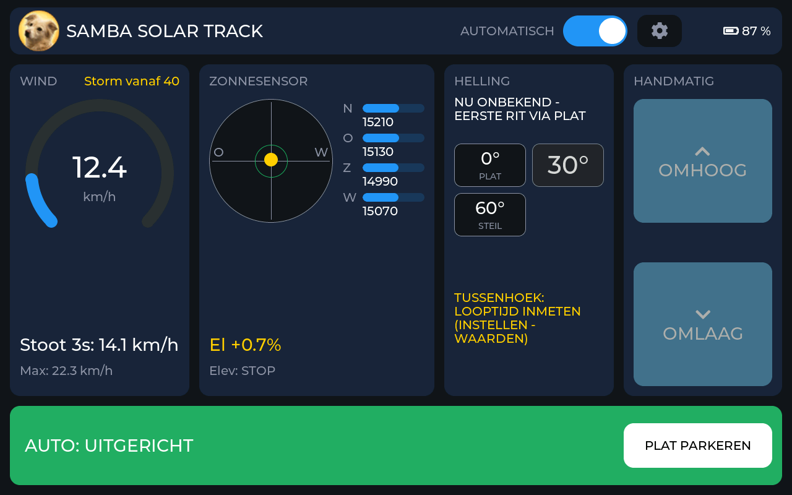
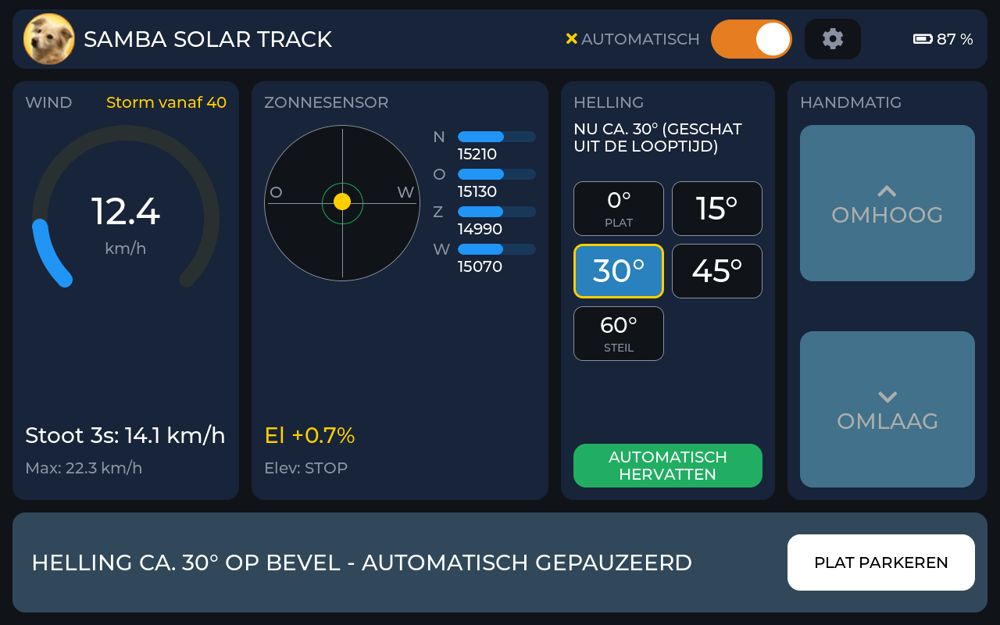
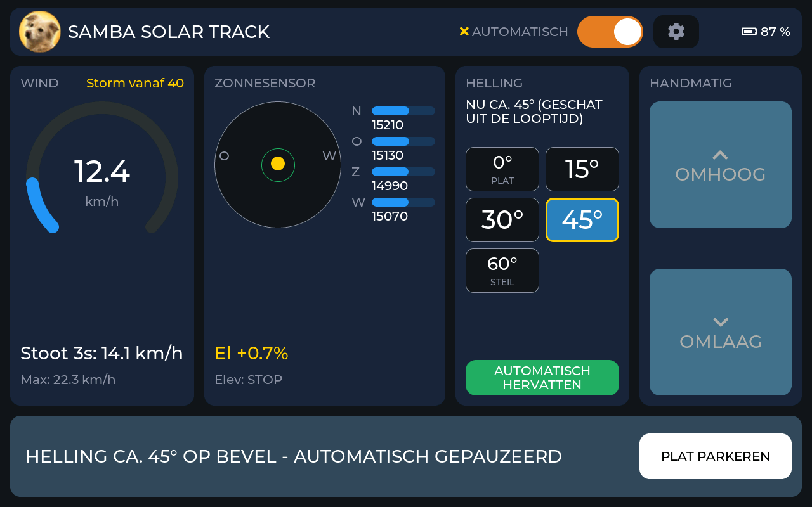
| Weergave in de kaart HELLING | Betekenis |
|---|---|
| NU ONBEKEND - EERSTE RIT VIA PLAT | De stand is sinds het inschakelen niet bekend, of de schatting is te onzeker (meer dan 6°). |
| NU CA. 31° (GESCHAT UIT DE LOOPTIJD) | Geschatte helling. |
| Hoekknop blauw met gele rand | Deze helling op bevel geldt, ook tijdens storm, parkeren of handmatig bedrijf. Daaronder staat de knop AUTOMATISCH HERVATTEN. |
| Schakelaar AUTOMATISCH oranje, ervoor een geel kruis | De automatische modus is ingeschakeld, maar pauzeert omdat er een helling op bevel geldt. Met AUTOMATISCH HERVATTEN wordt de schakelaar weer blauw, en verdwijnt het kruis. |
| NIET BESCHIKBAAR | Zonder voltooid instellen is er geen helling op bevel; de knoppen zijn vergrendeld. |
Een hoek aansturen:
- Stand aflezenKijk in de kaart HELLING in het dashboard (Afb. 14 of 15). Verwacht: Bovenaan staat „NU CA. 31° (GESCHAT UIT DE LOOPTIJD)” of „NU ONBEKEND - EERSTE RIT VIA PLAT”.
- Hoek kiezenTik in de kaart op de gewenste hoek. Verwacht: De knop wordt blauw met gele rand, daaronder verschijnt AUTOMATISCH HERVATTEN, de schakelaar AUTOMATISCH bovenaan wordt oranje met een geel kruis ervoor, en de statusbalk toont het verloop (volgende stap).
- ToekijkenIs de stand onbekend of te onzeker, dan loopt de elevatie eerst plat tot de eindstand, de referentierit. Zonder eindschakelaar duurt die de volle maximale looptijd (bij het Samba-Solar-Rack 2.0-E Plus 90 seconden), ook als het frame allang stilstaat. Daarna volgt de rit naar de hoek. Verwacht: na elkaar „HELLING 45°: REFERENTIERIT NAAR VLAKKE STAND”, „HELLING 45°: LOOP STEILER, CA. 12°” en tot slot „HELLING CA. 45° OP BEVEL - AUTOMATISCH GEPAUZEERD” (Afb. 17). Daarna wordt niet bijgeregeld.
- Terug naar de automatische modusTik in de kaart op AUTOMATISCH HERVATTEN. Verwacht: De statusbalk toont weer AUTO, de schakelaar AUTOMATISCH is weer blauw zonder kruis, het volgen begint opnieuw.
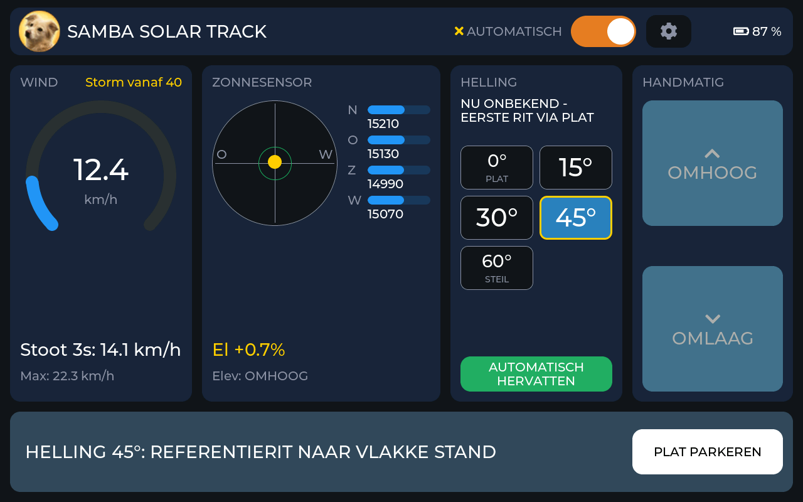
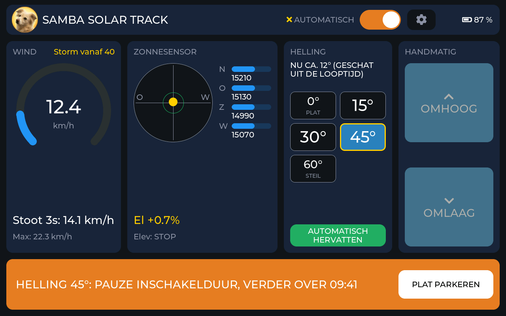
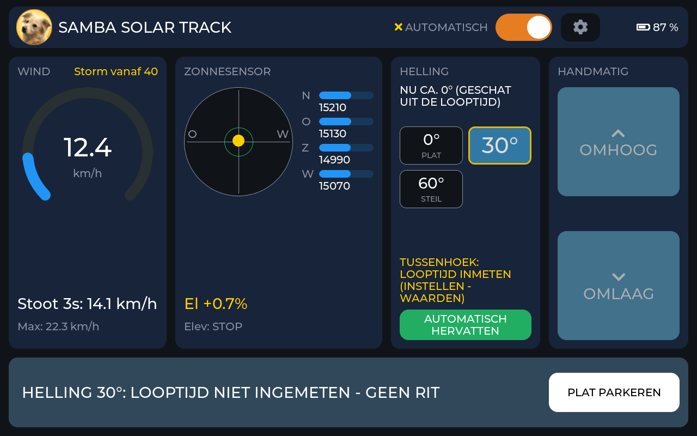
Wat voorrang heeft (de rangorde van de besturing): instellen ontbreekt, storing van een I/O-bouwsteen, storm, aandrijvingsfout, handmatig bedrijf, parkeren op bevel en uitval van de windmeter gaan voor. Pas daarna komt de helling op bevel, en die gaat op haar beurt voor sensorfouten, nacht en automatische modus. De helling op bevel geldt dus ook 's nachts en bij een gestoorde zonnesensor.
| Situatie | Wat er gebeurt |
|---|---|
| Storm, windmeter valt uit | Gaan voor: de elevatie loopt plat. Daarna loopt ze vanzelf weer naar de bevolen hoek. De kaart zegt „STORMBEVEILIGING HEEFT VOORRANG - DAARNA WORDT DE HOEK AANGESTUURD” (Afb. 22). |
| PLAT PARKEREN | Blijft een eigen knop en gaat voor („PARKEREN HEEFT VOORRANG …”). Na het opheffen van het parkeren loopt de installatie weer naar de hoek. |
| Handmatig bedrijf (automatisch uit) | De helling op bevel rust; ze werkt zodra de automatische modus weer aan is („WERKT ZODRA AUTOMATISCH AAN IS”). |
| Storing | Gaat voor („STORING HEEFT VOORRANG”), er beweegt niets. |
| Stroomuitval, herstart | De bevolen helling blijft opgeslagen, net als het parkeerverzoek. Na het inschakelen is de stand echter onbekend: de eerste rit naar een tussenhoek begint met een referentierit. |
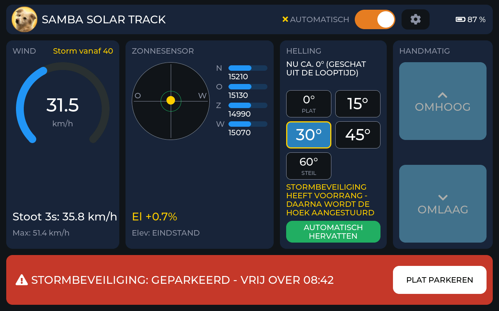
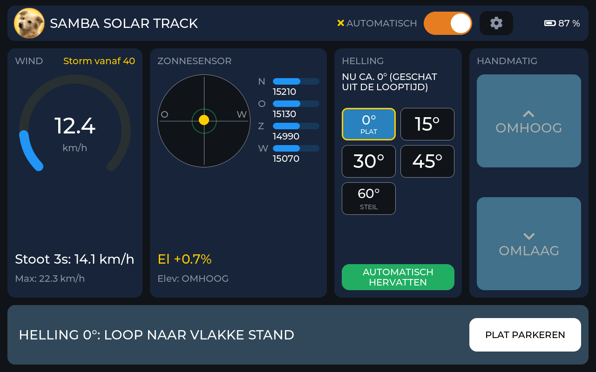
In de browser: De webinterface toont bij de 10-inch-versie dezelfde indeling als het display (Afb. 23a en 23b): op een breed scherm (pc, tablet, telefoon liggend) de kopregel, de kaarten WIND (met kompasroos als een windmeter met richting is ingesteld), ZONNESENSOR, HELLING en HANDMATIG in dezelfde breedtes en daaronder de statusbalk; op de telefoon onder elkaar. In de kaart HELLING staan dezelfde knoppen en de tekst „Nu ca. 31° (geschat uit de looptijd)”. Net als op het display is de schakelaar AUTOMATISCH oranje met een geel kruis ervoor zolang een helling op bevel de automaat pauzeert, en rechtsboven staat de accu met zijn laadniveau en, tijdens het laden, de gele bliksemschicht; op een telefoon staat de accu klein onder de naam (Afb. 23c). Onder INSTELLEN kies je ook de taal: aantikken wisselt die op het display en in de browser tegelijk. Bedienen mag alleen een aangemeld apparaat, en alleen als de afstandsbediening niet geblokkeerd is. Het inmeten is er alleen op het display. De afbeeldingen komen van het voorbeeldhulpmiddel van de webinterface (python3 tools/web_vorschau.py) met een nagebootst apparaat, niet van de echte tracker.
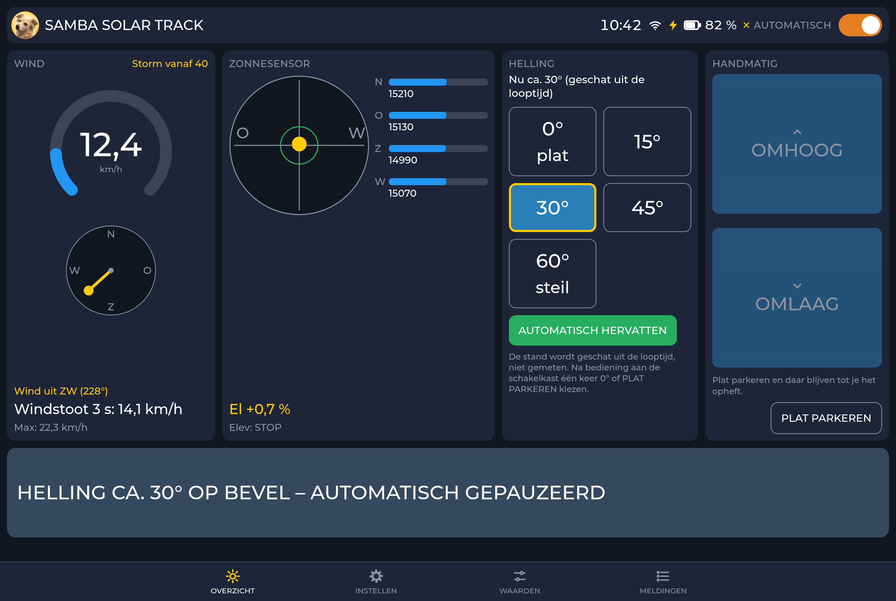
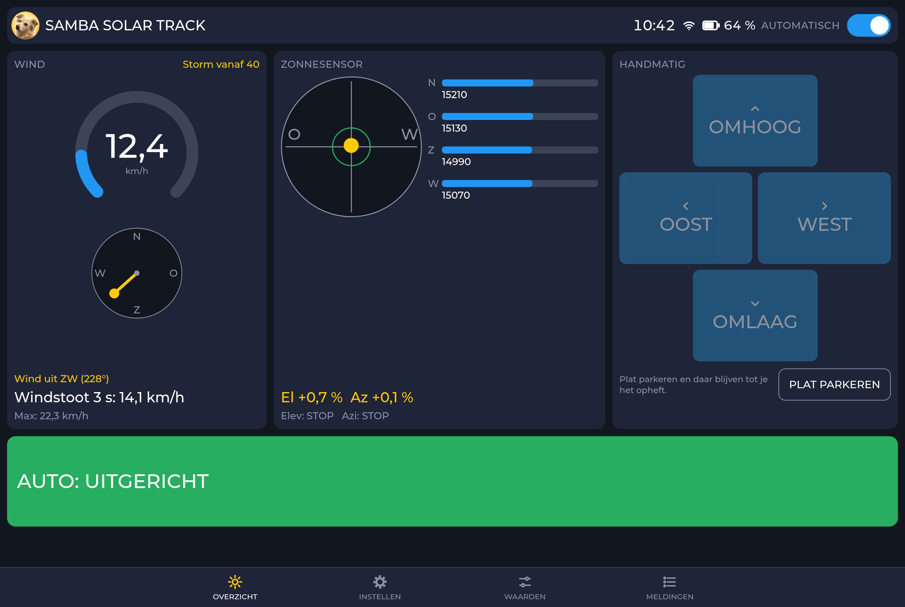
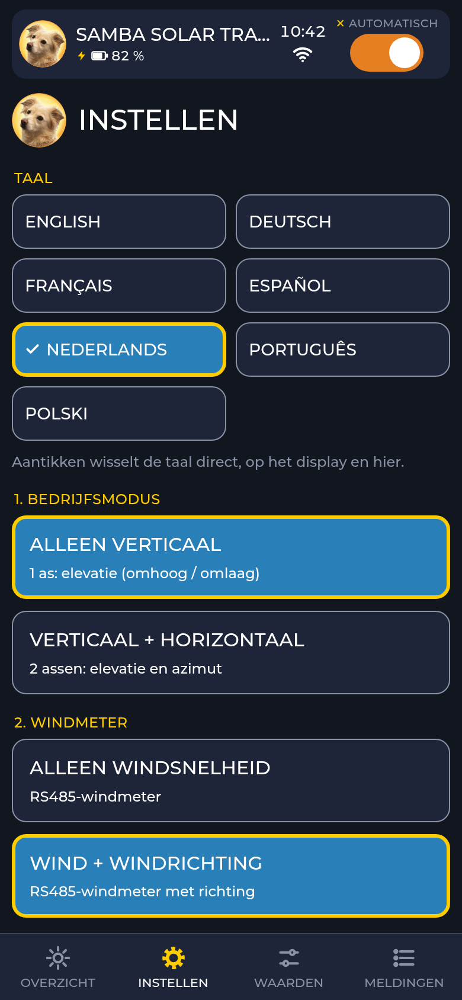
Voorkeurshoeken, looptijden en onderstel instellen
De waarden staan in Instellen onder WAARDEN: de twee voorkeurshoeken in de groep REGELING, de looptijden, het onderstel, het aanloopverlies en de drie waarden van de Hall-aftakking in de groep INGEBRUIKNAME. De waarden van de groep INGEBRUIKNAME kunnen alleen gewijzigd worden zolang er geen aandrijving loopt.
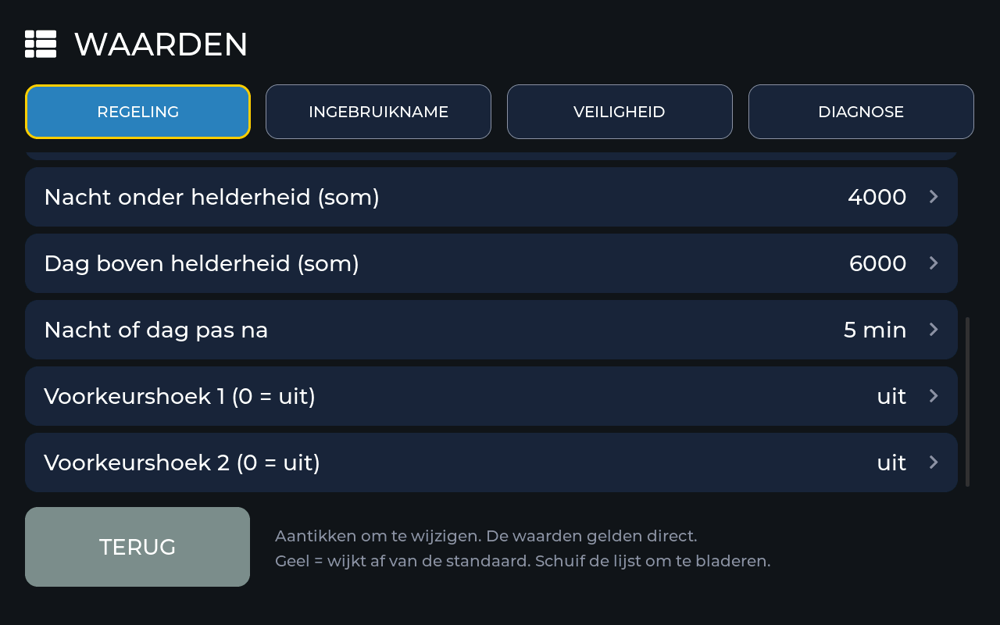
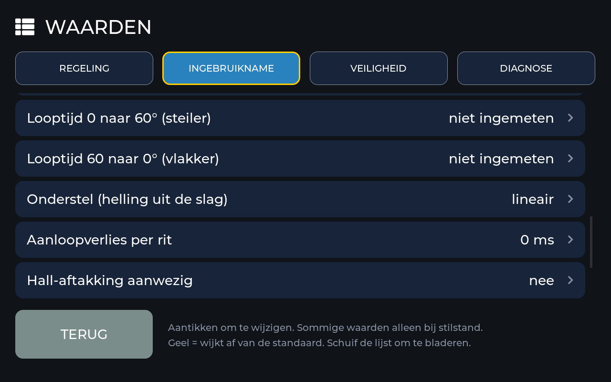
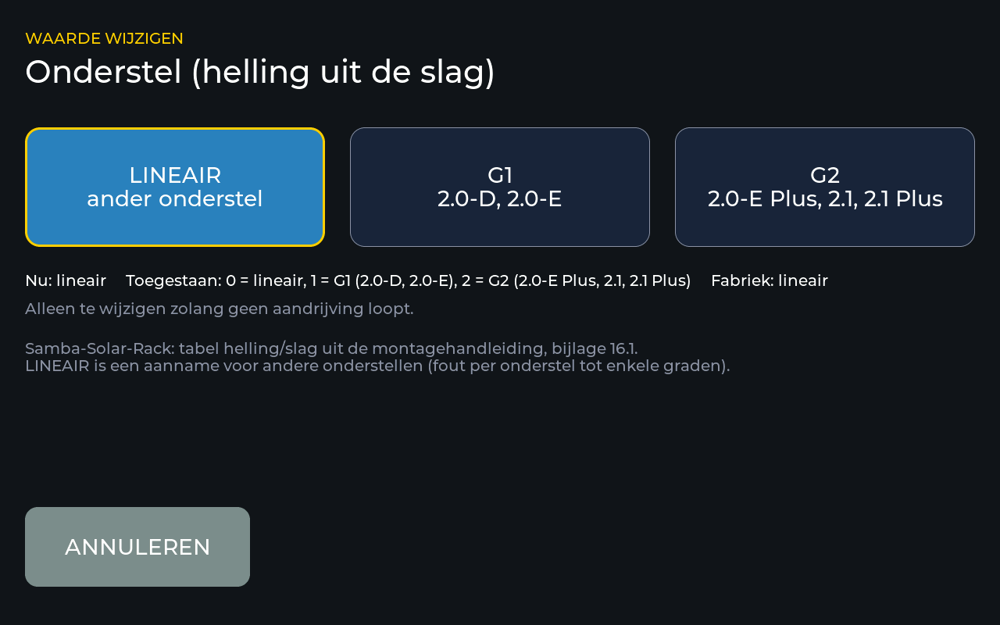
| Waarde | Af fabriek | Toegestaan | Waarvoor |
|---|---|---|---|
| Looptijd 0 naar 60° (steiler) | niet ingemeten | 10 tot 300 s | Tijd voor de hele weg van plat naar steil. Het best inmeten. |
| Looptijd 60 naar 0° (vlakker) | niet ingemeten | 10 tot 300 s | Tijd voor de weg terug. Het best inmeten. |
| Onderstel (helling uit de slag) | lineair | lineair, G1 (2.0-D, 2.0-E), G2 (2.0-E Plus, 2.1, 2.1 Plus) | Rekent de weg van de aandrijving om naar graden (tabel uit de montagehandleiding, bijlage 16.1). |
| Aanloopverlies per rit | 0 ms | 0 tot 3000 ms | Deel van elke rit waarin het frame nog niet beweegt. |
| Voorkeurshoek 1 en 2 | uit | 1 tot 59°, niet 30, niet dubbel; 0 = uit | Extra knoppen in de kaart HELLING. Geldt meteen. |
De looptijden gelden alleen als ze korter zijn dan 0,9 × de maximale looptijd van de elevatie. Stel je de maximale looptijd korter in, dan gelden ze als niet ingemeten tot de waarden weer passen. „LINEAIR” is een aanname voor andere onderstellen; op een G2-onderstel zou die tot ongeveer 2,6° afwijken. Wijzig je een voorkeurshoek die op dat moment bevolen is, of schakel je hem uit, dan blijft de helling op bevel bestaan; AUTOMATISCH HERVATTEN heft die op. Voor het Samba-Solar-Rack 2.0-E Plus (synchrone besturing HAKIWO SCN4, geen eindschakelaars op de tracker) geldt bovendien: „Eindschakelaar elevatie ingebouwd” = nee, max. looptijd elevatie 90 s. Met de hand ingevuld zou het bij de 2.0-E Plus ongeveer 75 s zijn volgens de montagehandleiding; inmeten is nauwkeuriger.
De looptijd inmeten
Eén keer bij de ingebruikname en indien mogelijk in de herfst en in het voorjaar opnieuw: de temperatuur verandert de snelheid van de aandrijvingen (aanname, niet gemeten). Plaats: Instellen → WAARDEN → INGEBRUIKNAME → LOOPTIJD INMETEN (onderste regel, schuif de lijst daarvoor naar beneden, Afb. 34; met Hall-aftakking heet de knop INMETEN: LOOPTIJD EN HALL-STAPPEN). Besturing en stormbeveiliging lopen daarbij door.
- VoorbereidenMaak het zwenkbereik vrij: niemand staat bij het onderstel, niets ligt in de weg. Open het scherm LOOPTIJD INMETEN. Staat de automatische modus op AAN, tik dan op AUTOMATISCH UIT. Verwacht: „STAP 1 VAN 4: VOORBEREIDEN” (Afb. 27), daarna is START te kiezen.
- STARTTik op START. Verwacht: „LOOP PLAT, TOT DE EINDSTAND” (Afb. 28). Zonder eindschakelaar blijft het contact de volle maximale looptijd gesloten, ook als het frame allang stilstaat. Is de inschakelduur daarvoor net niet toereikend, dan staat er „WACHT OP DE INSCHAKELDUUR” met de resterende tijd.
- OMHOOG METENTik op OMHOOG METEN. De tijd loopt (Afb. 29). Tik op AANGEKOMEN zodra het frame stilstaat en het motorgeluid stopt (de aandrijving staat dan op haar eigen eindschakelaar). Verwacht: „OMHOOG gemeten” met de tijd tot op een tiende seconde. Met eindschakelaars op de tracker en met Hall-aftakking eindigt de meting vanzelf.
- PauzeAanbevolen is ongeveer 15 minuten pauze, zodat de aandrijvingen afkoelen (inschakelduur; Afb. 30). De pauze wordt niet afgedwongen. Verwacht: Het scherm toont het advies en de knop OMLAAG METEN.
- OMLAAG METENTik op OMLAAG METEN en weer op AANGEKOMEN zodra het frame plat staat. Verwacht: De tweede tijd verschijnt. Staat de aandrijving midden in de meting stil vanwege een pauze voor de inschakelduur, dan toont het scherm „PAUZE INSCHAKELDUUR … NIET aangekomen” (Afb. 31): tik dan niet, de meting loopt daarna vanzelf verder.
- OvernemenHet scherm toont beide tijden (Afb. 32). Tik op OVERNEMEN. Verwacht: Onder WAARDEN staan de tijden in plaats van „niet ingemeten”; in de kaart HELLING zijn alle hoeken te kiezen.
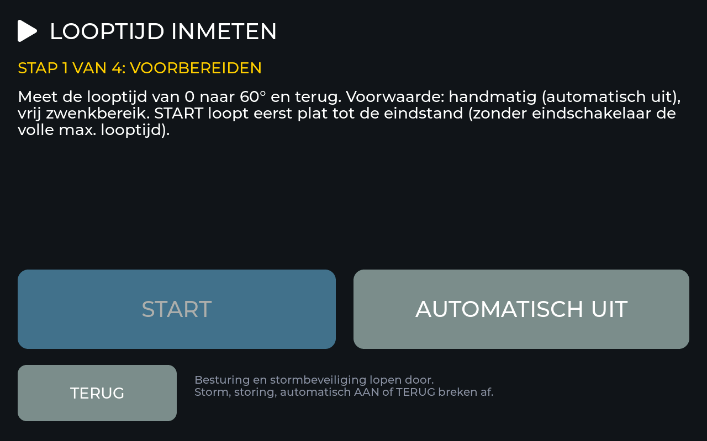
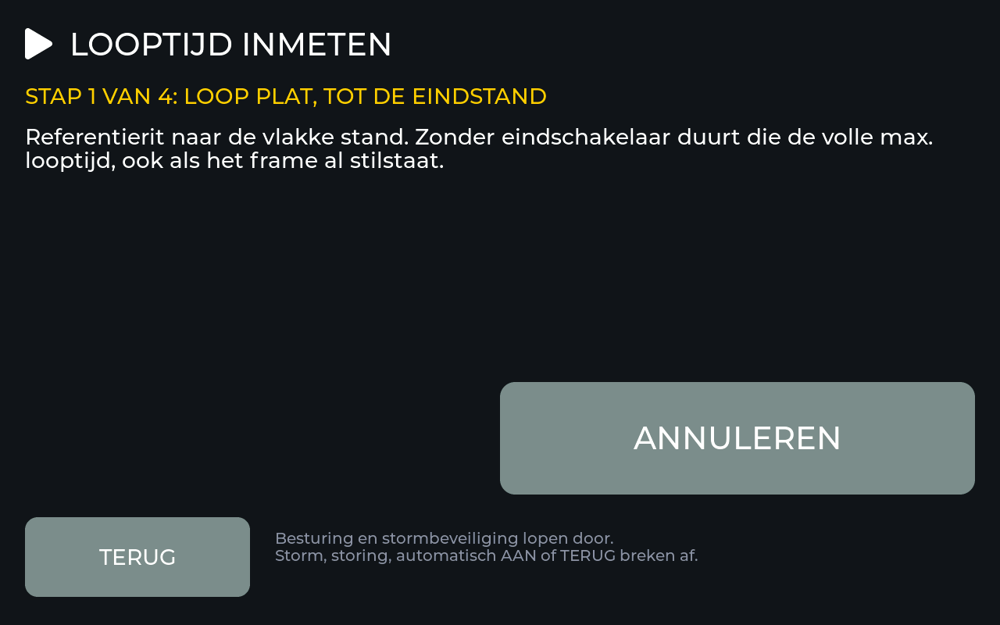
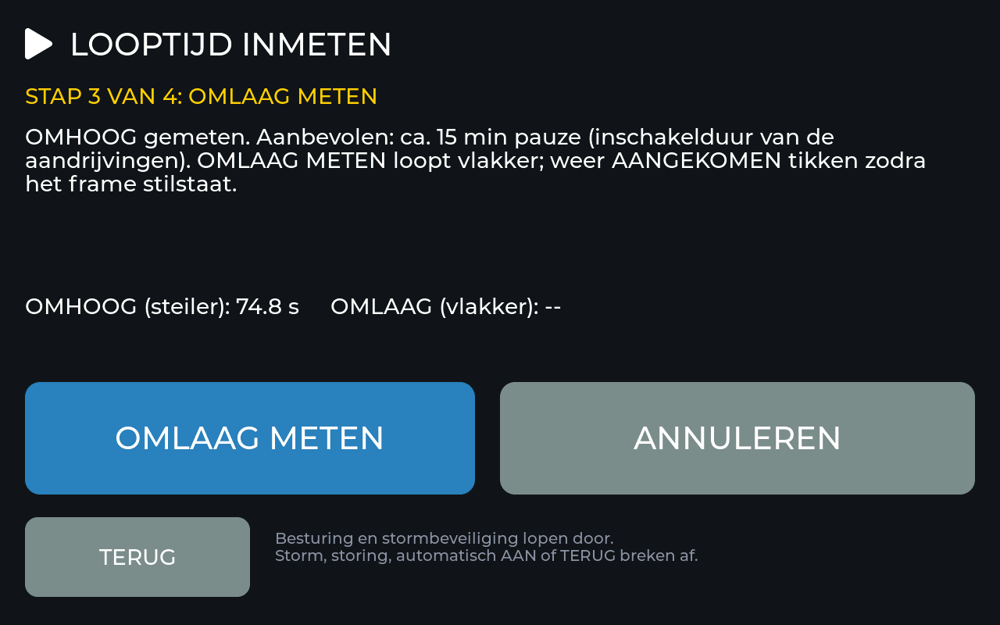
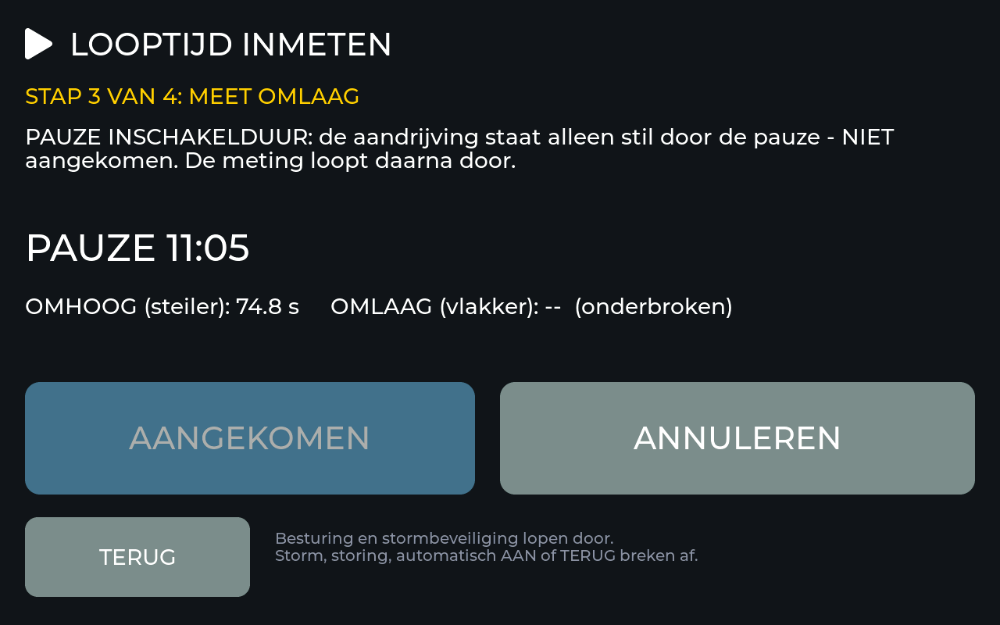
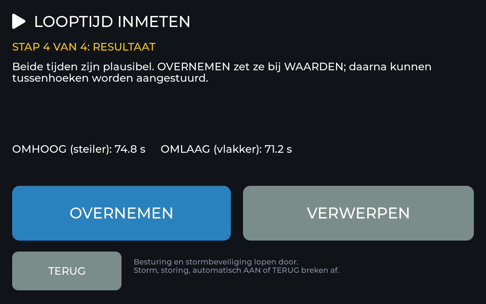
De firmware controleert de meting: elke tijd moet minstens 10 seconden duren en korter zijn dan 0,9 × de maximale looptijd, en OMHOOG en OMLAAG mogen hoogstens een factor 2 verschillen. Anders verschijnt de reden in gele letters, en wordt niets overgenomen (Afb. 33). Storm, een storing, automatisch AAN of TERUG breken het inmeten af. Zolang je inmeet, weigert het apparaat handmatige ritten op afstand.
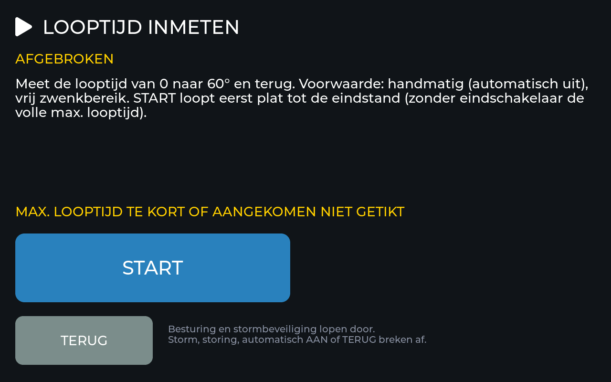
Hoe nauwkeurig is dat?
Alle getallen in deze tabel zijn aannames, niet gemeten. Ze worden op het rack gecontroleerd.
| Bron van de afwijking | Grootteorde |
|---|---|
| Eindstanden van de mechaniek | 0° ± 1°, 60° ± 1,5° (montagehandleiding) |
| Tabel van het onderstel G1/G2 | onder 0,1° |
| Snelheid na het inmeten (belasting, spanning) | ongeveer ± 3 tot 5 % van de afgelegde weg, ± 1 tot 1,5° bij 30° |
| Temperatuur (winter tegenover inmeting in de zomer) | tot ongeveer 3 tot 6° bij 30° |
| Aanloop en naloop per rit | tot bijna 1° per rit |
Verwachting: een rit vanaf een referentie ± 1 tot ± 3°, in de winter met een inmeting uit de zomer tot ongeveer ± 5°. Bij stilstand verandert de schatting niet. Na een dag automatisch bedrijf met veel korte volgritten is ze meestal „ONBEKEND”; de eerste rit naar een tussenhoek begint dan met een referentierit. Met elke rit groeit de onzekerheid; is die hoogstens 3°, dan loopt de elevatie direct, anders eerst plat. Vaste waarden daarvoor (per rit 0,3°, plus 8 % van de afgelegde graden, tolerantie 1°, kortste rit 0,5 s, 2° toeslag na een reset midden in een rit) staan vast in de firmware en zijn eveneens aannames.
Beweeg je de module bij de besturingskast (tuimelschakelaar, draadloze handzender, knop van de synchrone besturing) of met de handslinger, dan klopt de schatting niet meer. Kies daarna één keer 0° of PLAT PARKEREN, zodat de firmware weer een referentie heeft. Met ingeschakelde Hall-aftakking telt ze bewegingen via de synchrone besturing mee, zolang de impulsen daarvan aankomen.
Zonder eindschakelaar op de tracker geldt een eindstand als bereikt wanneer het contact de hele maximale looptijd gesloten was (looptijd-eindstand). Hadden de aandrijvingen daarbij geen spanning (de voeding was uit en het board draaide op de accu, de zekering van de aandrijvingen was gesprongen, of bij twee voedingen was die van de aandrijvingen uit) of heeft de synchrone besturing (bijvoorbeeld HAKIWO SCN4) de rit zonder terugmelding afgebroken, dan klopt deze referentie niet, en de schatting daarna ook niet. Zonder Hall-aftakking kan de firmware dat niet herkennen; ze toont daarom nooit meer dan „CA.”. Met Hall-aftakking herkent ze het aan de ontbrekende impulsen.
Na een herstart zonder spanningsverlies (instellingen opgeslagen, update, crash) neemt de firmware de schatting over uit een geheugen dat de herstart overleeft; liep er bij de reset net een aandrijving, dan wordt ze 2° onzekerder. Of dit geheugen op het board werkt, is een aanname. Hebben de aandrijvingen tijdens een rit geen spanning (voeding uit en board op de accu, zekering van de aandrijvingen gesprongen) of breekt de synchroonbesturing de rit af, dan sluiten de contacten toch; na de maximale looptijd onthoudt de firmware dan een verkeerde looptijd-eindstand en een verkeerde helling. Bij storm, uitval van de windmeter en parkeren loopt ze daarom opnieuw plat (zie hieronder). Of de aandrijving echt beweegt, herkent de Hall-aftakking, als die ingebouwd en ingeschakeld is (eveneens alleen op de computer getest). In de simulatie werkt de functie met nagebootste aandrijvingen; hun stand wordt nooit in het echte bedrijf overgenomen.
[ 120.010][I][main ] Neigung auf Befehl: 45 Grad (vorher keine), Quelle Display [ 120.010][I][track ] Neigung 45 Grad: Bezugsfahrt noetig [ 210.020][I][elpos ] Bezug Flachstellung (Laufzeit-Endlage), Stellung war unbekannt [ 210.540][I][track ] Neigung 45 Grad: Zielfahrt STEILER von ca. 0.0 Grad, erwartet 55.1 s [ 266.160][I][track ] Neigung 45 Grad erreicht: ca. 45.0 Grad nach 55.6 s, Unsicherheit 3.9 Grad
De regels zijn een voorbeeld in het formaat van de firmware; de getallen zijn berekend voor het Rack 2.0-E Plus met onderstel G2 en 75 seconden looptijd. De statusregel elke 5 seconden eindigt dan met „| Neigung ca. 45 Grad (+-4), Ziel 45“ (helling ca. 45 graden, doel 45).
Met Hall-aftakking (nauwkeuriger)
Wat is dat? De aandrijving van de elevatie heeft een Hall-sensor: bij elke omwenteling van de motor geeft die korte pulsen af. De kleine printplaat HallTapBoard in de schakelkast neemt deze pulsen af aan de synchroonbesturing (de Hall-aftakking) en geeft ze via optocouplers galvanisch gescheiden door aan de pulsingang J22 van de besturing (hoofdstuk 6). De besturing telt ze met haar pulsteller en weet daardoor hoe ver de aandrijving gelopen is. Ze hoeft de helling niet meer uit de looptijd te schatten. Dit bestaat alleen in de 10-inch-versie en alleen in de bedrijfsmodus ALLEEN VERTICAAL. Alleen de pulsen van aandrijving 1 worden geteld.
De verwerking is alleen op de computer gebouwd en getest. Het HallTapBoard is een ontwerp (0.3) en nog niet geproduceerd; of de synchroonbesturing HAKIWO SCN4 de aftakking verdraagt, is nog niet duidelijk (hoofdstuk 6). De afbeeldingen zijn door het screenshotprogramma gemaakt uit de echte code van de interface.
Zonder Hall-aftakking werkt de helling op bevel zoals hierboven beschreven: geschat uit de looptijd, met „CA.“ voor het getal. Je hebt de Hall-aftakking niet nodig om de helling op bevel te gebruiken.
Inschakelen – stap voor stap:
- AansluitenHet HallTapBoard inbouwen en aansluiten (hoofdstuk 6) en de kabel ervan in J22 van de printplaat RearCircuitBoard_10 steken (pulsingang HALL). Verwacht: Op het display is niets te zien; op het HallTapBoard branden „24V“ (geel) en „5V OK“ (groen).
- InschakelenOp het display: tandwiel → WAARDEN → INGEBRUIKNAME, de lijst helemaal naar beneden schuiven, „Hall-aftakking aanwezig“ aantikken en JA kiezen (Afb. 34). Dat kan alleen zolang er geen aandrijving loopt. Verwacht: De regel toont „ja“ in geel, omdat de waarde afwijkt van de standaardinstelling. De onderste knop heet nu INMETEN: LOOPTIJD EN HALL-STAPPEN.
- InmetenAutomatisch uit (handmatig), dan INMETEN: LOOPTIJD EN HALL-STAPPEN openen. Het scherm heet nog steeds LOOPTIJD INMETEN. Werkwijze zoals bij het inmeten van de looptijd hierboven: START, OMHOOG METEN, pauze, OMLAAG METEN. De meetritten stoppen vanzelf zodra het frame stilstaat (Afb. 35). AANGEKOMEN heb je alleen nodig als het frame zichtbaar stilstaat en de tijd toch doorloopt. Verwacht: In het resultaat staan voor OMHOOG en OMLAAG elk een tijd en een aantal Hall-stappen, de beide aantallen ongeveer even groot (Afb. 36).
- OvernemenTik op OVERNEMEN. Verwacht: Onder WAARDEN staat bij „Hall-stappen per slag“ een getal in plaats van „niet ingemeten“ (het gemiddelde van OMHOOG en OMLAAG), bij de looptijden de gemeten tijden.
- Als het niet luktVerschijnt bij het inmeten „HALL TELT ACHTERUIT - TELRICHTING OMKEREN (WAARDEN)“ of in de kopregel „HALL-AFTAKKING GESTOORD“: WAARDEN → „Hall-telrichting omkeren“ → JA, daarna opnieuw inmeten. Verwacht: Bij het volgende inmeten verschijnt de melding niet meer. Staat er „TE WEINIG HALL-STAPPEN - HALL-AFTAKKING CONTROLEREN“, dan komen er nauwelijks pulsen aan: kabel aan J22 en het HallTapBoard controleren (beide lampjes moeten branden, hoofdstuk 6).
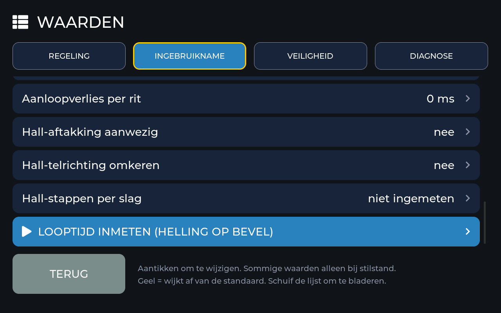
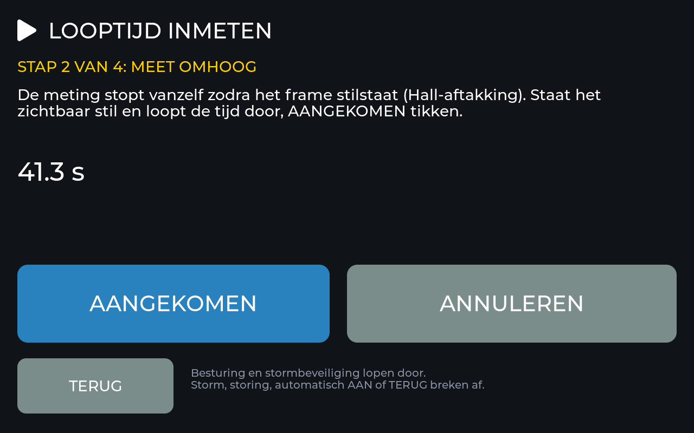
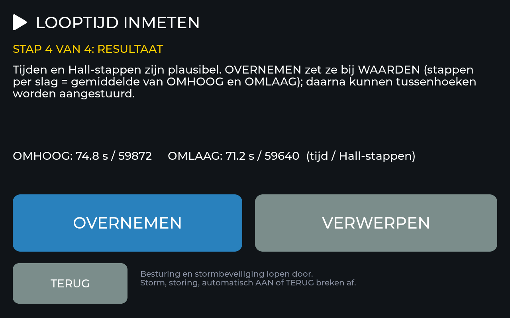
De firmware controleert het resultaat: de tijden moeten de controle van hierboven doorstaan, OMHOOG en OMLAAG moeten elk minstens 1 000 Hall-stappen tellen en mogen hoogstens 3 % van elkaar afwijken (voorgestelde waarde). Anders staat de reden in gele tekst en wordt niets overgenomen.
Tijdens bedrijf:
- De kaart HELLING toont de getelde helling zonder „CA.“, bijvoorbeeld „NU 30° (HALL-AFTAKKING)“ (Afb. 37). Hoe nauwkeurig dat is, wordt aan het rack gemeten; aangenomen is 0,2° (aanname).
- Na het inschakelen is de helling onbekend, totdat de elevatie één keer een eindstand heeft bereikt. De eerste rit naar een tussenhoek begint daarom met een rit naar de vlakke stand (referentierit). Met Hall-aftakking eindigt die zodra de aandrijving stilstaat, niet pas na de maximale looptijd (stilstand-eindstand). Daarna loopt de elevatie direct naar de hoek en schakelt de geleerde naloop eerder uit.
- Blijft de aandrijving halverwege staan (bijvoorbeeld omdat de aandrijvingen geen spanning hebben of de synchroonbesturing heeft afgebroken), dan beëindigt de besturing de rit; het log meldt „Antrieb steht ohne Endlage“ (aandrijving staat stil zonder eindstand). De helling blijft bekend.
- Beweeg je het paneel bij de schakelkast (knoppen van de synchroonbesturing), dan telt de besturing mee; de helling blijft juist.
- Bij storm, uitval van de windmeter en PLAT PARKEREN loopt de elevatie zoals altijd tot in de vlakke stand. De Hall-aftakking breekt deze rit nooit halverwege af. Ligt de elevatie aantoonbaar al plat, dan eindigt de rit na ongeveer 1,5 seconde; is de helling onbekend, dan duurt ze, net als zonder Hall-aftakking, de volle maximale looptijd.
- Zolang „Hall-stappen per slag“ niet ingemeten is, toont het display nog de schatting met „CA.“; het beëindigen van een rit bij stilstand werkt echter al wel.
De besturing telt geen passende pulsen: er komen er geen, hoewel de aandrijving zou moeten lopen, ze tellen tegen de rijrichting in, of er komen er veel te veel (stoorpulsen). Controleer de kabel aan J22, het HallTapBoard (lampjes „24V“ en „5V OK“), de spanning van de aandrijvingen en de telrichting. Zolang de waarschuwing staat, zijn alleen 0° en 60° te kiezen; tussenhoeken tonen „HALL-AFTAKKING GESTOORD - GEEN RIT“ (Afb. 38). Stormbeveiliging, parkeren, automatisch en handmatig bedrijf werken verder zoals zonder Hall-aftakking. Zodra een rit weer passende pulsen levert, verdwijnt de waarschuwing vanzelf; de helling is vanaf de volgende eindstand weer bekend. In de webinterface verschijnt dezelfde waarschuwing.
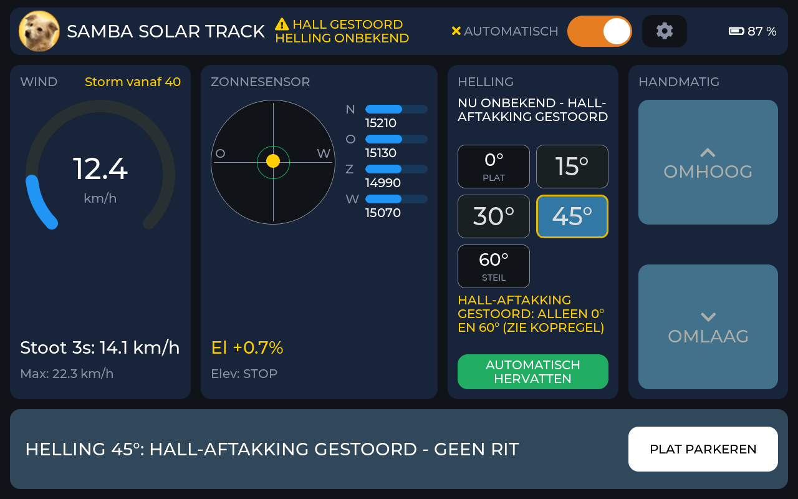
| Waarde (WAARDEN → INGEBRUIKNAME) | Af fabriek | Toegestaan | Waarvoor |
|---|---|---|---|
| Hall-aftakking aanwezig | nee | ja of nee | Schakelt de verwerking van J22 in. Alleen inschakelen als het HallTapBoard aangesloten is. |
| Hall-telrichting omkeren | nee | ja of nee | Voor het geval dat de beide kanalen A en B andersom binnenkomen; dan telt de besturing achteruit. |
| Hall-stappen per slag | niet ingemeten | 1 000 tot 2 000 000; 0 = niet ingemeten | Hoeveel Hall-stappen de hele weg van 0° tot 60° heeft. Wordt door het inmeten ingevuld. |
Alle drie waarden kunnen alleen worden gewijzigd zolang er geen aandrijving loopt.
[ 120.010][I][main ] Neigung auf Befehl: 30 Grad (vorher keine), Quelle Display [ 120.010][I][track ] Neigung 30 Grad: Bezugsfahrt noetig [ 168.420][I][motor ] Elevation: Endlage PLUS am Stillstand erkannt (Hall-Abgriff) nach 48410 ms [ 168.420][I][main ] Ausgang Elevation: RAUF -> STOP (Hall-Abgriff: Endlage am Stillstand) [ 168.420][I][hall ] Bezug Flachstellung (Stillstand, Stellung war unbekannt (Annahme: eigener Endschalter des Antriebs)), Stellung war unbekannt
De regels zijn een voorbeeld in het formaat van de firmware. De statusregel elke 5 seconden eindigt met Hall-aftakking met „| Neigung 30.2 Grad (Hall), Ziel 30“ (helling 30,2 graden, doel 30).
Aanlooptijd 1,5 seconde en stilstandtijd 1 seconde; nauwkeurigheid 0,2°; stoorfilter 5 µs bij hoogstens ongeveer 1 000 pulsen per seconde en kanaal; de telrichting van de pulsteller; venster van de eindstand 3 % van de weg; tolerantie bij het inmeten 3 %; dat de synchroonbesturing HAKIWO SCN4 de Hall-leiding van aandrijving 1 met de aftakking kan delen; dat het geheugen dat een herstart overleeft, op het board werkt. Staat de elevatie bij onbekende helling stil, dan neemt de firmware aan dat de aandrijving bij zijn eigen eindschakelaar staat.
Pauzes voor de aandrijvingen: de inschakelduur (in voorbereiding, niet op het apparaat getest)
Elektrische lineaire aandrijvingen mogen niet continu lopen, anders worden ze te heet. De leverancier HAKIWO noemt voor de aandrijvingen van het Samba-Solar-Rack 2.0-E Plus een inschakelduur van 10 % en hoogstens 2 minuten aan één stuk (montagehandleiding, hoofdstuk 3.6 en 14.4). De 10-inch-firmware houdt zich hier voor elke aandrijving zelf aan. Ook dit is alleen op de computer gebouwd en getest.
- LooptijdtegoedVoor elke aandrijving houdt de firmware een tegoed bij. Elke rit gaat ervan af, elke seconde stilstand vult het weer aan (met een negende van de tijd). Vol staat het tegoed 120 seconden rit aan één stuk toe. Verwacht: In normaal bedrijf met korte volgritten merk je hier niets van.
- PauzeIs het tegoed leeg, dan begint een pauze. Verwacht: Een lopende rit stopt. De statusbalk wordt oranje en toont „PAUZE INSCHAKELDUUR: AANDRIJVING WEER VRIJ OVER 13:30“ (bij handmatig bedrijf, bij „uitgericht“ en in de rusttijd) of bij de helling op bevel „HELLING 45°: PAUZE INSCHAKELDUUR, VERDER OVER …“ (Afb. 20). De resterende tijd telt af.
- Weer vrijZijn er 90 seconden looptijd gespaard, dan is de aandrijving weer vrij. Na een helemaal leeg tegoed duurt dat ongeveer 13,5 minuut. Verwacht: De statusbalk toont weer de normale toestand; een wachtende rit (helling, inmeten) gaat vanzelf verder.
Ook in de pauze loopt de elevatie plat als er storm komt, de windmeter uitvalt of je PLAT PARKEREN kiest. Deze ritten naar plat hebben voorrang. Al het andere wacht: handmatige rit, zonvolging en de rit naar een hoek. De automatische modus beëindigt een lopende volgrit als de pauze begint, en start in de pauze geen nieuwe. Opdrachten uit de browser neemt het apparaat aan, maar de aandrijving wacht het einde van de pauze af.
Zonder eindschakelaar bereikt een rit de eindstand alleen als die de hele maximale looptijd aan één stuk loopt. Een referentierit, de rit naar 0° of 60° en de referentierit bij het inmeten beginnen daarom pas als het tegoed een volle rit toestaat. Tot dan toont het display de wachttijd. Wissel daarom niet vaak van hoek.
De 90 seconden tot de vrijgave zijn een aanname (een volle rit van 0° naar 60° met reserve) en worden aan het rack gecontroleerd. Na een herstart begint het tegoed weer vol; de looptijd vóór de herstart telt niet mee.
[ 930.100][W][motor ] Elevation: Einschaltdauer erreicht -> Pause, Fahrt wieder in 810 s (Flachfahrt bei Sturm, Windmesser-Ausfall und Parken bleibt frei) [ 930.100][I][motor ] Elevation: Fahrt PLUS wegen Einschaltdauer beendet [ 930.100][I][main ] Ausgang Elevation: RAUF -> STOP (Zustand MANUAL) [ 1740.110][I][motor ] Elevation: Pause der Einschaltdauer beendet, Antrieb wieder frei
Bij storm opnieuw plat lopen (in voorbereiding, niet op het apparaat getest)
Zonder eindschakelaars aan de tracker onthoudt de firmware na een rit over de hele maximale looptijd: „Hier is de eindstand“ (looptijd-eindstand). Verder in die richting loopt ze dan niet. Dat klopt zolang de aandrijvingen echt bewogen hebben. Valt echter de voeding uit (het board werkt dan op de accu verder), springt de zekering van de aandrijvingen, of breekt de synchroonbesturing (bijvoorbeeld HAKIWO SCN4) een rit af, dan schakelen de contacten van de printplaat toch, alleen beweegt er niets, en houdt de firmware het paneel ten onrechte voor plat.
Daarom heft de 10-inch-firmware een looptijd-eindstand in de richting „plat“ weer op en loopt opnieuw plat:
- Bij het beginZodra er een storm begint, de windmeter uitvalt of je PLAT PARKEREN kiest (ook meteen na het inschakelen in een van deze toestanden). Verwacht: De elevatie loopt plat, ook als ze volgens de firmware al plat ligt. Zonder eindschakelaar blijft het contact daarbij de volle maximale looptijd gesloten.
- Elke 30 minutenZolang de storm of de uitval van de windmeter aanhoudt, herhaalt zich dat elke 30 minuten (bij parkeren niet). Verwacht: Ongeveer elke 30 minuten sluit het contact voor „plat“ nog een keer voor de maximale looptijd.
Elk van deze ritten eindigt nog steeds uiterlijk na de maximale looptijd. Ze heeft voorrang en loopt ook in een pauze van de inschakelduur. Met ingebouwde eindschakelaars is er geen looptijd-eindstand; dan verandert er niets. Met ingeschakelde Hall-aftakking eindigt de rit na ongeveer 1,5 seconde als de elevatie aantoonbaar al plat ligt; is de helling onbekend of staat de aandrijving halverwege stil, dan loopt ze, net als zonder Hall-aftakking, tot de maximale looptijd.
Of de synchroonbesturing HAKIWO SCN4 het accepteert dat de besturing in de eindstand tot de maximale looptijd „plat“ blijft drukken, zonder foutcode 15 te melden, is niet duidelijk. De fabrikant heeft daar niet op geantwoord (stand 12-10-2026); het wordt aan het rack gecontroleerd. Tot dan is dat een open punt. Met Hall-aftakking eindigt een rit naar de eindstand ongeveer 1 seconde nadat er geen pulsen meer komen, in plaats van pas na de maximale looptijd; de vraag blijft dan open voor ritten naar plat bij onbekende helling en voor bedrijf zonder Hall-aftakking.
Zonder Hall-aftakking ziet de firmware niet of de aandrijvingen bewegen. De nieuwe rit naar plat helpt alleen bij storm, uitval van de windmeter en parkeren. Met ingeschakelde Hall-aftakking vallen ontbrekende pulsen op (waarschuwing „HALL-AFTAKKING GESTOORD“ of „Antrieb steht ohne Endlage“ in het log); alleen aandrijving 1 wordt bewaakt. De ingang „24 V aanwezig“ van de printplaat meldt alleen de spanning aan J11: bij de gemeenschappelijke voeding dus ook de uitval daarvan, maar nooit een gesprongen zekering van de aandrijvingen.
[ 3600.000][I][track ] Zustand IDLE -> STORM (Auto ein, Boe 44.8 km/h, El +3, Az +0 Promille)
[ 3600.000][I][motor ] Elevation: Laufzeit-Endlage PLUS aufgehoben, neue Flachfahrt erlaubt
[ 3600.000][I][main ] Ausgang Elevation: STOP -> RAUF (Zustand STORM)
[ 3690.010][I][motor ] Elevation: Laufzeit-Endlage PLUS erreicht
… 30 Minuten später, der Sturm hält an …
[ 5400.000][D][track ] Zustand STORM haelt an: Flachfahrt wird erneut erlaubtOf er in het log „PLUS“ of „MINUS“ staat, hangt af van de instelling „Vlakke stand ligt richting OMHOOG“; af fabriek is plat = OMHOOG = PLUS.
De printplaat RearCircuitBoard_10 kan alleen aan de hardware getest worden (hoofdstuk 9). Zonder firmware schakelt geen enkel contact en geen enkel lampje. De accu niet aansluiten.
9Eerste ingebruikname van de hardware
Deze stappen testen de printplaat zonder firmware. Elke stap heeft een duidelijk resultaat. Ga pas verder als het klopt. De stappen 4 tot 7 doe je met de printplaat op tafel, nog niet op het board.
- Accu loskoppelenDe stekker van de accu op het board blijft eruit. Verwacht: De accu is nergens mee verbonden.
- Visuele controle en soldeerverbindingenAlle soldeerverbindingen van de klemmen bekijken. Met de doorgangstester aan J3 tot J6 controleren dat geen enkele pin met zijn buur verbonden is. Jumper J16 volgens de paragraaf „Windmeter“ plaatsen, J21 op 2-3. Verwacht: Geen soldeerbrug, beide jumpers zitten erop.
- Controlestap stekkersVóór de eerste keer inschakelen elke stekker vergelijken met de tabel van de klemmen en de afbeelding van de printplaat (Afb. 5): juiste stekker op juiste klem, opschrift klopt. Dan J7, J10, J14 en J22 van opzij bekijken. Verwacht: Elke stekker zit vlak op zijn basisstrip, geen pin van de strip is vrij, geen stekker steekt buiten het einde van een klem uit. Zodra er een firmware voor het 10,1-inch-board is, hoort hierbij: bij het starten verschijnt geen melding over eindschakelaars of lampjes.
- Blokkering forceren en metenDe printplaat alleen (nog niet op het board) op 24 V aansluiten, jumper J21 op 1-2. Met de multimeter aan de soldeerpunten van J1 meten: pin 2 tegen pin 6. Verwacht: 3,8 tot 4,1 V. Ligt de waarde hoger, dan is de blokkering defect: printplaat niet gebruiken.
- Bedrijf en wachttijd24 V uit, J21 op 2-3, 24 V weer aan (de ruimte moet 15 tot 30 °C warm zijn). De spanning aan J1 pin 2 tegen pin 6 in de gaten houden. Verwacht: Eerst ongeveer 4 V; na 45 tot 101 minuten (meestal ongeveer 71 minuten) springt ze naar 4,9 tot 5,2 V.
- KoudetestBij 4,9 tot 5,2 V kort koudespray naast het koperen eiland linksboven spuiten, niet direct op onderdelen. Verwacht: De spanning valt meteen naar ongeveer 4 V. Na het opwarmen blijft ze eerst op 4 V; pas na de wachttijd stijgt ze weer naar ongeveer 5 V.
- WarmtetestHet koperen eiland met een heteluchtpistool op een lage stand voorzichtig boven 37 °C verwarmen; de temperatuur met een thermometer aan het eiland controleren, niet boven 60 °C. Verwacht: De spanning valt naar ongeveer 4 V. Na het afkoelen komt ze na de wachttijd weer op ongeveer 5 V. Deze test vindt soldeerfouten die het koudespray niet vindt.
- InbouwenPrintplaat volgens hoofdstuk 5 met afstandsbussen en pads op het board zetten. Verwacht: Bussen en pads zitten onder het eiland en verschuiven niet; de printplaat ligt vlak op alle vier bussen.
- Board inschakelenSchuifschakelaar van het board op AAN, 24 V inschakelen. Verwacht: Het board start (het display toont het beeld van de fabriekssoftware of blijft zonder firmware donker). Het laadlampje van het board, als dat er is, blijft uit: zonder accu wordt niet geladen, het brandt dan sowieso niet (aanname).
- Schakeluitgangen en eindschakelaarsPas met de firmware voor het 10,1-inch-board (in voorbereiding): elke knop op het display ingedrukt houden en met de doorgangstester door de geplaatste stekker tussen de beide aders meten (stekkers van de schakeluitgangen); elke eindschakelaar indrukken. Verwacht: Precies het bijbehorende contact sluit, precies de ingedrukte eindschakelaar wordt gemeld.
Of de uitschakeling bij overspanning (hoofdstuk 5) werkt, kan alleen met een labvoeding aan een proefexemplaar getest worden; de firmware kan het later niet controleren. Deze test hoort bij het meetplan vóór de bestelling (bijlage 11 E).
Koudespray alleen kort en van 10 tot 20 cm afstand, hete lucht alleen op een lage stand. Niets aan de klemmen van de 24 V aanraken zolang die erop staat.
10Begrippen eenvoudig uitgelegd
- Afdekkap
- Een deksel van kunststof dat het open einde van een aluminium profiel afsluit. De houder van de zonnesensor vervangt zo'n kap en draagt daarbij de sensor.
- Afstrippen
- De kunststof mantel (isolatie) aan het einde van een ader over een bepaalde lengte verwijderen, zodat het blanke metaal in de klem contact maakt. Het best met een striptang; de draden eronder mogen daarbij niet ingesneden worden.
- Afsluitweerstand
- Een weerstand van 120 Ω tussen de aders A en B van een RS485-leiding, aan beide uiteinden ervan. Hij voorkomt dat signalen aan het einde van de leiding teruggekaatst worden.
- Afstandsbout
- Een klein metalen zuiltje met schroefdraad. Met buiten- en binnendraad vervangt het een schroef en draagt tegelijk een tweede printplaat op de juiste afstand. Het HallTapBoard heeft er geen nodig: het wordt in zijn behuizing direct op kunststof domes geschroefd, zodat er via de bevestiging geen geleidende verbinding ontstaat.
- Step-down-omzetter
- Een schakeling die van een hogere gelijkspanning een lagere maakt, hier van 24 V de 5 V voor het board. Ze verliest daarbij weinig energie en wordt nauwelijks warm.
- Adereindhuls
- Een klein metalen buisje dat met een tang op het afgestripte einde van een soepele ader wordt geperst. Het houdt de vele dunne draadjes bij elkaar, zodat er geen uitsteekt en de ader stevig in de klem zit.
- ADS1115
- Een meetchip. Hij zet de spanning van de lichtsensoren om in getallen waarmee de computer kan werken.
- Aluminium profiel (sleufprofiel)
- Een staaf van aluminium met een gelijkblijvende doorsnede, hier 40 × 40 mm, met een sleuf aan elke kant (sleuf 8) en een boring in het midden. Uit zulke profielen wordt bijvoorbeeld het Samba-Solar-Rack gebouwd.
- Accu (lithiumaccu)
- Een oplaadbare batterij. De accu van het 10,1-inch-board heeft 3,7 V. Lithiumaccu's mogen alleen binnen een beperkt temperatuurbereik geladen worden, anders verouderen ze snel of worden ze gevaarlijk.
- Aanloopverlies
- Het deel van elke rit waarin het frame nog niet beweegt, bijvoorbeeld omdat relais aantrekken of de besturing van de aandrijvingen langzaam opstart. Bij de helling op bevel kan het onder WAARDEN worden ingevuld.
- Anode / kathode
- De twee aansluitingen van een diode. Een diode laat stroom maar in één richting door, van de anode naar de kathode. Bij een led is daarom de anode plus en de kathode min. Op de printplaat geeft een streep of hoek in de opdruk meestal de kathode aan; bij de grote diode D5 is de kathode de koelvlag.
- ASA / PETG
- Twee kunststoffen voor de 3D-printer. ASA verdraagt zon en warmte tot ongeveer 100 °C en is daarom geschikt voor de behuizing van het HallTapBoard in de schakelkast; PETG is makkelijker te printen, maar wordt al vanaf ongeveer 80 °C zacht (waarden als richtwaarden, niet opgezocht).
- Flashen
- De firmware in het geheugen van het board schrijven, via een USB-kabel of via het netwerk.
- Azimut
- De draaiing van het paneel van oost naar west.
- Assemblagevoorbeeld
- Een afbeelding van de volledig gestukte printplaat die JLCPCB bij de bestelling vóór het betalen toont. Daarin controleer je of elk onderdeel goed om zit. Een rode stip markeert bij gepolariseerde onderdelen de kant die JLCPCB als referentie neemt; dat is niet altijd pin 1.
- Bewegingsmelder
- Herkent of er voor een apparaat iets beweegt. Hier doet de ingebouwde camera van het display dat: de firmware vergelijkt elk beeld met de vorige, zonder het op te slaan.
- Referentie, referentierit
- Een referentie is een eindstand waarbij de stand zeker bekend is. De referentierit loopt daarheen (meestal plat), voordat de helling op bevel een tussenhoek aanloopt. Na een referentie is de onzekerheid nul.
- Schermbeveiliger
- Een donkere, rustige weergave die het display toont als er een tijdje niemand voor staat. Ze bespaart stroom en verblindt niet. Een aanraking of beweging haalt de normale weergave terug.
- Windvlaag
- Een korte, krachtige windstoot. De besturing rekent met het gemiddelde over drie seconden.
- Bootloader
- Een klein startprogramma aan het begin van het geheugen. Het start bij het inschakelen de eigenlijke firmware. In het fabrieksimage zit het erin.
- Female header / pinheader
- Twee tegenstukken om printplaten op elkaar te steken: de pinheader heeft pinnen, de female header passende openingen. De printplaat RearCircuitBoard_10 steekt met haar pinheader J1 in de female header J8 van het board.
- Codec (audiocodec)
- Een chip die getallen uit de computer omzet in een geluidsspanning. Op het 10,1-inch-board heet hij ES8311; een kleine versterker (NS4150B) stuurt daarmee de luidspreker aan.
- dBFS
- Maat voor het volume van een digitaal geluid: 0 dBFS is het luidste geluid dat de codec kan weergeven, kleinere (negatieve) waarden zijn zachter. 3 dB minder betekent half vermogen.
- Afstandsbus
- Een klein zuiltje van messing met binnendraad aan beide uiteinden. Hier ligt er een zonder schroef tussen twee warmtegeleidende pads en geleidt de temperatuur van de achterwand naar de sensor op de printplaat.
- Downloadmodus
- Een speciale starttoestand van de chip waarin hij nieuwe firmware via USB aanneemt in plaats van die te starten. De pc schakelt hem normaal zelf in; met de hand: BOOT ingedrukt houden, RESET indrukken, BOOT loslaten.
- Doorgangstester
- Een eenvoudig meetapparaat, of een stand op de multimeter, dat piept als twee punten elektrisch verbonden zijn. Daarmee controleer je bijvoorbeeld of een contact gesloten is.
- Massief / soepel (litze)
- Een massieve ader bestaat uit één enkele, stijve draad. Een soepele ader (litze) bestaat uit veel dunne draadjes en is buigzaam. Soepele aders krijgen vóór het insteken in een veerklem het best een adereindhuls.
- Inmeten
- Het begeleid meten van de twee looptijden op het display (INSTELLEN → WAARDEN → INGEBRUIKNAME → LOOPTIJD INMETEN). Zonder inmeten kent de helling op bevel alleen 0° en 60°.
- Inschakelduur
- Het deel van de tijd dat een aandrijving mag lopen zonder te heet te worden. Hier is dat 10 % en hoogstens 2 minuten aan één stuk; daarna heeft de aandrijving een pauze nodig. De 10-inch-firmware houdt zich hier zelf aan; alleen de rit naar plat bij storm, uitval van de windmeter en parkeren loopt ook in de pauze.
- Olifantenvoet
- Bij 3D-printen wordt de eerste laag op het printbed gedrukt en daarbij iets breder. Daardoor kunnen fijne uitsparingen aan de onderkant van een onderdeel dichtlopen. Veel slicers hebben daarvoor een compensatie-instelling.
- erkend elektrotechnicus
- Een persoon met een elektrotechnische opleiding en ervaring die werkzaamheden aan netspanning (230 V) mag uitvoeren. Voedingen aansluiten, stopcontacten plaatsen of leidingen aan het stroomnet leggen hoort in haar handen.
- Elektronische zekering
- Een kleine chip die beschermt zoals een zekering, maar niet doorbrandt. Loopt er te veel stroom, dan begrenst hij die of schakelt af en probeert het na korte tijd vanzelf opnieuw. Op de printplaat RearCircuitBoard_10 beschermen er twee de 24-V-ingang (U16) en de 5 V naar het board (U15).
- Elevatie
- De helling van het paneel, van plat tot steil.
- Eindschakelaars
- Een schakelaar aan het einde van de rijweg. Hij meldt: verder gaat het niet.
- esptool
- Het programma van chipfabrikant Espressif dat firmware op ESP32-boards schrijft. De browserpagina's gebruiken het op de achtergrond.
- Extended / Basic
- De twee klassen van de onderdelenbibliotheek van JLCPCB. Voor elk onderdeeltype van de klasse „Extended“ rekent JLCPCB per opdracht een insteltarief, voor „Basic“ niet.
- Looptijd
- De tijd die de aandrijving nodig heeft voor de hele weg van 0° naar 60° (steiler) of terug (vlakker). Daaruit schat de firmware de helling.
- Veerklem (push-in)
- Een aansluiting zonder schroef: een veer in de stekker klemt de ader vast. Een stijve ader of een ader met adereindhuls schuif je gewoon tot de aanslag erin. Om los te maken druk je op het kleine knopje naast de opening en trek je de ader eruit.
- Venstercomparator
- Een schakeling die controleert of een meetwaarde tussen twee grenzen ligt, hier of de temperatuur tussen 10 en 35 °C ligt.
- Firmware
- De software die op het board draait.
- Flash
- Het geheugen van het board waarin de firmware en de opgeslagen instellingen staan. Het behoudt zijn inhoud ook zonder stroom.
- Senseleiding (remote sense)
- Twee dunne extra aders van sommige voedingen, waarmee de voeding de spanning op een verderop gelegen plek meet en het verlies op de leiding compenseert. Bij Samba Solar Track blijven ze aan de voeding: tot aan de aandrijvingen doorgetrokken, zou de spanning aan de besturing te hoog worden.
- Vulgraad (infill)
- Hoe dicht het binnenste van een geprint onderdeel gevuld is, in procent. 100 % betekent helemaal vol; dat maakt een onderdeel zwaar en stevig, maar kost veel filament.
- Galvanisch gescheiden
- Twee stroomkringen zonder geleidende verbinding tussen elkaar. Een signaal komt toch over, bijvoorbeeld met licht in een optocoupler. Zo kunnen de beide kanten verschillende massa's en voedingen hebben zonder elkaar te storen.
- Contramoer
- Een moer die een kabelwartel van binnen in de behuizingswand vasthoudt. De wartel wordt van buiten door het gat gestoken, binnen komt de contramoer op de schroefdraad; daarna worden beide tegen elkaar aangedraaid.
- Onderstel G1 / G2
- De bouwvorm van het Samba-Solar-Rack (ligging van de draaias). Die bepaalt welke slag van de aandrijving bij welke helling hoort. G1: Rack 2.0-D en 2.0-E; G2: 2.0-E Plus, 2.1 en 2.1 Plus. Voor andere onderstellen is er „lineair“ (een aanname).
- Schroefdraadinzet
- Een kleine huls van messing met binnendraad die met de hete soldeerbout in een gat van een geprint onderdeel wordt ingesmolten (ook „inzetmoer“). Daarna kun je daar een metalen schroef vaak in- en uitdraaien zonder dat de schroefdraad in de kunststof uitscheurt. De behuizing van het HallTapBoard heeft acht inzetten ruthex M3, de houder van de zonnesensor twee inzetten ruthex M4.
- Draadstang
- Een staaf met schroefdraad over de hele lengte, hier M8 van roestvrij staal. Bij de pendelhouder is die de as waar de pendel om draait.
- Glitchfilter (stoorfilter)
- Een filter in de pulsteller dat zeer korte pulsen niet meetelt. Aan de pulsingang J22 gelden pulsen korter dan 5 µs als storing.
- GND
- Massa, de gemeenschappelijke minpool van de schakeling.
- Hall-aftakking
- Het afnemen van de pulsen van de Hall-sensoren aan de synchroonbesturing, zonder ze te storen. Dat doet het HallTapBoard. Is onder WAARDEN „Hall-aftakking aanwezig“ ingeschakeld, dan telt de 10-inch-firmware de pulsen en kent zo de helling (hoofdstuk 8).
- Hall-stap
- Elke wissel tussen LOW en HIGH (flank) op een van de beide kanalen A en B. Op één puls komen 4 Hall-stappen. „Hall-stappen per slag“ is het aantal stappen voor de hele weg van 0° tot 60°.
- Hall-sensor
- Een kleine sensor die een magnetisch veld herkent. In veel lineaire aandrijvingen zit er een aan de motor: bij elke omwenteling geeft hij pulsen af. Wie de pulsen telt, weet hoe ver de aandrijving gelopen is. Met twee kanalen (A en B) herken je ook de richting.
- HallTapBoard
- Een eigen kleine printplaat voor de schakelkast (ontwerp 0.5 met 3D-geprinte behuizing, nog niet geproduceerd). Ze neemt aan de synchroonbesturing HAKIWO SCN4 de pulsen van de Hall-sensoren van aandrijving 1 af en geeft ze via optocouplers galvanisch gescheiden als twee potentiaalvrije contacten door aan de pulsingang J22 van de printplaat RearCircuitBoard_10. Ze wordt gevoed uit de 24 V van de aandrijvingen (hoofdstuk 6).
- HTTPS
- De versleutelde vorm van de verbinding met een website. Het apparaat controleert daarbij met een ingebouwde lijst van vertrouwde instanties (certificaten) dat het echt met de website van het project praat.
- Hiccup
- Engels voor de hik: bij een kortsluiting schakelt de omzetter af, wacht even en probeert het opnieuw, steeds weer, totdat de fout verholpen is. Zo wordt niets te heet. Sommige voedingen gedragen zich bij overbelasting net zo; voor de gemeenschappelijke voeding is dat ongeschikt.
- HIGH / LOW
- De twee toestanden van een digitaal signaal: spanning aanwezig (HIGH) of geen spanning (LOW).
- Maximale looptijd
- Zo lang mag een aandrijving aan één stuk lopen. Met eindschakelaars is een langere rit een fout; zonder eindschakelaars geldt de eindstand daarna als bereikt (looptijd-eindstand).
- Hysterese
- Het verschil tussen in- en uitschakeldrempel. Aan de pulsingang J22 schakelt de comparator bij ongeveer 2,05 V in de ene en pas bij ongeveer 2,36 V in de andere richting. Kleine storingen op de leiding veroorzaken zo geen valse pulsen.
- I2C
- Een verbinding uit twee leidingen (SDA en SCL) waaraan meerdere chips hangen. Elke chip heeft een eigen adres.
- Kabelafscherming
- Een vlechtwerk of folie om de aders van een kabel. Aan één kant met GND verbonden houdt het storingen weg van de aders.
- Kabelwartel (PG-wartel)
- Een doorvoer voor een kabel door een behuizingswand. Bij het aandraaien van de dopmoer drukt een afdichtring zich om de kabelmantel: de kabel is dan dicht en beveiligd tegen uittrekken (trekontlasting). „PG 11“ is de maat van de schroefdraad (pantserdraad); elke maat dicht alleen kabels binnen een bepaald bereik van de buitendiameter af, bij de PG 11 van Lapp 4 tot 10 mm.
- Koudespray
- Een spray uit de elektronicahandel die een plek binnen seconden sterk afkoelt. Daarmee controleer je of een temperatuursensor juist reageert.
- Kerngat
- Het gat waarin schroefdraad wordt getapt. Voor M8 is dat 6,8 mm; de middenboring van veel aluminium profielen 40 × 40 heeft precies deze maat.
- Comparator
- Een chip die twee spanningen vergelijkt en aan de uitgang meldt welke hoger is. Op de printplaat RearCircuitBoard_10 werken er twee: in de laadblokkering (U18) en aan de pulsingang J22 (U22).
- Kruipweg / luchtweg
- De kortste weg tussen twee geleiders over het oppervlak van de printplaat (kruipweg) of door de lucht (luchtweg). Hoe langer, hoe moeilijker een lekstroom, bijvoorbeeld via vocht en vuil, een weg vindt.
- Kogellager
- Een ring met kogels tussen binnen- en buitenring, zodat iets bijna zonder wrijving draait. Het lager 608 (8 × 22 × 7 mm) is zeer gangbaar, bijvoorbeeld in skeelers.
- Koelvlag
- Een groot metalen vlak aan de behuizing van een onderdeel dat vlak op de printplaat ligt en wordt vastgesoldeerd. Via dit vlak en het koper van de printplaat geeft het onderdeel zijn warmte af. Bij de diode D5 is de koelvlag tegelijk een aansluiting, de kathode.
- Lader
- De schakeling op het board die de accu uit de 5 V laadt. Ze laadt alleen als haar ingangsspanning hoog genoeg is (ongeveer 4,5 V).
- Laadblokkering
- De schakeling op de printplaat RearCircuitBoard_10 die het laden van de accu verhindert als het te koud of te warm is: ze verlaagt dan de 5 V voor het board naar ongeveer 4 V.
- Looptijd-eindstand
- Zonder eindschakelaars aan de tracker geldt een eindstand als bereikt als het contact de hele maximale looptijd gesloten was; de aandrijving staat dan bij haar eigen, ingebouwde eindschakelaar. Die kan verkeerd zijn als de aandrijvingen daarbij geen spanning hadden of hun besturing de rit heeft afgebroken. Met Hall-aftakking is er in plaats daarvan de nauwkeurigere stilstand-eindstand.
- Vermogensreductie (derating)
- Een voeding levert bij hitte minder dan haar nominaal vermogen. Hoeveel, toont een curve in het datablad. Monteer de voeding daarom in de schaduw.
- Led (lichtgevende diode)
- Een klein onderdeel dat licht geeft als er stroom in de juiste richting doorheen loopt. Het heeft een voorschakelweerstand nodig die de stroom begrenst.
- Lichtgeleider
- Een staaf van heldere kunststof (hier acrylglas, PMMA) die licht als een buis doorgeeft: wat onderin schijnt, komt bovenaan het einde eruit. Zo zie je een lampje in de behuizing van buitenaf, en het gat in het deksel is toch dicht.
- Lichtschacht
- Een korte buis van het deksel van een behuizing tot net boven een lampje op de printplaat. Die leidt het licht naar het gat in het deksel, zodat je het lampje van buitenaf ziet zonder het deksel te openen.
- Lineaire aandrijving
- Een motor die een stang in- en uitschuift.
- Soldeerbrug
- Soldeertin dat bij het solderen ongewild twee naast elkaar liggende pinnen verbindt. Wat gescheiden moet zijn, is dan elektrisch verbonden. Je vindt het met de doorgangstester: die piept tussen de beide pinnen. Om het te verwijderen het overtollige tin met de hete soldeerbout wegtrekken en daarna opnieuw controleren.
- Manifest
- Een klein tekstbestand op de website van het project. Het noemt de nieuwste firmware: versienummer, datum, grootte, een controlesom van het bestand en de handtekening. Daaraan herkent het apparaat of er een nieuwere firmware is en of het bestand echt en volledig is.
- Modbus-RTU
- Een gangbare „taal“ voor meetapparaten. Het board vraagt, het apparaat antwoordt met de meetwaarde en een controlesom.
- Naloop
- Zo ver draait de aandrijving na het uitschakelen nog door. Met Hall-aftakking meet de besturing de naloop per richting en schakelt bij de rit naar een hoek zoveel eerder uit.
- NC / NO
- Verbreekcontact (normally closed) en maakcontact (normally open). Beschrijft of een contact in rusttoestand gesloten of open is.
- Helling op bevel
- De elevatie loopt naar een gekozen hoek en blijft daar; de automatische modus pauzeert tot je die hervat. In het log heet de toestand POSITION. Alleen 10-inch-versie, alleen bij één as.
- NTC
- Een weerstand waarvan de waarde daalt bij stijgende temperatuur. Daarmee meet de printplaat de temperatuur.
- Optocoupler
- Een onderdeel dat een signaal met licht overdraagt: een kleine led aan de ene kant schakelt een transistor aan de andere kant. In- en uitgang zijn elektrisch gescheiden. De uitgang werkt als een potentiaalvrij contact.
- PCA9538
- Een chip met acht extra in- en uitgangen, aangestuurd via I2C.
- Pendel
- Een lichaam dat draaibaar is opgehangen en door zijn gewicht vanzelf loodrecht naar beneden gaat hangen. De pendelhouder gebruikt dat, zodat de windmeter altijd loodrecht staat.
- PhotoMOS
- Een elektronische schakelaar zonder bewegende delen. Een kleine led binnenin schakelt het contact, de beide kanten zijn elektrisch gescheiden.
- Ompoling
- Plus en min aan de motor verwisselen, zodat hij achteruit loopt.
- Polymeercondensator
- Een condensator met vaste kunststof in plaats van vloeibare inhoud. Hij gaat lang mee en dempt spanningsschommelingen goed.
- Potentiaalvrij
- Een contact dat met geen enkele spanning van de besturing verbonden is. Het gedraagt zich als een eenvoudige drukknop met twee aansluitingen.
- Pull-up / pull-down
- Een weerstand die een leiding naar een vaste toestand trekt, zolang niemand die aanstuurt.
- Pulsteller (PCNT)
- Een deel van de processor ESP32-P4 dat pulsen op een pin zelfstandig telt, ook zeer snelle, zonder het programma te belasten. De 10-inch-firmware telt daarmee de pulsen van ingang J22 als de Hall-aftakking ingeschakeld is.
- Kwadratuur
- Twee signalen (kanaal A en B) die een kwart periode ten opzichte van elkaar verschoven zijn. Uit de volgorde waarin ze wisselen, herkent de besturing de richting van de beweging.
- Steek
- De afstand van hart tot hart tussen twee naast elkaar liggende aansluitingen van een klem of pinheader, bijvoorbeeld 3,5 mm. Stekker en klem moeten dezelfde steek hebben.
- RearCircuitBoard_10
- De eigen printplaat voor het 10,1-inch-board ESP32-P4-WIFI6-Touch-LCD-10.1. Ze zit aan de buitenkant op de achterwand van het apparaat en steekt met de pinheader J1 in diens female header J8 (in voorbereiding).
- Relais
- Een elektrisch bediende schakelaar. Een kleine stroom schakelt een grote.
- RGB-lampje
- Drie leds in één behuizing: rood, groen en blauw. Rood en groen samen geven geel.
- RS485
- Een robuuste dataverbinding over twee leidingen (A en B), geschikt voor lange kabels buiten.
- Sleutel (ondertekeningssleutel)
- Een paar bij elkaar horende getallen. Met het geheime deel ondertekent de ontwikkelaar een nieuwe firmware; het openbare deel draagt elke firmware in zich en controleert daarmee de handtekening. Het geheime deel heeft alleen de ontwikkelaar.
- Beschermingsgraad (IP65, IP67)
- Geeft aan hoe goed een apparaat tegen stof en water beschermd is. Het eerste cijfer staat voor stof (6 = stofdicht), het tweede voor water (5 = waterstralen, 7 = kort onderdompelen). Een voeding buiten heeft een hoge beschermingsgraad nodig.
- Veilige laagspanning (SELV)
- Kort voor „safety extra-low voltage“: een zo lage spanning dat die bij aanraking niet gevaarlijk is, en die veilig gescheiden van het stroomnet wordt opgewekt, bijvoorbeeld door een daarvoor goedgekeurde voeding. Bij Samba Solar Track staat er op de printplaat hoogstens 30 V gelijkspanning.
- Zelfhouding
- Een schakeling die zich na het aanspreken zelf vasthoudt. Hier houdt die de 24-V-ingang uit totdat de 24 V wordt uitgeschakeld.
- Zelftest
- Een korte controle die een net geflashte firmware op zichzelf uitvoert: werkt het display, en antwoordt de chip van de schakeluitgangen op de printplaat (in de simulatie volstaat het display)? Is de wifi ingeschakeld, dan moet het apparaat bovendien sinds de herstart minstens één keer met de wifi verbonden zijn geweest. Pas daarna geldt de nieuwe firmware als goed. Doorstaat ze de controle niet, dan keert het apparaat terug naar de vorige firmware.
- Handtekening (digitale handtekening)
- Een getallenreeks die alleen met de geheime sleutel van het project gemaakt kan worden. Verandert iemand ook maar één teken van het ondertekende bestand, dan past ze niet meer. Zo neemt het apparaat alleen firmware aan die echt van het project komt.
- Zekering, zelfherstellend
- Een zekering die bij te veel stroom heet en hoogohmig wordt en zich na het afkoelen vanzelf weer sluit. Je hoeft ze niet te vervangen.
- Simulatie
- Een testbedrijf zonder de printplaat RearCircuitBoard_10: de firmware bootst tracker, sensoren en aandrijvingen alleen na en schakelt niets.
- SMD
- Kort voor „surface-mounted device“: onderdelen die plat op het oppervlak van de printplaat worden gesoldeerd, zonder gaten. JLCPCB stukt ze met machines. Het tegenovergestelde zijn doorsteekonderdelen zoals klemmen en pinheaders, waarvan de pinnen door gaten in de printplaat worden gestoken en dan gesoldeerd.
- Soft termination
- Condensatoren met meegevende aansluitingen. Buigt de printplaat door, dan scheuren ze minder vaak.
- Spanningsregelaar
- Een onderdeel dat van een hogere, schommelende spanning een vaste, lagere maakt, bijvoorbeeld van 24 V precies 5 V. Een eenvoudige regelaar (lineaire regelaar) zoals de TPS7B69 op het HallTapBoard zet de rest van de spanning om in warmte.
- Spanningsdeler
- Twee weerstanden achter elkaar die een spanning in een vaste verhouding delen. Op het 10,1-inch-board delen R92 en R93 de accuspanning tot een derde, zodat de meetingang van de chip die kan meten.
- Spanningsverlies (spanningsval)
- Elke leiding heeft een kleine weerstand. Loopt er stroom, dan gaat daarop een deel van de spanning verloren: hoe langer en dunner de leiding en hoe groter de stroom, hoe meer. Gerekend wordt met heen- en retourader.
- Insteekbare klem
- Een klem uit twee delen: de basisstrip is op de printplaat gesoldeerd, de aders komen in de losse stekker. Meestal houdt een kleine schroef ze vast, bij de schakeluitgangen van de printplaat RearCircuitBoard_10 een veerklem. Zo kan de printplaat worden vervangen zonder de aders los te maken.
- Jumper (steekbrug)
- Een kleine stekker die twee naast elkaar liggende pinnen verbindt. Door omsteken wordt een verbinding in- of uitgeschakeld.
- Stelring
- Een ring van metaal met een klemschroef die op een buis of as wordt vastgeschroefd. Hij voorkomt dat een onderdeel verschuift of eraf valt.
- Sterbedrading
- Elke verbruiker krijgt zijn eigen leiding direct vanaf de klemmen van de voeding, zoals de stralen van een ster. Zo loopt de grote stroom van de motoren niet over de leiding van de besturing, en heeft elke leiding haar eigen, passende zekering.
- Stilstand-eindstand
- Een eindstand die de besturing met Hall-aftakking eraan herkent dat er ondanks ingeschakelde uitgang geen Hall-stappen meer komen: na een aanloop van 1,5 seconde gedurende 1 seconde geen enkele (aannames). De rit eindigt dan meteen, niet pas na de maximale looptijd. Staat de aandrijving daarentegen halverwege stil, dan beëindigt de besturing de rit zonder eindstand („Antrieb steht ohne Endlage“).
- Kopwand
- De gesloten wand aan het einde van de basisstrip van een insteekbare klem. Die houdt de stekker opzij vast, zodat hij niet verschoven kan worden ingestoken.
- Stroombegrenzing (CV+CC)
- Een voeding met constante spanning (CV) en stroombegrenzing (CC) houdt de spanning tot de maximale stroom bereikt is; daarboven begrenst ze de stroom en blijft leveren in plaats van uit te schakelen. Het tegenovergestelde is een voeding met hiccup.
- Synchroonbesturing
- Een besturingsapparaat dat twee aandrijvingen even snel laat lopen, zodat het onderstel niet kromtrekt, bijvoorbeeld de HAKIWO SCN4 aan het Samba-Solar-Rack 2.0-E Plus. De printplaat schakelt alleen de drukknopingang ervan.
- Dode tijd
- De pauze tussen stoppen en rijden in de tegenovergestelde richting.
- Driver
- Een klein programma voor de pc, zodat die een aangesloten apparaat, hier de USB-chip CH343 van het board, als poort herkent.
- Scheidingsafstand
- Een strook van de printplaat zonder koper tussen twee delen van de schakeling die niet geleidend verbonden mogen zijn. Op het HallTapBoard is die 7 mm breed; alleen de optocouplers overbruggen die, met licht in plaats van stroom.
- Onzekerheid
- Hoe ver de getoonde helling er hoogstens naast kan zitten, geschat. Ze groeit met elke rit en is na een referentie nul. Vanaf 6° toont het display „ONBEKEND“.
- Ompoolbeveiliging
- Een diode in de ingang van de voeding die alleen in de juiste richting stroom doorlaat. Zijn plus en min verwisseld aangesloten, dan spert ze, en de schakeling erachter krijgt geen spanning en raakt niet beschadigd. Op het HallTapBoard blijven dan beide lampjes donker.
- Via
- Een kleine doorgemetalliseerde boring die de koperlagen van een printplaat verbindt. Op de printplaat RearCircuitBoard_10 zijn alle vias gevuld en afgesloten, zodat er bij het solderen geen tin in loopt.
- Warmtegeleidende pad
- Een zacht, elektrisch isolerend kussentje dat warmte goed geleidt en spleten tussen twee delen opvult.
- Web Serial
- Een functie van sommige browsers (Chrome, Edge, Opera, nieuwere Firefox) om met een apparaat aan de USB-poort te praten. Daarmee kan firmware zonder eigen programma worden geflasht.
- Fabrieksimage (factory.bin)
- Het bestand met alles wat een leeg board nodig heeft om te starten: bootloader, indeling van het geheugen en firmware. Het wordt aan het begin van het geheugen (0x0) geschreven en wist de opgeslagen instellingen.
- Voorkeurshoek
- Een zelf ingestelde hoek van 1 tot 59° voor de helling op bevel, naast 0°, 30° en 60°.
- Tweerijige insteekklem
- Een insteekbare klem met twee rijen aansluitingen boven elkaar. Bij de schakeluitgangen van de printplaat RearCircuitBoard_10 zijn van de pinnen alleen twee schuin tegenover elkaar liggende bezet: bij OMHOOG en OMLAAG (J3, J4) twee van de vier, bij OOST en WEST (J5, J6) de beide buitenste van zes. Hun stekker past op geen enkele enkelrijige klem en niet op J11. Een stekker van OMHOOG of OMLAAG in OOST of WEST, of omgekeerd, ook verschoven ingestoken, raakt hoogstens één contactpin en schakelt niets; een verkeerde stekker kan het contact daarom niet overbruggen.
11Bijlage
Stuklijst, leveranciers, kosten, de pinbezetting van de pinheader, het meetplan vóór de bestelling en het HallTapBoard (G). Stand: ontwerp 0.10 van 11 oktober 2026 (ontwerp 0.9 van 8 oktober 2026, aangevuld met de bruggetjes aan het sensoreiland en de pulsingang J22).
A. Stuklijst (assemblagevariant smd)
JLCPCB stukt alle 233 SMD-onderdelen (83 nummers, waarvan 37 van de klasse „Extended“ en 46 „Basic“; R92 en C38 blijven leeg). In de assemblagevariant „voll“ soldeert JLCPCB daarnaast de 15 klemmen en pinheaders erin (248 onderdelen, 91 nummers). De pulsingang J22 (11-10-2026) brengt 20 SMD-onderdelen en geen nieuw Extended-type mee. De referenties staan ook in de opdruk van de printplaat.
| Onderdeel | Type | JLCPCB-nr. | Klasse | Aantal | Referentie | Waarvoor |
|---|---|---|---|---|---|---|
| Meetchip | ADS1115IDGS (VSSOP-10) | C37593 | Extended | 2 | U1, U20 | Zonnesensor (0x48); bewaking (0x49) |
| I/O-chip | PCA9538PW, TI (TSSOP-16) | C201530 | Extended | 2 | U2, U8 | Schakeluitgangen/ |
| Schakelcontact | PhotoMOS AQY212GS (SOP-4) | C415471 | Extended | 4 | K1–K4 | Schakeluitgangen, 60 V / 1 A |
| Overspanningsbeveiliging | TPD4E1U06DBV (SOT-23-6) | C124691 | Extended | 6 | U3, U4, U6, U10, U13, U14 | Ingangen, sensorvoeding, lampjes, LED_5V |
| Stroombegrenzer | TPS2553DBV (SOT-23-6) | C55266 | Extended | 2 | U5, U9 | Sensorvoeding, lampjes |
| TVS-diode | SMAJ33CA (SMA), bidirectioneel | C115251 | Extended | 8 | D1–D4, D11, D12, D16, D17 | over de contacten; RS485 A/B; pulsen A/B (J22) |
| RS485-Transceiver | THVD2410DR, TI (SOIC-8), ±70 V | C1849398 | Extended | 1 | U11 | Windmeter |
| Spanningsregelaar 3,3 V | AP7361C-33Y5-13 (SOT-89-5) | C460397 | Extended | 1 | U12 | V3V3_AUX |
| 5-V-omzetter | LM5146RGYR, TI (VQFN-20) | C3188679 | Extended | 1 | U7 | 24 V → 5 V |
| MOSFET | CSD18543Q3A, TI (SON 3,3 × 3,3) | C840100 | Extended | 2 | Q2, Q3 | Schakelaar van de omzetter |
| Opslagspoel | Würth WE-LHMI 74437368100, 10 µH | C1519857 | Extended | 1 | L1 | Omvormer |
| Shunt | Panasonic ERJ-8BWFR010V, 10 mΩ, 1206, 1 W | C2076185 | Extended | 1 | R53 | Stroomgrens van de omzetter |
| eFuse 5 V | TPS259470ARPWR, TI (VQFN-HR-10) | C3662799 | Extended | 1 | U15 | Zekering en terugstroomblokkering +5V |
| eFuse 24 V | TPS26600PWPR, TI (HTSSOP-16) | C544399 | Extended | 1 | U16 | Zekering aan de 24-V-ingang |
| Temperatuurschakelaar | TMP390A2DRLR, TI (SOT-563) | C5219772 | Extended | 1 | U17 | schakelt U16 boven 110 °C uit |
| Comparator | LM2903BIDR, TI (SOIC-8) | C2869804 | Extended | 2 | U18, U22 | Venster van de laadblokkering; ingang van de pulsen (J22) |
| Teller | 74HC4060D (SOIC-16) | C5649 | Extended | 1 | U19 | Wachttijd van de laadblokkering |
| Referentie | TLV431BIDBZR, TI (SOT-23) | C398375 | Extended | 1 | U21 | Overspanningsuitschakeling |
| Zekering | BSMD2920-200-60V, zelfherstellend | C49233174 | Extended | 1 | F1 | 24-V-ingang |
| Schottkydiode | SS10P6-M3/86A, Vishay (TO-277A) | C2927414 | Extended | 1 | D5 | Ompoolbeveiliging |
| TVS-diode | SMBJ30A (SMB) | C113998 | Extended | 1 | D6 | 24-V-ingang |
| Zenerdiode | BZT52C5V1 (SOD-123) | C173407 | Extended | 1 | D14 | TMP_VDD |
| Zenerdiode | BZT52C5V6 (SOD-123), „Preferred“ | C19077402 | Extended | 1 | D15 | Klemming V5_LOG (E36); draaiing en polariteit in het assemblagevoorbeeld controleren (aanname) |
| Diode | 1N4148WS (SOD-323) | C2128 | Basic | 1 | D13 | Tijdschakeling U19 |
| NTC 10 kΩ | Murata NCU18XH103F60RB (0603) | C440252 | Extended | 2 | RT1, RT2 | Sensor van de laadblokkering; meting door de firmware |
| Transistor NPN | MMBT3904 (SOT-23) | C20526 | Basic | 3 | Q1, Q11, Q12 | Detectie 24 V; zelfhouding |
| Transistor PNP | SS8550 (SOT-23) | C8542 | Basic | 1 | Q10 | Zelfhouding |
| MOSFET klein | 2N7002 (SOT-23) | C8545 | Basic | 6 | Q4–Q9 | Laadblokkering, vrijgave aan U20 |
| Led groen | KT-0805G (0805) | C2297 | Basic | 1 | D9 | BEREIT |
| Led RGB | S4-3528RGBTA-A, gemeinsame Anode | C2827321 | Extended | 1 | D10 | FAIL |
| Elco 100 µF 63 V | Ymin VKMD1001J101MV (8 × 10) | C487384 | Extended | 1 | C14 | 24-V-ingang |
| Condensator 2,2 µF 100 V | Samsung CL31B225KCHSFNE (1206, flexibele aansluitingen) | C16195971 | Extended | 8 | C15, C16, C56–C61 | Ingangsbank (serieparen) |
| Condensator 100 nF 100 V | Murata GCE21BR72A104KA01L (0805, flexibele aansluitingen) | C3011698 | Extended | 3 | C17, C39, C41 | HF aan VIN_BUCK, ingang U16 |
| Condensator 47 µF 10 V | Murata GRJ32ER71A476KE11L (1210) | C7198516 | Extended | 4 | C20, C21, C65, C66 | Uitgangsbank |
| Polymeer 220 µF 16 V | Chemi-Con APXG160ARA221MF80G | C709481 | Extended | 1 | C22 | Uitgangsbank |
| Condensator 10 µF X7R | Murata GRM188Z71A106KA73D (0603) | C2959727 | Extended | 1 | C31 | Uitgang U15 |
| Condensator 22 µF 25 V | 1206 X5R | C12891 | Basic | 1 | C28 | Uitgang U12 |
| Condensator 10 µF | 0603 X5R | C19702 | Basic | 4 | C1, C13, C26, C27 | Buffer |
| Condensator 100 nF | 0603 X7R | C14663 | Basic | 29 | C2–C12, C18, C24, C25, C29, C30, C32, C42–C46, C48–C53, C71 | Ontstoring, ontkoppelcondensatoren (C71 aan U22) |
| Condensator 1 µF 50 V | 0805 | C28323 | Basic | 1 | C34 | VCC van de omzetter |
| Condensator 1 µF | 0603 X5R | C15849 | Basic | 1 | C68 | Filter V5_LOG |
| Condensator 220 nF | 0603 X7R | C21120 | Basic | 2 | C47, C67 | Tijdschakeling U19 |
| Condensator 47 nF | 0603 | C1622 | Basic | 2 | C33, C40 | Zachte start U7, dVdT U16 |
| Condensator 22 nF | 0603 | C21122 | Basic | 1 | C35 | Compensatie |
| Condensator 10 nF | 0603 | C57112 | Basic | 3 | C54, C62, C64 | Uitschakeltijd U15, SHDN U16, zelfhouding |
| Condensator 2,2 nF | 0603 | C1604 | Basic | 1 | C55 | U15 |
| Condensator 1 nF | 0603 | C1588 | Basic | 4 | C37, C63, C69, C70 | Compensatie; filter OV_REF; filter van de pulsen (J22) |
| Condensator 22 pF | 0603 C0G | C1653 | Basic | 1 | C36 | Compensatie |
| Weerstand 79,6 kΩ 0,1 % | Yageo RT0603BRD0779K6L | C861560 | Extended | 1 | R24 | Uitgangsspanning |
| Weerstand 15 kΩ 0,1 % | Yageo RT0603BRD0715KL | C326733 | Extended | 1 | R25 | Uitgangsspanning |
| Weerstand 324 kΩ 0,1 % | Yageo RT0603BRD07324KL | C861321 | Extended | 1 | R61 | Drempels U15 |
| Weerstand 64,9 kΩ 0,1 % | Yageo | C861510 | Extended | 1 | R62 | Drempels U15 |
| Weerstand 100 kΩ 0,1 % | Yageo | C122538 | Extended | 1 | R63 | Drempels U15 |
| Weerstand 332 kΩ | 0603, 1 % | C23139 | Extended | 1 | R67 | Drempel 110 °C aan U17 |
| Weerstand 4,7 kΩ 1206 (250 mW) | UNI-ROYAL 1206W4F4701T5E | C17936 | Basic | 2 | R102, R103 | Pull-up van de pulscontacten (24 V op de ader) |
| Weerstanden 1 % (0603, behalve R39 0805) | 200 Ω C8218 (4) · 1 kΩ C21190 (12) · 2,2 kΩ C4190 (6) · 330 Ω C23138 (8) · 10 kΩ C25804 (15) · 200 kΩ C25811 (2) · 120 Ω C17437 (1, 0805) · 680 Ω C23228 (2) · 100 kΩ C25803 (11) · 12 kΩ C22790 (3) · 300 kΩ C23024 (1) · 1 MΩ C22935 (2) · 33 kΩ C4216 (4) · 9,1 kΩ C23260 (1) · 0 Ω C21189 (1) · 150 kΩ C22807 (1) · 15 kΩ C22809 (4) · 6,8 kΩ C23212 (2) · 56 kΩ C23206 (1) · 20 kΩ C4184 (1) · 13 kΩ C22797 (2) · 47 kΩ C25819 (6) · 3 kΩ C4211 (1) · 2 MΩ C22976 (2) · 470 kΩ C23178 (1) · 8,2 kΩ C25981 (1) · 22 kΩ C31850 (1) · 100 Ω C22775 (3, R101, R114, R115) | zie type | Basic | 99 | overige R (plus R104–R115) | Meting, pull-ups, voorschakelweerstanden, delers, tijdschakeling, sperweerstanden R85/R93/R94 (voorlopig, E29); filter, drempel, meekoppeling, pull-up en serieweerstand van de pulsingang |
| niet gestukt (DNP) | R92 2,2 Ω (C25369), C38 1 nF 100 V (C43847) | – | – | 0 | R92, C38 | Plaats voor een demper aan het schakelknooppunt |
Knelpunten (voorraad bij JLCPCB, momentopname): L1 C1519857 289 stuks (tweede bron volgens E32 vastgelegd: Changjiang FXL1040-100-M C475915 of Sunlord MWSA1004S-100MT C408487, beide pas na controle van maattekening, landpatroon en verboden zone), U15 C3662799 1 061, D5 C2927414 1 733, C7198516 2 019 (4 per printplaat), C3011698 2 442 (3 per printplaat), C201530 2 743 (2 per printplaat), U7 C3188679 3 583, R61 C861321 3 778, C709481 3 960, C5649 4 032, C544399 4 923; stekker KF2EDGKS-3.5-2*3P C2923216 slechts 90 stuks bij LCSC. Controledatum: nummers, klassen en voorraden van de SMD-onderdelen bij JLCPCB op 7-10-2026 om 11:16–11:46 en 12:36–13:57 CEST opgezocht, alle 40 nieuwe of gewijzigde nummers opnieuw op 8-10-2026 om 09:57:56–09:58:04 CEST (fabrikant en type bevestigd), de hele stuklijst met prijzen en voorraden op 8-10-2026 om 09:53–09:55 CEST (kostencontrole); R80 C23178 (Basic) op 7-10-2026 om 15:15; D15 C19077402 en R101 C22775 na de nabewerking E36 op 8-10-2026 om 10:49–10:51 CEST, opnieuw om 11:22 CEST (D15 Extended, 2 966 774 stuks; R101 Basic, 10 999 003 stuks). De nummers van de pulsingang J22 op 11-10-2026 om 14:02:05–14:02:21 en 14:23:18–14:23:21 CEST opgezocht (voorraden om 14:23 CEST: C115251 204 621, C2869804 119 902, C17936 3 149 389, C25804 33 719 722, C22790 1 090 057, C25819 2 212 225, C22775 10 430 569, C1588 7 097 647, C14663 56 390 393, basisstrip C441172 2 162, stekker C440848 1 778). Vóór de bestelling opnieuw controleren.
B. Met de hand geplaatste onderdelen en leveranciers
JLCPCB verstuurt geen losse onderdelen. Stekkers, jumpers, de pinheader J1 en de mechanische onderdelen bestel je bij LCSC (kan met de JLCPCB-opdracht in één pakket) of bij een handelaar die aan particulieren levert. In de assemblagevariant „smd“ komen de basisstrips erbij; die soldeer je zelf in. Daarvoor geldt de opmerking over aansprakelijkheid in hoofdstuk 2.
| Onderdeel | Type (Kefa resp. fabrikant) | JLCPCB/LCSC | Aantal | Assemblagevariant | Alternatief met levering aan particulieren (prijs incl. btw per stuk, opgevraagd 7-10-2026) |
|---|---|---|---|---|---|
| J7–J10 basisstrip | KF2EDGR-3.5-2P | C441171 | 4 | smd zelf, voll JLCPCB | Reichelt MC 2 G 3,5 (Phoenix 1844210), 0,58 € |
| J15/J22 Grundleiste | KF2EDGR-3.5-3P | C441172 | 2 | idem | Reichelt MC 3 G 3,5 (Phoenix 1844223), 0,87 € (prijs van 7-10-2026, voor J22 niet opnieuw opgevraagd) |
| J14 Grundleiste | KF2EDGR-3.5-5P | C441174 | 1 | idem | Reichelt MC 5 G 3,5 (Phoenix 1844249), 1,25 € |
| J2 Grundleiste | KF2EDGR-3.5-6P | C441175 | 1 | idem | Reichelt MC 6 G 3,5 (Phoenix 1844252), 1,50 € |
| J11 Grundleiste | KF2EDGRC-5.08-2P (kopwanden) | C441236 | 1 | idem | Reichelt MSTBA 2-G 5,08 (Phoenix 1757242), 0,60 €; past op dezelfde footprint (E35) |
| J3/J4 Grundleiste | KF2EDGSR-3.5-2*2P | C2923260 | 2 | idem | DigiKey DMC 1,5/2-G1-3,5 P20THR (Phoenix 1786837), 1,23 € excl. btw |
| J5/J6 Grundleiste | KF2EDGSR-3.5-2*3P | C2923261 | 2 | idem | DigiKey DMC 1,5/3-G1-3,5 P20THR (Phoenix 1786840), 1,91 € (aanname excl. btw); Bürklin 62P6910, 2,38 € |
| J16/J21 Stiftleiste 1 × 3 | PZ254V-11-03P | C2937625 | 2 | idem | Reichelt MPE 087-1-003, 0,09 € |
| Stekker J7–J10 | KF2EDGK-3.5-2P | C440847 | 4 | beide | Reichelt MC 2 ST 3,5 (Phoenix 1840366), 1,40 € |
| Stekker J15/J22 | KF2EDGK-3.5-3P | C440848 | 2 | beide | Reichelt MC 3 ST 3,5 (Phoenix 1840379), 1,99 € (idem) |
| Stekker J14 | KF2EDGK-3.5-5P | C440850 | 1 | beide | Reichelt MC 5 ST 3,5 (Phoenix 1840395), 3,45 € |
| Stekker J2 | KF2EDGK-3.5-6P | C440851 | 1 | beide | Reichelt MC 6 ST 3,5 (Phoenix 1840405), 3,99 € |
| Stekker J11 | KF2EDGK-5.08-2P-AA | C440880 | 1 | beide | Reichelt MSTB 2-ST 5,08 (Phoenix 1757019), 1,40 € |
| Stekker J3/J4 | KF2EDGKS-3.5-2*2P (veerklem) | C2923215 | 2 | beide | DigiKey DFMC 1,5/2-ST-3,5 (Phoenix 1790108), 2,68 € (aanname excl. btw); Bürklin 62P6731, 3,43 € |
| Stekker J5/J6 | KF2EDGKS-3.5-2*3P (veerklem) | C2923216 | 2 | beide | DigiKey DFMC 1,5/3-ST-3,5 (Phoenix 1790111), 4,18 € (aanname excl. btw); Bürklin 62P6743, 5,13 € |
| Jumper 2,54 mm | – | C5305 | 2 | beide | Reichelt JUMPER 2,54 SW, 0,02 € |
| J1 pinheader 1 × 40, lange pinnen (2 × 1 × 20 gesneden) | BOOMELE 21 mm (C51353), gekozen voor 15 mm afstand; alternatieven 15 mm (C52461, voor 9 mm afstand in de 40-mm-behuizing), 17 mm (C44526) | C51353 | 1 | beide | Reichelt ECON SL40G1F (17,8 mm totaal, maat boven de printplaat niet bekend), 0,85 € |
| Afstandsbus messing M3, SW 4,7 | Shuntian 13 mm voor 15 mm spleet; 6 mm / 8 mm voor 8,2–10 mm | C551333; C551326 / C551328 | 1 | beide | Reichelt ECON D3X08I5MT (SW 5 in plaats van 4,7), 0,11 € |
| Warmtegeleidende pad 6 × 6 mm, 1,0/1,5 mm (2 stukjes op maat) | bijv. Thermal Grizzly Minus Pad 8 TG-MP8-30-30-10-1R / -15-1R, Arctic TP-3 | – (geen JLCPCB-onderdeel, E31) | 2 | beide | Reichelt TG-MP8-30-30-10-1R (30 × 30 × 1,0 mm, genoeg voor alle printplaten), 3,35 €; Alternate 2,90 € |
| Afstandsbout M2,5 buiten-/binnendraad | XHHD DTTZ4309, messing, 12 + 6 mm (met moer en ring 15 mm) | C50377852 | 4 | beide | Amazon.de B0C1FY87PY (messing assortiment, volgens verkoper met M2,5 × 12 + 6; inhoud niet gecontroleerd), 14,99 €; Reichelt RPI MOUNTINGKIT1 (bouten 10 mm, voor 15 mm te kort), 3,50 € per set |
| Schroef M2,5 | PM2.5X4 | C357536 | 4 | beide | in de set RPI MOUNTINGKIT1; anders Kessler SZKM2,5X6MM (zakje 100), 4,29 € |
| Sluitring M2,5 (ISO 7089, hoogstens 7 mm) | – | bij LCSC niet gevonden | 4 | beide | open, geen prijs bekend |
Kefa-stekkers zijn bij handelaars in de EU niet verkrijgbaar (Findchips, Reichelt; 7-10-2026). Of Phoenix-stekkers in de Kefa-basisstrips passen, is niet aangetoond (aanname); in de assemblagevariant voll zitten Kefa-basisstrips op de printplaat, stekkers van Phoenix alleen met deze aanname. Wie bij Reichelt/DigiKey koopt, neemt daarom het best basisstrip en stekker van dezelfde fabrikant (assemblagevariant smd). LCSC levert volgens de helppagina's ook aan particulieren (geen beperking gevonden, aanname).
C. Kosten
Basis: productiegegevens ontwerp 0.9 (beide assemblagevarianten), prijscalculator en onderdelenbibliotheek van JLCPCB, LCSC-prijzen, opgevraagd op 8-10-2026 tussen 09:51 en 10:02 CEST; koers 1 EUR = 1,1177 USD (ECB-referentiekoers van 7-10-2026). Er worden altijd 5 printplaten geproduceerd, waarvan 2 of 5 gestukt (Economic PCBA, 2–50 stuks). Excl. btw, tenzij anders vermeld. Nagerekend op 8-10-2026 voor E36: de opvraging gold voor 212/81 resp. 226/89 onderdelen; D15 is een extra Extended-type (+3,07 USD per opdracht, incl. btw ongeveer +3,27 €), de onderdeelprijs ervan is gering en niet meegerekend. De regels met het tarief, de opdracht en de totalen bevatten deze 3,07 USD al.
| Post | smd · 2 | smd · 5 | voll · 2 | voll · 5 |
|---|---|---|---|---|
| Printplaat, 5 stuks (4 lagen, ENIG, vias gevuld) | 41,98 USD | 41,98 USD | 41,98 USD | 41,98 USD |
| Basistarief assemblage en stencil | 9,71 USD | 9,71 USD | 9,71 USD | 9,71 USD |
| Tarief Extended-types (3,07 USD × 37 resp. 45) | 113,59 USD | 113,59 USD | 138,15 USD | 138,15 USD |
| Soldeerpunten SMD (648 per printplaat) | 2,07 USD | 5,18 USD | 2,07 USD | 5,18 USD |
| Handsolderen doorsteekonderdelen bij JLCPCB | – | – | 5,22 USD | 7,68 USD |
| Röntgen (U7, U15, Q2, Q3; aanname of het berekend wordt) | 13,12 USD | 16,40 USD | 13,12 USD | 16,40 USD |
| Onderdelen bij JLCPCB (met uitval en minimumaantallen) | 87,58 USD | 175,99 USD | 94,72 USD | 190,96 USD |
| JLCPCB-opdracht (met 0,45 USD plaatsingscontrole) | 268,51 USD | 363,31 USD | 305,42 USD | 410,52 USD |
| Handonderdelen via LCSC (stekkers, jumpers, J1, bussen, bevestiging; bij smd ook basisstrips) | 26,59 USD | 46,89 USD | 16,98 USD | 30,87 USD |
| Verzending JLCPCB naar Duitsland (schatting) + LCSC in hetzelfde pakket (schatting) | 30 USD | 30 USD | 30 USD | 30 USD |
| Totaal incl. btw route A (handonderdelen via LCSC, warmtegeleidende pad bij Reichelt, 19 % invoer-btw, douane 0 € schatting) | 355 € | 478 € | 384 € | 511 € |
| per gestukte printplaat, route A | 178 € | 96 € | 192 € | 102 € |
| Totaal incl. btw route B (handonderdelen van Reichelt/DigiKey, met hun verzendkosten) | 449 € | 705 € | 460 € | 684 € |
- Gecorrigeerd op 22-10-2026, douane: niet in de totalen zitten het tarief van de pakketdienst voor het voorschieten van douanerechten en invoer-btw (DHL Duitsland 2 %, minstens 15 €) en het reguliere douanerecht voor gestukte printplaten (tarief niet gecontroleerd), samen geschat minstens 15 €.
- Het insteltarief voor Extended-onderdelen is de grootste afzonderlijke post; het wordt per opdracht berekend. Daarom kosten 5 printplaten per stuk maar iets meer dan de helft van 2. De assemblagevariant voll kost bij JLCPCB 37–47 USD meer (8 extra Extended-types, handsolderen), maar bespaart het insolderen van 14 strips (sinds J22: 15).
- Aanvulling 11-10-2026, pulsingang J22 (niet in de tabel, schatting): geen nieuw Extended-type, dus geen extra insteltarief. Onderdelen per printplaat ongeveer 0,29 USD (smd, JLCPCB-stukprijs vanaf 1 stuk, zonder minimumaantallen en uitval); bij „voll“ daarbij de basisstrip (0,0745 USD) en 3 soldeerpunten handsolderen; de stekker los bij LCSC 0,29 USD. Het tarief voor ongeveer 50 extra SMD-soldeerpunten bedraagt enkele centen. De printplaat kost evenveel. De prijzen van de tabel zijn niet opnieuw opgevraagd.
- Ten opzichte van ontwerp 0.7 ongeveer 135–170 € meer (route A incl. btw): 18 extra Extended-types (+55 USD), twee keer zoveel onderdelen, het vullen van de vias (+17,38 USD) en meer onderdelen met röntgencontrole (aanname). De grotere printplaat kost niets extra.
- Schattingen: verzending (bedrag alleen in het winkelmandje zichtbaar), douane (boven 150 € goederenwaarde geldt het reguliere tarief, tarief voor gestukte printplaten niet gecontroleerd), röntgenpost. Niet meegerekend: vouchers, kortingen voor nieuwe klanten, het aangekondigde EU-behandelingstarief vanaf november 2026, de sluitringen M2,5. Of de laagopbouw JLC04161H-7628 bij Economic als standaard geldt, is niet aangetoond (de prijscalculator rekent geen meerprijs); bij de bestelling controleren. Toeslagen die pas na het uploaden van de Gerbers vaststaan (boordichtheid, sleuven van het sensoreiland), kent de opvraging niet.
D. Pinbezetting van de pinheader J1
Nummering zoals in de planning, pin 1 = 3,3 V; bepalend is de ligging op het board. Schema en wiki van Waveshare nummeren anders: wie daarnaar aansluit, kan 5 V op de 3,3 V van het board zetten. Vóór de bestelling op het apparaat controleren.
| Pin | Signaal | Pin | Signaal |
|---|---|---|---|
| 1, 17 | 3,3 V van het board | 2, 4 | 5 V naar het board |
| 3 | SDA (GPIO 7) | 5 | SCL (GPIO 8) |
| 16 | RS485 TX → DI (GPIO 21) | 18 | RS485 RX ← RO (GPIO 22) |
| 15 | RS485 DE/RE (GPIO 28) | 6, 9, 14, 20, 25, 30, 34, 39 | GND |
| 19 | Puls A van J22 (GPIO 29) | 21 | Puls B van J22 (GPIO 30) |
Alle overige pins blijven onaangesloten.
E. Meetplan vóór de bestelling (uittreksel)
- Laadstroom tegen spanning (vrijgave): Aan het geleverde board de accustroom bij 3,8 tot 4,4 V aan J8 telkens gedurende minstens 2 uur meten, ook met gekoelde cel. Tot 4,1 V mag er geen meetbare laadstroom lopen; anders wordt de printplaat zo niet besteld.
- Ligging van de accu en afstand tot de achterwand: bepalen de ligging van het sensoreiland, de afstandsbussen en de pads.
- Warmte: transistor Q2 bij 4 A en 30 V; ligt de bovenkant ervan meer dan 50 K boven de omgeving, dan wordt de schakelfrequentie verlaagd.
- Schakelknooppunt: doorschot en rimpel meten, zo nodig de voorbereide demper plaatsen.
- Overspanningsuitschakeling: aanspreken bij 6,0 tot 6,5 V, vasthouden tot het uitschakelen van de 24 V, benodigde uit-tijd (voorgeschreven: minstens 30 seconden).
- Stroomopname van het board in alle bedrijfsmodi, controlestap stekkers aan een proefexemplaar.
Het volledige meetplan staat in de README van het project (paragraaf over de printplaat RearCircuitBoard_10, „Offen, Messplan und Restrisiken“ – open punten, meetplan en restrisico's).
F. Documentatie
Schema, tekening en 3D-aanzichten van de printplaat staan in het project onder hardware/RearCircuitBoard_10/vorschau/ en de productiegegevens onder hardware/RearCircuitBoard_10/fertigung/. Voor een pasproef in de achterbehuizing is er onder hardware/RearCircuitBoard_10/passprobe/ een printbaar model van de printplaat met de hoge onderdelen en geplaatste stekkers (aanname bij ligging en stekkermaten).
G. HallTapBoard: stuklijst, leveranciers en kosten (ontwerp 0.5)
De JLCPCB-nummers zijn in de onderdelenbibliotheek opgezocht: de overgenomen op 12-10-2026 tussen 08:34 en 08:51 uur, de nieuwe van ontwerp 0.4 (U1, D1/D5–D8, D2, D10, C2 en de weerstanden 510 Ω en 5,1 kΩ) op 13-10-2026 tussen 18:02 en 18:12 uur. Ontwerp 0.5 heeft geen nieuw nummer nodig (de vier weerstanden vóór de beschermdiodes zijn 10 kΩ, C25804). Klasse, voorraad en prijzen van alle nummers op 13-10-2026 om 18:46 uur opnieuw opgevraagd. JLCPCB stukt 45 SMD-onderdelen (20 nummers, waarvan 5 „Extended“). Documentatie: hardware/HallTapBoard/ (voorbeeld in vorschau/, productiegegevens in fertigung/), programma tools/halltap_erzeugen.py.
| Onderdeel | Type | JLCPCB-nr. | Klasse | Aantal | Referentie |
|---|---|---|---|---|---|
| Optocoupler | Lite-On LTV-817S-TA1-C | C109227 | Basic | 2 | U3, U4 |
| Comparator | TI LM2903BIDR | C2869804 | Extended | 1 | U2 |
| Spanningsregelaar 5 V (tot 40 V) | TI TPS7B6950QDCYRQ1 (SOT-223) | C108469 | Extended | 1 | U1 |
| Zekering, zelfherstellend | TECHFUSE nSMD005 (50 mA) | C70064 | Extended | 1 | F1 |
| Beschermdiode (beide richtingen) | MDD SMAJ30CA | C110043 | Extended | 5 | D1, D5–D8 |
| Beschermdiode aan 5 V | MDD SMAJ6.5A | C123817 | Extended | 1 | D10 |
| Diode (ompoolbeveiliging) | MDD M7 (1 A, 1000 V) | C95872 | Basic | 1 | D2 |
| Led groen „5V OK“ | KENTO KT-0805G (met R17 + R23, 2 × 1 kΩ: 1,0 tot 1,4 mA) | C2297 | Basic | 1 | D4 |
| Led geel „24V“ | KENTO KT-0805Y (met R18 + R24, 2 × 10 kΩ: 0,9 tot 1,4 mA) | C2296 | Basic | 1 | D9 |
| Weerstand 1 kΩ (1206) | 1206W4F1001T5E | C4410 | Basic | 2 | R15, R16 |
| Weerstanden (0603) | 1 MΩ C22935 (2) · 10 kΩ C25804 (10) · 47 kΩ C25819 (2) · 5,1 kΩ C23186 (4) · 510 Ω C23193 (4) · 1 kΩ C21190 (2) | zie type | Basic | 24 | R3–R14, R17–R28 |
| Condensatoren | 1 µF 50 V C28323 (1) · 10 µF 25 V C15850 (1) · 100 nF C14663 (1) · 10 pF C1634 (2) | zie type | Basic | 5 | C1–C5 |
| Met de hand | LCSC | Alternatief voor particulieren (Reichelt, incl. btw) |
|---|---|---|
| J1 Grundleiste KF2EDGRC-5.08-2P / Stecker KF2EDGK-5.08-2P-AA | C441236 / C440880 | Phoenix MSTBA 2,5/2-G-5,08 0,60 € / MSTB 2,5/2-ST-5,08 1,40 € |
| J2 Grundleiste KF2EDGR-3.81-3P / Stecker KF2EDGK-3.81-3P | C441183 / C440859 | Phoenix MC 1,5/3-G-3,81 0,87 € / MC 1,5/3-ST-3,81 1,99 € |
| J3 Grundleiste KF2EDGR-3.5-3P / Stecker KF2EDGK-3.5-3P | C441172 / C440848 | Phoenix MC 1,5/3-G-3,5 0,87 € / MC 1,5/3-ST-3,5 1,99 € |
Bestellijst van de stekkers: welke stekkers bij welke klem horen, hoeveel je bij LCSC minimaal moet bestellen en wat je niet moet mengen, staat in hardware/HallTapBoard/STECKER-BESTELLLISTE.md (voor de printplaat RearCircuitBoard_10 overeenkomstig hardware/RearCircuitBoard_10/STECKER-BESTELLLISTE.md). Het zekerst passen stekker en basisstrip van dezelfde fabrikant.
Kosten van de printplaat (prijzen van 13-10-2026, onderdelen en printplaat om 18:46 uur; koers 1 EUR = 1,1188 USD; printplaat 70 × 40 mm, 5 stuks 3,10 USD, waarvan 2 resp. 5 gestukt; verzending 30 USD is een schatting, 19 % invoer-btw meegerekend; gecorrigeerd op 22-10-2026: niet inbegrepen zijn 3 € douane per goederencode, die sinds 1-7-2026 bij zendingen aan particulieren tot 150 € worden berekend, en het tarief van de pakketdienst (DHL minstens 15 €), samen geschat 18 € of meer):
| Post | smd · 2 | smd · 5 | voll · 2 | voll · 5 |
|---|---|---|---|---|
| JLCPCB-opdracht excl. btw (printplaat 3,10 USD, tarieven, onderdelen) | 35,90 USD | 39,25 USD | 49,49 USD | 53,84 USD |
| Handonderdelen via LCSC (stekkers, bij smd ook basisstrips) | 5,08 USD | 5,08 USD | 3,41 USD | 3,41 USD |
| Totaal incl. btw, handonderdelen van LCSC | 75 € | 79 € | 88 € | 93 € |
| per gestukte printplaat | 38 € | 16 € | 44 € | 19 € |
| Totaal incl. btw, handonderdelen van Reichelt | 86 € | 113 € | 96 € | 117 € |
De vier weerstanden van ontwerp 0.5 kosten per opdracht 0,07 tot 0,17 USD meer; de eurototalen blijven afgerond gelijk. De veilige voeding van ontwerp 0.4 kost per opdracht ongeveer 4 tot 5 USD meer dan ontwerp 0.3, vooral voor een extra Extended-nummer (3,07 USD) en de regelaar (0,33 USD per stuk).
Behuizing (prijzen incl. btw van 13-10-2026, handelaars met levering aan particulieren; verzending niet meegerekend):
| Onderdeel | Aantal per behuizing | Leverancier | Prijs |
|---|---|---|---|
| Schroefdraadinzet ruthex RX-M3x5,7 (GE-M3x57-001) | 8 | ruthex.de | 8,99 € per 100 |
| Schroef M3 × 8 cilinderkop DIN 84 (Würth) | 8 | Kessler-Electronic SZKM3X8MM | 3,79 € per 100 |
| Sluitring M3, buiten 7 mm | 4 | Reichelt 433596 | 2,19 € per 100 |
| Kabelwartel Lapp SKINTOP ST PG 11, 4–10 mm, zwart (53015220) | 3 | Reichelt 158578 | 0,95 € |
| Contramoer Lapp SKINTOP GMP-GL PG 11, zwart (53019220) | 3 | Reichelt 285444 | 0,31 € |
| Schroef M4 × 10 cilinderkop DIN 84 (lengte afhankelijk van de montageplaat) | 4 | Kessler-Electronic SZKM4X10MM | 4,99 € per 100 |
| Filament ASA (of PETG), ongeveer 90 g | – | willekeurig | ongeveer 2 € (schatting) |
| Lichtgeleider: ronde staaf van acrylglas (PMMA) Ø 3 mm, helder | 2 × 26 mm | Hobby- of modelbouwwinkel (per meter) | niet opgezocht (open) |
Voor één behuizing kosten wartels en contramoeren 3,78 €; met volle verpakkingen van de kleine onderdelen eenmalig ongeveer 24 €, genoeg voor veel behuizingen.
Bestel je het HallTapBoard samen met de printplaat RearCircuitBoard_10, dan betaal je de verzending maar één keer. Details en motivering staan in de README (paragraaf „Platine HallTapBoard“).
12Licentie en copyright
Samba Solar Track mag je voor jezelf nabouwen. Geld verdienen mag niemand ermee zonder toestemming.
© Silvio Sternitzke, 10/2026. Het hele project – firmware, schema, printplaat, tekeningen, logo en deze handleiding – valt onder de licentie Creative Commons Naamsvermelding – Niet-Commercieel – Gelijk Delen 4.0 Internationaal, kort CC BY-NC-SA 4.0.
Toegestaan
Nabouw voor privédoeleinden. Kopiëren, doorgeven en wijzigen, zolang het niet commercieel gebeurt.
Voorwaarden
De maker en de licentie vermelden. Gewijzigde versies alleen onder dezelfde licentie doorgeven.
Verboden
Elk commercieel gebruik door anderen: verkoop van apparaten, printplaten, bouwpakketten of de firmware, nabouw tegen betaling.
Bindend is de licentietekst in het bestand LICENSE in de projectmap. Een samenvatting in het Duits staat in LIZENZ.md. Daar staat ook wat niet onder deze licentie valt: de documentatie van Waveshare, software van derden die bij het bouwen wordt geladen, en in de firmware voor het 10,1-inch-board de van Waveshare overgenomen tabel voor het inschakelen van het display (Apache-licentie 2.0, licentietekst in LICENSES/Apache-2.0.txt). Voor commercieel gebruik heb je de schriftelijke toestemming van de maker nodig.
Het verbod op commercieel gebruik geldt voor iedereen die het project onder deze licentie gebruikt. De rechthebbende, Silvio Sternitzke, is daar niet aan gebonden: hij kan de printplaat zelf verkopen of anderen bij uitzondering commercieel gebruik toestaan.
Op dit moment dient het project voor nabouw voor privédoeleinden. Een commerciële verkoop van de printplaat, een bouwpakket of een apparaat vereist een afzonderlijke controle, bijvoorbeeld: CE-markering en EMC-conformiteit (elektromagnetische compatibiliteit), registratie volgens de Duitse wet op elektrische en elektronische apparatuur (ElektroG, WEEE), RoHS (beperking van gevaarlijke stoffen), productveiligheid volgens de EU-verordening GPSR en de verpakkingswetgeving. Geen van deze punten is gecontroleerd of vervuld.
De documentatie wordt zonder garantie ter beschikking gesteld. Opbouw en gebruik gebeuren op eigen verantwoordelijkheid. Voor schade door ondeskundig solderen, verkeerde polariteit of verkeerde aansluiting van externe componenten wordt geen aansprakelijkheid aanvaard, voor zover wettelijk toegestaan (hoofdstuk 2).